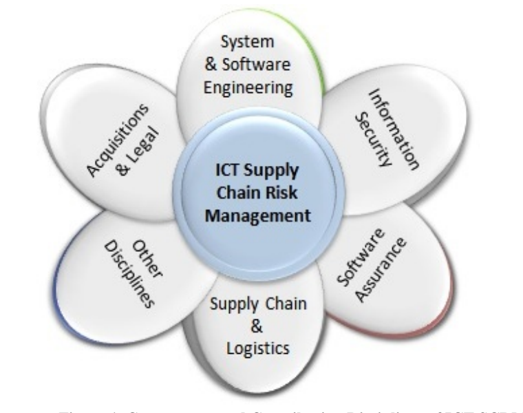

NIST IR 7622 日本語訳
英語タイトル : Notional Supply Chain Risk Management Practices for Federal Information Systems日本語タイトル : 連邦情報システムのための概念的なサプライチェーンリスク管理プラクティス
公開日 : 2012-10-16
原文URL : https://csrc.nist.gov/pubs/ir/7622/final
翻訳編集 : 自動生成（有志による非公式の日本語訳）, 原文取得日 : 2026-10-31, 訳文 : 1002 / 1004 ブロック
[要約] NIST IR 7622 は、実施することで連邦情報システムに対するサプライチェーンリスクの低減に役立つ、幅広いプラクティスを提供する報告書です。連邦の省庁および機関が ICT システム、製品、サービスの調達に ICT サプライチェーンリスク管理の考慮事項を統合するのに役立つプラクティスの集合であり、FIPS 199 のハイインパクトレベルに分類される情報システムでの使用が推奨されています。対象は ICT 製品およびサービスを取得するすべての連邦の省庁および機関で、調達要件の策定と、それらが満たされているかを監視する方法に関するガイドラインを提供します。サプライチェーンリスク管理の役割と責任、およびリスクの判断から調達の完了に至る実施プロセスを説明しています。
PDF から抽出した原文のうち 1 ブロックは原本との照合待ちです。
NISTIR 7622
NISTIR 7622
Notional Supply Chain Risk Management Practices for Federal Information Systems
連邦情報システムのための概念的なサプライチェーンリスク管理プラクティス
Jon Boyens
Celia Paulsen
Nadya Bartol
Rama Moorthy
Stephanie Shankles
Jon Boyens
Celia Paulsen
Nadya Bartol
Rama Moorthy
Stephanie Shankles
http://dx.doi.org/10.6028/NIST.IR.7622
http://dx.doi.org/10.6028/NIST.IR.7622
［NIST のロゴ。公的な標章のため、この非公式サイトには掲載していません。原本 PDF を参照してください。］
NISTIR 7622
NISTIR 7622
Notional Supply Chain Risk Management Practices for Federal Information Systems
連邦情報システムのための概念的なサプライチェーンリスク管理プラクティス
Jon Boyens
Celia Paulsen
Computer Security Division
Information Technology Laboratory
Jon Boyens
Celia Paulsen
Computer Security Division
Information Technology Laboratory
Nadya Bartol
Stephany A. Shankles
Booz Allen Hamilton
Nadya Bartol
Stephany A. Shankles
Booz Allen Hamilton
Rama Moorthy
Hatha Systems
Rama Moorthy
Hatha Systems
http://dx.doi.org/10.6028/NIST.IR.7622
http://dx.doi.org/10.6028/NIST.IR.7622
October 2012
2012 年 10 月
U.S. Department of Commerce
Rebecca Blank, Acting Secretary
米国商務省
Rebecca Blank 長官代行
National Institute of Standards and Technology
Patrick D. Gallagher, Under Secretary of Commerce for Standards and Technology and Director
National Institute of Standards and Technology
Patrick D. Gallagher、標準・技術担当商務次官兼所長
Reports on Computer Systems Technology
コンピュータシステム技術に関する報告書
The Information Technology Laboratory (ITL) at the National Institute of Standards and Technology (NIST) promotes the U.S. economy and public welfare by providing technical leadership for the Nation’s measurement and standards infrastructure. ITL develops tests, test methods, reference data, proof of concept implementations, and technical analyses to advance the development and productive use of information technology. ITL’s responsibilities include the development of management, administrative, technical, and physical standards and guidelines for the cost-effective security and privacy of other than national security-related information in Federal information systems
National Institute of Standards and Technology（NIST）の Information Technology Laboratory（ITL）は、国の測定・標準基盤に対する技術的リーダーシップを提供することで、米国経済と公共の福祉を促進しています。ITL は、情報技術の開発と生産的な利用を進めるため、試験、試験方法、参照データ、概念実証の実装および技術分析を開発しています。ITL の責務には、連邦情報システムにおける国家安全保障関連以外の情報の費用対効果の高いセキュリティとプライバシーのための、管理面、行政面、技術面および物理面の標準とガイドラインの策定が
NIST Interagency Reports
NIST 省庁間報告書
NIST Interagency or Internal Reports (NISTIRs) describe research of a technical nature of interest to a specialized audience. The series include interim or final reports on work performed by NIST for outside sponsors (both government and nongovernment). NISTIRs may also report results of NIST projects of transitory or limited interest, including those that will be published subsequently in more comprehensive form.1
NIST Interagency or Internal Reports（NISTIR）は、専門的な読者の関心を引く技術的な性質の研究を記述するものです。このシリーズには、外部の資金提供者（政府機関と非政府機関の両方）のために NIST が行った作業に関する中間報告書または最終報告書が含まれます。NISTIR は、一時的または限定的な関心にとどまる NIST のプロジェクトの成果を報告する場合もあり、その中には、のちにより包括的な形で公表されるものも含まれます。1
Authority
権限
This publication has been developed by NIST to further its statutory responsibilities under the Federal Information Security Management Act (FISMA), Public Law (P.L.) 107-347. NIST is responsible for developing information security standards and guidelines, including minimum requirements for Federal information systems, but such standards and guidelines shall not apply to national security systems without the express approval of appropriate Federal officials exercising policy authority over such systems. This guideline is consistent with the requirements of the Office of Management and Budget (OMB) Circular A-130, Section 8b(3), Securing Agency Information Systems, as analyzed in Circular A-130, Appendix IV: Analysis of Key Sections. Supplemental information is provided in Circular A-130, Appendix III, Security of Federal Automated Information Resources.
この刊行物は、Federal Information Security Management Act（FISMA）、Public Law（P.L.）107-347 に基づく法定の責務を果たすために NIST が作成したものです。NIST は、連邦情報システムの最低限の要件を含む情報セキュリティの標準およびガイドラインを策定する責任を負っていますが、これらの標準およびガイドラインは、国家安全保障システムに対する政策上の権限を行使する適切な連邦政府職員の明示的な承認がない限り、国家安全保障システムには適用されません。このガイドラインは、Office of Management and Budget（OMB）Circular A-130 の第 8b(3) 節「Securing Agency Information Systems」の要件と整合しています。この節は、Circular A-130 の付録 IV「Analysis of Key Sections」で分析されています。補足情報は、Circular A-130 の付録 III「Security of Federal Automated Information Resources」に示されています。
Nothing in this publication should be taken to contradict the standards and guidelines made mandatory and binding on Federal agencies by the Secretary of Commerce under statutory authority. Nor should these guidelines be interpreted as altering or superseding the existing authorities of the Secretary of Commerce, Director of the OMB, or any other Federal official. This publication may be used by nongovernmental organizations on a voluntary basis and is not subject to copyright in the United States. Attribution would, however, be appreciated by NIST.
この刊行物のいかなる内容も、法定の権限に基づいて商務長官が連邦機関に義務付け、拘束力を持たせた標準およびガイドラインに反するものと解釈すべきではありません。また、これらのガイドラインは、商務長官、OMB局長、その他の連邦政府職員の既存の権限を変更または置き換えるものと解釈すべきではありません。この刊行物は、非政府組織が任意で利用してもよく、米国では著作権の対象になりません。ただし、NIST への帰属を表示していただければ幸いです。
National Institute of Standards and Technology Interagency Report 7622
80 pages (October 2012)
National Institute of Standards and Technology Interagency Report 7622
80 ページ（2012 年 10 月）
Certain commercial entities, equipment, or materials may be identified in this document in order to describe an experimental procedure or concept adequately. Such identification is not intended to imply recommendation or endorsement by NIST, nor is it intended to imply that the entities, materials, or equipment are necessarily the best available for the purpose.
この文書では、実験の手順や概念を適切に説明するために、特定の商業的な組織、装置、資材が特定されている場合があります。このような特定は、NIST による推奨や承認を意味するものではなく、それらの組織、資材、装置がその目的に必ずしも最善のものであることを意味するものでもありません。
There may be references in this publication to other publications currently under development by NIST in accordance with its assigned statutory responsibilities. The information in this publication, including concepts and methodologies, may be used by Federal agencies even before the completion of such companion publications. Thus, until each publication is completed, current requirements, guidelines, and procedures, where they exist, remain operative. For planning and transition purposes, Federal agencies may wish to closely follow the development of these new publications by NIST.
この刊行物では、NIST が割り当てられた法定の責務に従って現在策定中の他の刊行物に言及している場合があります。これらの関連刊行物が完成する前であっても、連邦機関は、概念や方法論を含むこの刊行物の情報を利用できます。したがって、各刊行物が完成するまでは、現行の要件、ガイドライン、手順が存在する場合、それらは引き続き有効です。計画および移行のため、連邦機関は、NIST によるこれらの新しい刊行物の策定状況を注意深く追うことを検討してもよいです。
Organizations are encouraged to review all draft publications during public comment periods and provide feedback to NIST. All NIST publications, other than the ones noted above, are
組織には、パブリックコメント期間中にすべてのドラフト刊行物を確認し、NIST にフィードバックを提供することが奨励されています。上記のものを除き、NIST のすべての刊行物は
Comments on this publication may be submitted to:
National Institute of Standards and Technology
Attn: Computer Security Division, Information Technology Laboratory
100 Bureau Drive (Mail Stop 8930) Gaithersburg, MD 20899-8930
Electronic mail: scrm-nist@nist.gov
この刊行物に対するコメントは、次の宛先に提出できます。
National Institute of Standards and Technology
Attn: Computer Security Division, Information Technology Laboratory
100 Bureau Drive (Mail Stop 8930) Gaithersburg, MD 20899-8930
電子メール: scrm-nist@nist.gov
Acknowledgements
謝辞
The authors, Jon Boyens, National Institute of Standards and Technology (NIST), Celia Paulsen (NIST), Rama Moorthy (Hatha Systems), and Nadya Bartol and Stephanie Shankles (Booz Allen and Hamilton), would like to acknowledge and thank Marianne Swanson, NIST, for her leadership in initiating this project as well as in the development of the document’s initial public draft. We would like to thank Dan Reddy (EMC), Edna Conway (Cisco), and Hart Rossman (SAIC) for their comments and suggestions.
著者である Jon Boyens（National Institute of Standards and Technology（NIST））、Celia Paulsen（NIST）、Rama Moorthy（Hatha Systems）、Nadya Bartol と Stephanie Shankles（Booz Allen and Hamilton）は、このプロジェクトの発足と、この文書の最初のパブリックドラフトの作成を主導した NIST の Marianne Swanson に感謝の意を表します。また、コメントと提案をいただいた Dan Reddy（EMC）、Edna Conway（Cisco）、Hart Rossman（SAIC）にも感謝します。
We would also like to thank the members of the Comprehensive National Cybersecurity Initiative (CNCI) 11 Lifecycle Processes and Standards Working Group and their support contractors as well as members of the Information Technology (IT) Sector and Communications Sector Coordinating Councils for their review and comments on this document. Their comments and direction were instrumental in the development of this document. Additionally, we would like to thank Dr. Sandor Boyson and the University of Maryland’s Supply Chain Management Center for their research on ICT SCRM, which provided valuable contributions for this document.
また、Comprehensive National Cybersecurity Initiative（CNCI）11 Lifecycle Processes and Standards Working Group のメンバーとその支援請負業者、ならびに Information Technology（IT）Sector and Communications Sector Coordinating Councils のメンバーが、この文書をレビューしてコメントを寄せてくださったことに感謝します。そのコメントと指針は、この文書の作成に不可欠でした。さらに、Dr. Sandor Boyson と University of Maryland の Supply Chain Management Center による ICT SCRM の研究が、この文書に貴重な貢献をしたことに感謝します。
Abstract
概要
This publication is intended to provide a wide array of practices that, when implemented, will help mitigate supply chain risk to federal information systems. It seeks to equip federal departments and agencies with a notional set of repeatable and commercially reasonable supply chain assurance methods and practices that offer a means to obtain an understanding of, and visibility throughout, the supply chain.
この刊行物は、実施することで連邦情報システムに対するサプライチェーンリスクの低減に役立つ、幅広いプラクティスを提供することを目的としています。これは、連邦の省庁および機関に、繰り返し適用でき、商業的に妥当な、概念的なサプライチェーンアシュアランスの方法とプラクティスの集合を提供し、サプライチェーンを理解し、その全体にわたって可視性を得る手段を提供しようとするものです。
Keywords
キーワード
Information and Communication Technology, ICT, Supply Chain, Risk Management, Acquire, Integrator, Supplier
情報通信技術、ICT、サプライチェーン、リスク管理、取得、インテグレーター、サプライヤー
Table of Contents
目次
APPENDIX D UMD ICT SUPPLY CHAIN STUDY
付録 D UMD ICT サプライチェーン調査
1 Introduction
1 はじめに
The information and communications technology (ICT) supply chain is a globally distributed, interconnected set of organizations, people, processes, products, and services. It extends across the full system development life cycle including research and development (R&D), design, development, acquisition of custom or commercial off-the-shelf (COTS) products, delivery, integration, operations, and disposal/retirement.
情報通信技術（ICT）サプライチェーンは、組織、人、プロセス、製品、サービスからなる、世界規模で分散し相互接続された集合体です。これは、研究開発（R&D）、設計、開発、カスタム製品または市販（COTS）製品の取得、配送、統合、運用、廃棄・退役を含む、システム開発ライフサイクル全体に及びます。
Federal agency information systems2 are increasingly at risk of both intentional and unintentional supply chain compromise due to the growing sophistication of ICT and the growing speed and scale of a complex, distributed global supply chain. Federal departments and agencies currently have neither a consistent nor comprehensive way of understanding the often opaque processes and practices used to create and deliver the hardware and software products and services that it procures. This lack of understanding, visibility, traceability, and control increases the challenges associated with managing the risk of exploitation through a variety of means including counterfeit materials, malicious software, or untrustworthy products. Overall, it makes it increasingly difficult for federal departments and agencies to understand their exposure and manage the associated supply chain risks. Currently, federal departments and agencies and many private sector integrators and suppliers use varied and nonstandard practices, exacerbating the challenge.
連邦機関の情報システム2は、ICT の高度化と、複雑で分散したグローバルなサプライチェーンの速度と規模の拡大により、意図的および非意図的なサプライチェーン侵害のリスクにますますさらされています。連邦の省庁および機関は現在、調達するハードウェアおよびソフトウェアの製品とサービスを作成・提供するために使われる、多くの場合不透明なプロセスやプラクティスを、一貫した包括的な方法で理解する手段を持っていません。このように理解、可視性、追跡可能性、統制が不足していることで、偽造資材、悪意のあるソフトウェア、信頼できない製品など、さまざまな手段による悪用のリスクを管理することの難しさが増しています。全体として、連邦の省庁および機関が自らのエクスポージャーを理解し、関連するサプライチェーンリスクを管理することがますます困難になっています。現在、連邦の省庁および機関と、民間部門の多くのインテグレーターおよびサプライヤーは、多様で標準化されていないプラクティスを用いており、このことが課題を悪化させています。
The modern ICT supply chain is subject to a variety of cyber security threats. These threats may affect the confidentiality, integrity, or availability of government information and information systems and include counterfeiting, tampering, theft, reduced or unwanted functionality, or malicious content. Vulnerabilities that can be used as the vehicles to drive these threats may be instantiated by malicious individuals and as a result of the lack of good processes and practices throughout the life cycle of a system. As ICT products or services pass through the supply chain, intentional and unintentional vulnerabilities may be inserted and transferred to federal departments or agencies. These vulnerabilities enable threat agents to insert malicious content, exfiltrate data, or take advantage of the vulnerabilities in a myriad of other ways and may result in substandard products or services, unanticipated failure rates, or compromise of federal missions and information.
現代の ICT サプライチェーンは、さまざまなサイバーセキュリティ脅威にさらされています。これらの脅威は、政府の情報および情報システムの機密性、完全性、可用性に影響を及ぼす場合があり、偽造、改ざん、窃取、機能の低下または望まない機能、悪意のあるコンテンツなどが含まれます。これらの脅威を実行する手段となり得る脆弱性は、悪意のある個人によって作り込まれる場合があるほか、システムのライフサイクル全体にわたって適切なプロセスやプラクティスが欠如していることの結果として生じる場合もあります。ICT 製品またはサービスがサプライチェーンを通過する際に、意図的または非意図的な脆弱性が作り込まれ、連邦の省庁または機関に引き継がれる場合があります。これらの脆弱性により、脅威エージェントは悪意のあるコンテンツを挿入したり、データを外部へ持ち出したり、その他無数の方法で脆弱性を悪用したりすることが可能になり、その結果、低品質の製品やサービス、予期しない故障率、連邦のミッションや情報の危殆化が生じる場合があります。
A multipronged, mission-driven approach is the best way to build assurance into the ICT systems, products, and services that the federal government procures and manages. Such an approach may include: government acquisition guidelines that help integrate supply chain practices into IT acquisitions; widely adopted or international standards on supply chain practices for integrators and suppliers; a means to share specific and contextual threat information; current and new technologies and tools incorporated into supply chain practices; and increased ability of federal departments and agencies to manage supply chain risks once an information system is in place.
複数の側面を持つ、ミッション主導のアプローチが、連邦政府が調達・管理する ICT システム、製品、サービスにアシュアランスを組み込む最善の方法です。このようなアプローチには、次のものが含まれる場合があります。サプライチェーンのプラクティスを IT 調達に統合するのに役立つ政府の調達ガイドライン、インテグレーターおよびサプライヤーに向けたサプライチェーンのプラクティスに関する広く採用された標準または国際標準、具体的で状況に即した脅威情報を共有する手段、サプライチェーンのプラクティスに取り入れられた現行および新規の技術とツール、情報システムが導入された後に連邦の省庁および機関がサプライチェーンリスクを管理する能力の向上です。
This document seeks to equip federal departments and agencies with a notional set of repeatable and commercially reasonable supply chain assurance methods and practices that offer a means to obtain a greater level of understanding, visibility, traceability, and control throughout the ICT supply chain than agencies have today. This understanding and visibility will improve the ability of federal departments and agencies to strategically manage the associated Information and Communication Technology (ICT) supply chain risks over the entire life cycle of ICT systems, products, and services.
この文書は、連邦の省庁および機関に、概念的な一式として、繰り返し適用でき商業的に妥当なサプライチェーンアシュアランスの方法とプラクティスを提供し、各機関が現在持っているよりも高いレベルで ICT サプライチェーン全体にわたる理解、可視性、追跡可能性、統制を得る手段を示そうとするものです。この理解と可視性により、連邦の省庁および機関が、情報通信技術（ICT）システム、製品、サービスのライフサイクル全体にわたって、関連する ICT サプライチェーンリスクを戦略的に管理する能力が向上します。
Many of the ICT supply chain risk management (SCRM) activities described in this document build on existing business practices to specifically help manage supply chain risks in the evolving threat environment. These practices originate from within government and industry organizations that already use a variety of business or engineering processes from many disciplines including logistics, reliability, security, and safety. When using this document for working with mature industry organizations, government agencies should be flexible in accepting evidence of existing practices in the form that the industry already captures. This flexibility will ensure that government and industry are able to use existing artifacts collected for other disciplines to demonstrate existence of activities required to achieve supply chain assurance. It will also allow both industry and government the flexibility to improve their practices and procedures over time. Any risk management activity resulting from the application of these practices aims to improve the risk posture for the federal government.
この文書で説明する ICT サプライチェーンリスク管理（SCRM）活動の多くは、進化する脅威環境でサプライチェーンリスクを管理するために、既存の業務プラクティスを土台としています。これらのプラクティスは、ロジスティクス、信頼性、セキュリティ、安全性など多くの分野のさまざまな業務プロセスやエンジニアリングプロセスをすでに使用している、政府機関や産業界の組織に由来します。成熟した産業界の組織とこの文書を用いて作業する場合、政府機関は、既存のプラクティスの証拠を、産業界がすでに記録している形式で受け入れる柔軟性を持つべきです。この柔軟性により、政府と産業界は、サプライチェーンアシュアランスを達成するために必要な活動が存在することを示すのに、他の分野のために収集された既存の成果物を利用できます。また、産業界と政府の双方が、時間をかけてプラクティスや手順を改善する柔軟性を持てるようにもなります。これらのプラクティスの適用によって生じるリスク管理活動は、いずれも連邦政府のリスク態勢の改善を目的としています。
This document organizes specific ICT SCRM practices into those targeting federal department and agency acquirers (acquirers), developers and integrators of custom-built information systems (integrators), and COTS suppliers (including open source software) (suppliers). These practices are recommended to be used for those information systems categorized at the Federal Information Processing Standards (FIPS) 199 high-impact level. However, it is recommended that Federal agency acquirers select and tailor the acquirer practices in this document based on the suitability for a specific application or acquisition and combined impact on the performance, cost, and schedule. Federal agency acquirers may use the integrator and the supplier practices in this document as examples of reasonable expectations that can be communicated to the integrators and suppliers.
この文書は、具体的な ICT SCRM プラクティスを、連邦の省庁および機関の取得者（取得者）、特注開発の情報システムの開発者およびインテグレーター（インテグレーター）、COTS サプライヤー（オープンソースソフトウェアを含む）（サプライヤー）を対象とするものに整理しています。これらのプラクティスは、Federal Information Processing Standards（FIPS）199 のハイインパクトレベルに分類される情報システムに用いることが推奨されます。ただし、連邦機関の取得者は、この文書の取得者向けプラクティスを、特定の適用または調達への適合性、ならびに性能、コスト、スケジュールへの複合的な影響に基づいて選択し、テーラリングすることが推奨されます。連邦機関の取得者は、この文書のインテグレーター向けおよびサプライヤー向けのプラクティスを、インテグレーターやサプライヤーに伝達できる妥当な期待の例として用いてもよいです。
This document supports the expanded set of ICT SCRM practices in draft NIST SP 800-53 Revision 4. Because the two documents are developed in parallel, it is not possible to reconcile the specific controls and practices at this point in time. It is anticipated that the future special publication addressing ICT SCRM will be fully harmonized and consistent with draft NIST SP 800-53 Revision 4, or subsequent revisions, depending on the timing of the publication.
この文書は、NIST SP 800-53 Revision 4 ドラフトで拡充された ICT SCRM プラクティスの集合を支援するものです。2 つの文書は並行して策定されているため、現時点では、具体的なコントロールとプラクティスを調整することはできません。将来の ICT SCRM を扱う特別刊行物は、刊行時期に応じて、NIST SP 800-53 Revision 4 ドラフト、またはその後の改訂版と完全に調和し、整合したものになると見込まれます。
1.1 Purpose
1.1 目的
This document provides a set of practices to help federal departments and agencies integrate ICT supply chain risk management considerations into procurement of ICT systems, products, and services. The ICT SCRM practices in this document are intended to promote a greater understanding of processes and practices used to create and deliver hardware and software that compose federal information systems. These practices are recommended to be used for those information systems categorized at the FIPS 199 high-impact level.3 However, agencies may choose to apply the practices recommended in this document to specific systems with a lower impact level, based on the tailoring guidance provided in draft NIST SP 800-53 Revision 4, if appropriate.4
この文書は、連邦の省庁および機関が、ICT システム、製品、サービスの調達に ICT サプライチェーンリスク管理の考慮事項を統合するのに役立つプラクティスの集合を提供します。この文書の ICT SCRM プラクティスは、連邦情報システムを構成するハードウェアおよびソフトウェアの作成と配送に用いられるプロセスやプラクティスへの理解を深めることを目的としています。これらのプラクティスは、FIPS 199 のハイインパクトレベルに分類される情報システムに用いることが推奨されます。3ただし、各機関は、適切であれば、NIST SP 800-53 Revision 4 ドラフトに示されたテーラリングのガイダンスに基づき、この文書で推奨するプラクティスを、より低いインパクトレベルの特定のシステムに適用することを選択してもよいです。4
Many of the practices in this document are based on good security practices and procedures found in NIST Special Publications (SPs) like NIST SP 800-53, Recommended Security Controls for Federal Information Systems and Organizations; the National Defense University, Software Assurance in Acquisition: Mitigating Risks to the Enterprise; and the National Defense Industrial Association (NDIA), Engineering for System Assurance, and then expanded upon to include supply chain-specific implications. Additional guidance that may have supply chain implications includes, but is not limited to, International Traffic in Arms Regulations (ITAR) and Customs-Trade Partnership Against Terrorism (CTPAT).
この文書のプラクティスの多くは、NIST SP 800-53, Recommended Security Controls for Federal Information Systems and Organizations などの NIST Special Publication（SP）、National Defense University の Software Assurance in Acquisition: Mitigating Risks to the Enterprise、National Defense Industrial Association（NDIA）の Engineering for System Assurance に見られる、優れたセキュリティのプラクティスと手順に基づいており、それをサプライチェーン固有の含意を含むように拡張したものです。サプライチェーンへの含意を持つ可能性のある追加のガイダンスには、International Traffic in Arms Regulations（ITAR）や Customs-Trade Partnership Against Terrorism（CTPAT）が含まれますが、これらに限られません。
The practices contained in this document are built on existing practices from multiple disciplines and are intended to increase the ability of federal departments and agencies to strategically manage the associated ICT supply chain risks over the entire life cycle of products, systems, and services. The practices addressed in this document can be applied to the research and development (R&D), design, development, acquisition of custom, government-off-the-shelf (GOTS) or COTS products, delivery, integration, operations, and disposal/retirement activities.
この文書に含まれるプラクティスは、複数の分野の既存のプラクティスを土台としており、製品、システム、サービスのライフサイクル全体にわたって、関連する ICT サプライチェーンリスクを連邦の省庁および機関が戦略的に管理する能力を高めることを目的としています。この文書で扱うプラクティスは、研究開発（R&D）、設計、開発、特注製品、政府調達汎用品（GOTS）または COTS 製品の取得、配送、統合、運用、廃棄・退役の各活動に適用できます。
This document does not provide specific contract language, a detailed threat assessment, or a complete list of supply chain assurance methods and techniques that mitigate specific supply chain threats. It is our intent that public and private sector organizations apply the practices in this document and provide NIST with comments on the practicality, feasibility, cost, challenges, and successes of the guidance. NIST intends to develop a NIST Special Publication on the same topic after additional research is done.
この文書は、具体的な契約文言、詳細な脅威評価、特定のサプライチェーン脅威を低減するサプライチェーンアシュアランスの方法や技法の完全な一覧を提供するものではありません。官民の組織がこの文書のプラクティスを適用し、このガイダンスの実用性、実現可能性、コスト、課題、成功事例について NIST にコメントを寄せていただくことが、私たちの意図です。NIST は、追加の調査が行われた後に、同じトピックに関する NIST Special Publication を策定することを予定しています。
1.2 Scope
1.2 適用範囲
This document targets all federal departments and agencies that acquire ICT products and services. It is intended to serve a diverse federal audience including mission/business owners, information system owners, acquisition staff, information system security personnel, and system engineers responsible for acquiring, delivering, and operating information systems.
この文書は、ICT 製品およびサービスを取得するすべての連邦の省庁および機関を対象としています。ミッション/業務の所有者、情報システムの所有者、調達担当者、情報システムセキュリティ担当者、情報システムの取得、配送、運用に責任を負うシステムエンジニアなど、多様な連邦の読者に役立つことを意図しています。
This document provides guidelines for federal department and agency acquirers on developing acquisitions requirements and potential ways of monitoring whether and how well these requirements are met. The document also provides useful information for integrators and suppliers regarding practices that may be useful to them for addressing ICT supply chain risks in the context of federal needs.
この文書は、連邦の省庁および機関の取得者に対し、調達要件の策定と、これらの要件が満たされているか、またどの程度満たされているかを監視する潜在的な方法に関するガイドラインを提供します。また、連邦のニーズという状況において ICT サプライチェーンリスクに対処するために役立つ可能性のあるプラクティスについて、インテグレーターおよびサプライヤーにとって有用な情報も提供します。
For the purposes of ICT SCRM, only those elements5 that contain programmable logic and that are critically important to the system function should be evaluated for ICT SCRM risks (e.g., software and hardware with embedded code). Furthermore, not every element is critical, whether it is a chip, a router, or a piece of software. Agencies should conduct an analysis of mission criticality to support a risk-based decision as to whether to apply all, some, or none of the practices described in this document against elements to be acquired and any associated supply chain processes.
ICT SCRM の目的では、プログラム可能なロジックを含み、かつシステム機能にとって極めて重要な要素5（たとえば、組込みコードを持つソフトウェアやハードウェア）のみを、ICT SCRM リスクについて評価すべきです。さらに、チップ、ルーター、ソフトウェアのいずれであっても、すべての要素が重要であるわけではありません。各機関は、取得する要素と関連するサプライチェーンプロセスに対して、この文書で説明するプラクティスのすべてを適用するか、一部を適用するか、まったく適用しないかのリスクに基づく判断を支えるために、ミッション重要度の分析を実施すべきです。
This document is not intended to replace existing federal government procurement policies, procedures, and practices. Rather, it aims to help integrate ICT SCRM practices proposed in this document into existing overall federal agency procurement practices. Similarly, the ICT SCRM practices provided in this document intend to incorporate the proposed practices in existing federal agency information security and logistics practices.
この文書は、既存の連邦政府の調達方針、手順、プラクティスに置き換わることを意図したものではありません。むしろ、この文書で提案する ICT SCRM プラクティスを、既存の連邦機関の調達プラクティス全体に統合するのに役立つことを目的としています。同様に、この文書で示す ICT SCRM プラクティスは、提案するプラクティスを、既存の連邦機関の情報セキュリティおよびロジスティクスのプラクティスに取り込むことを意図しています。
This document does not discuss supply chain threat scenarios. Federal departments and agencies have a diverse set of missions and operational contexts. The threats applicable to the specific federal department and agency missions are also constantly evolving. Therefore, developing specific threat scenarios may be counterproductive. Federal departments and agencies are encouraged to consult with existing threat models if the need arises.
この文書では、サプライチェーンの脅威シナリオについては論じません。連邦の省庁および機関は、多様なミッションと運用状況を持っています。また、各連邦省庁および機関のミッションに適用される脅威も絶えず進化しています。したがって、特定の脅威シナリオを策定することは、逆効果になる場合があります。連邦の省庁および機関は、必要が生じた場合には、既存の脅威モデルを参照することが推奨されています。
1.3 Background
1.3 背景
The President’s Comprehensive National Cyber Security Initiative (CNCI) 11 is co-chaired by the Department of Defense (DoD) and the Department of Homeland Security (DHS). The initiative seeks to provide federal departments and agencies with a well-understood toolkit of technical and intelligence resources to manage supply chain risk to a level commensurate with the criticality of information systems or networks. Through the work of CNCI 11, an interagency group evaluated a number of source documents and developed an initial set of supply chain assurance methods/techniques or practices that cover the system development life cycle (SDLC) as part of a governmentwide SCRM solution. The initial public draft of this document was developed using these practices as a foundation. Draft NIST SP 800-53 Revision 4, Recommended Security Controls for Federal Information Systems and Organizations, and The 25 Point Implementation Plan to Reform Federal Information Technology Management from the U.S Chief Information Officer (CIO) are also foundational to the development of this document. This report takes into consideration stakeholder comments and attempts to address many of the recommendations received while maintaining the overall purpose of the document.
大統領の Comprehensive National Cyber Security Initiative（CNCI）11 は、国防総省（DoD）と国土安全保障省（DHS）が共同議長を務めています。このイニシアチブは、情報システムやネットワークの重要度に見合うレベルでサプライチェーンリスクを管理するための、十分に理解された技術資源とインテリジェンス資源のツールキットを連邦の省庁および機関に提供することを目指しています。CNCI 11 の取り組みを通じて、省庁間グループが多数の元資料を評価し、政府全体の SCRM ソリューションの一部として、システム開発ライフサイクル（SDLC）を網羅するサプライチェーンアシュアランスの方法/技法またはプラクティスの最初の集合を策定しました。この文書の最初のパブリックドラフトは、これらのプラクティスを基礎として作成されました。NIST SP 800-53 Revision 4 ドラフト Recommended Security Controls for Federal Information Systems and Organizations と、米国連邦最高情報責任者（CIO）による The 25 Point Implementation Plan to Reform Federal Information Technology Management も、この文書の策定の基礎となっています。この報告書は、関係者からのコメントを考慮し、この文書の全体的な目的を維持しながら、寄せられた提言の多くに対応しようとしたものです。
1.4 Related Documents
1.4 関連文書
U.S. law and associated policy require federal departments and agencies to use international, voluntary consensus standards in their procurement and regulatory activities, except where inconsistent with law or otherwise impractical.6 The ICT SCRM approach and practices described in this document are rooted in many international standards as well as government and industry documents, which include:
米国の法律および関連する政策は、法律に反する場合やその他実際的でない場合を除き、連邦の省庁および機関に対し、調達および規制の活動において国際的な任意のコンセンサス標準を使用することを求めています。6この文書で説明する ICT SCRM のアプローチとプラクティスは、多くの国際標準と、政府および産業界の文書に根ざしています。これには次のものが含まれます。
•ISO/IEC 15288: 2008 Systems and software engineering – System life cycle processes;
•ISO/IEC 15288: 2008 Systems and software engineering – System life cycle processes;
•Draft ISO/IEC 27036 Information technology: Security techniques-Information Security for Supplier Relationships;
•Draft ISO/IEC 27036 Information technology: Security techniques-Information Security for Supplier Relationships;
•Recommended Security Controls for Federal Information Systems and Organizations, NIST SP 800-53 Revision 3 or later;
•Recommended Security Controls for Federal Information Systems and Organizations, NIST SP 800-53 Revision 3 or later;
•ICT Supply Chain Threats: Frame of Reference Document, DHS;
•ICT Supply Chain Threats: Frame of Reference Document, DHS;
•NDIA System Assurance Guidebook v1.0;
•NDIA System Assurance Guidebook v1.0;
•The Software Supply Chain Integrity Framework (July 21, 2009) and Software Integrity Controls (June 14, 2010) from SAFECode;
•The Software Supply Chain Integrity Framework (July 21, 2009) and Software Integrity Controls (June 14, 2010) from SAFECode;
•Assessing SCRM Capabilities and Perspectives of the IT Vendor Community: Toward a Cyber-Supply Chain Code of Practice. A NIST-sponsored project conducted by The Supply Chain Management Center Robert H. Smith School of Business, University of Maryland;
•Assessing SCRM Capabilities and Perspectives of the IT Vendor Community: Toward a Cyber-Supply Chain Code of Practice. A NIST-sponsored project conducted by The Supply Chain Management Center Robert H. Smith School of Business, University of Maryland;
•Open Trusted Technology Provider Framework (O-TTPF) A White Paper by: The Open Group Trusted Technology Forum, February 2011; and
•Open Trusted Technology Provider Framework (O-TTPF) A White Paper by: The Open Group Trusted Technology Forum, February 2011; and
•Open Trusted Technology Provider Standard (O-TTPS) Mitigating Tainted and Counterfeit Products by: The Open Group Trusted Technology Forum. Final expected Quarter 1, 2013.
•Open Trusted Technology Provider Standard (O-TTPS) Mitigating Tainted and Counterfeit Products by: The Open Group Trusted Technology Forum. Final expected Quarter 1, 2013.
1.5 Document Structure
1.5 文書の構成
The remainder of the document is organized as follows:
この文書の残りは、次のように構成されています。
•Section 2: Overview, provides a high-level discussion of ICT supply chain challenges and foundational practices.
•第 2 節「概要」では、ICT サプライチェーンの課題と基盤となるプラクティスについて、高い視点から論じます。
•Section 3: Implementing ICT SCRM, provides information on how ICT SCRM considerations can be integrated into the federal acquisition life cycle.
•第 3 節「ICT SCRM の実施」では、ICT SCRM の考慮事項を連邦の調達ライフサイクルにどのように統合できるかについての情報を提供します。
•Section 4: Supply Chain Risk Management Practices, provides the ten practices identified for ICT SCRM throughout the system or element life cycle with specific activities tailored for suppliers, acquirers, and integrators. Activities are categorized as Programmatic Activities, General Requirements, Technical Implementation Requirements, and Verification and Validation Activities.
•第 4 節「サプライチェーンリスク管理プラクティス」では、システムまたは要素のライフサイクル全体にわたる ICT SCRM のために特定された 10 のプラクティスを、サプライヤー、取得者、インテグレーター向けに調整した具体的な活動とともに示します。活動は、プログラム的活動、一般要件、技術的実装要件、検証および妥当性確認活動に分類されます。
•Appendix A provides a glossary of terms used in this document.
•付録 A は、この文書で使用する用語の用語集を提供します。
•Appendix B provides acronyms and abbreviations used in this document.
•付録 B は、この文書で使用する略語および頭字語を提供します。
•Appendix C lists references used in the development of this document.
•付録 C は、この文書の作成に使用した参考文献を一覧にします。
•Appendix D summarizes the University of Maryland Supply Chain Study.
•付録 D は、University of Maryland Supply Chain Study を要約します。
2 Overview
2 概要
This section provides an overview of challenges associated with addressing ICT SCRM and builds the foundation for implementing ICT SCRM practices within individual agencies’ enterprise processes.
この節では、ICT SCRM への対処に伴う課題の概要を示し、各機関のエンタープライズプロセスの中で ICT SCRM プラクティスを実施するための基盤を築きます。
2.1 Challenges
2.1 課題
The federal government’s reliance on COTS hardware and software7 is driven by the need for cost reduction, achieving operational efficiencies, and economies of scale. Incorporating COTS hardware and software permits the federal government to leverage the pace of COTS innovation without bearing the development costs of such innovation. While the benefits are substantial, there are also consequences of such reliance that affect the federal government’s ability to protect information and information systems.
連邦政府が COTS のハードウェアおよびソフトウェア7に依存しているのは、コスト削減、運用効率の達成、規模の経済の必要性によるものです。COTS のハードウェアとソフトウェアを取り入れることで、連邦政府は、そのようなイノベーションの開発コストを負担することなく、COTS のイノベーションの速さを活用できます。利点は大きいものの、このような依存には、連邦政府が情報および情報システムを保護する能力に影響を及ぼす帰結もあります。
The growing sophistication of today’s ICT, facilitated by the speed and scale of globalization, has given rise to an increasingly complex global ICT supply chain, with logically long and geographically diverse routes, including multiple tiers of outsourcing. This leads to a significant increase in the number of individuals and organizations who “touch” a product, and may allow malicious actors (individual, organization, or nation-state), direct or indirect, to affect the management or operations of companies that may result in compromise to the information system, organization, or Nation. However, global aspects of the supply chain alone are no reason to employ special supply chain risk mitigation practices, as risks must be evaluated in their entirety.
今日の ICT の高度化は、グローバル化の速度と規模によって促進され、論理的に長く地理的に多様な経路と複数階層の外部委託を伴う、ますます複雑なグローバル ICT サプライチェーンを生み出しました。これにより、製品に「触れる」個人や組織の数が大幅に増加し、悪意のある行為者（個人、組織、または国家）が、直接または間接に企業の管理や運用に影響を及ぼし、その結果として情報システム、組織、または国家が危殆化する可能性が生じます。しかし、リスクは全体として評価しなければならないため、サプライチェーンがグローバルであるという側面だけでは、特別なサプライチェーンリスク低減プラクティスを採用する理由にはなりません。
Threats to the supply chain are constantly growing in sophistication, number, and diversity. According to an August 2009 Information Technology Sector Baseline Risk Assessment, ICT supply chain is susceptible to both intentional and unintentional threats and vulnerabilities. Intentional threats include counterfeit products and malicious software. Unintentional threats include “inadequate or poor product security and integrity practices throughout the development life cycle; unintended access to critical systems; poor procurement standards and practices; reliance on third-party providers for subcomponents; and inadequate personnel screening.”8
サプライチェーンに対する脅威は、高度さ、数、多様性のいずれの面でも絶えず増大しています。2009 年 8 月の Information Technology Sector Baseline Risk Assessment によれば、ICT サプライチェーンは、意図的な脅威および脆弱性と、非意図的な脅威および脆弱性の両方の影響を受けやすいとされています。意図的な脅威には、偽造製品や悪意のあるソフトウェアが含まれます。非意図的な脅威には、「開発ライフサイクル全体にわたる不十分または不適切な製品セキュリティおよび完全性のプラクティス、重要システムへの意図しないアクセス、不適切な調達標準およびプラクティス、サブコンポーネントのサードパーティプロバイダーへの依存、不十分な要員審査」が含まれます。8
Even solely domestically developed information system elements may contain intentional and unintentional vulnerabilities that may present opportunities for supply chain-related compromises including unwanted items (e.g., counterfeits) into the supply chain. Due to the global and distributed nature of supply chains, the elements containing intentional and unintentional vulnerabilities are transferred among multiple ICT suppliers throughout the supply chain. While unintentional vulnerabilities may exist due to a variety of reasons, the fact that they are not always identified nor in many cases resolved, and potentially inherited by the final acquirer, makes them a part of the ICT SCRM challenge.
国内のみで開発された情報システムの要素であっても、意図的および非意図的な脆弱性を含んでいる場合があり、それが、望まないもの（たとえば偽造品）をサプライチェーンに紛れ込ませることを含む、サプライチェーンに関連する危殆化の機会となる可能性があります。サプライチェーンがグローバルで分散しているという性質のために、意図的および非意図的な脆弱性を含む要素は、サプライチェーン全体の複数の ICT サプライヤーの間で受け渡されます。非意図的な脆弱性はさまざまな理由で存在し得ますが、それらが常に特定されるわけではなく、多くの場合は解消されず、最終的な取得者に引き継がれる可能性があるという事実が、それらを ICT SCRM の課題の一部にしています。
Furthermore, acquirer, integrator, and supplier organizations generally implement quality and security through two separate enterprise operational organizations. Supply chain quality and security vulnerabilities are likely to be addressed through these separate organizations. Whether addressing intentional or unintentional vulnerabilities and related mitigations, cross-communication between these two enterprise organizations is required to holistically approach ICT SCRM.
さらに、取得者、インテグレーター、サプライヤーの各組織は、一般に、品質とセキュリティを 2 つの別々のエンタープライズの運用部門を通じて実現しています。サプライチェーンの品質とセキュリティの脆弱性は、これらの別々の部門を通じて対処される可能性が高いです。意図的な脆弱性と非意図的な脆弱性のどちらに対処する場合でも、関連する低減策に対処する場合でも、ICT SCRM に全体的に取り組むには、この 2 つのエンタープライズ部門の間の相互のコミュニケーションが必要です。
Today's multifaceted global economy and manufacturing practices make corporate ownership and control more ambiguous when assessing supply chain vulnerabilities. For example, foreign-based companies sometimes manufacture and assemble products and components in the United States, and U.S.-based companies sometimes manufacture products and components overseas, or domestically employ foreign workers.
今日の多面的なグローバル経済と製造プラクティスは、サプライチェーンの脆弱性を評価する際に、企業の所有と支配をより曖昧にしています。たとえば、外国に拠点を置く企業が米国内で製品やコンポーネントを製造・組み立てることがあり、米国に拠点を置く企業が海外で製品やコンポーネントを製造したり、国内で外国人労働者を雇用したりすることがあります。
Though globalization and its consequences are permanent and likely to have a greater impact over time, this growing complexity reduces both the depth and breadth of visibility and traceability achievable by the federal acquirer. This lack of visibility and traceability increases the acquirer’s risk of being unable to manage the risks associated with intentional and unintentional compromises which may be introduced through a variety of means, including counterfeit materials or malicious software.
グローバル化とその帰結は恒久的であり、時間とともにより大きな影響を及ぼす可能性が高いものの、この複雑さの増大により、連邦の取得者が達成できる可視性と追跡可能性の深さと幅の両方が低下します。このように可視性と追跡可能性が不足していると、偽造資材や悪意のあるソフトウェアなど、さまざまな手段で持ち込まれる可能性のある意図的および非意図的な危殆化に伴うリスクを取得者が管理できなくなるリスクが高まります。
Currently, federal departments and agencies as well as private sector integrators and suppliers use widely varied ICT SCRM practices. This fact is underscored by the report from the University of Maryland’s Supply Chain Management Center, which indicates that there is an overall lack of emphasis on ICT SCRM from companies of all sizes (see Appendix D). As a result, the potential for intentional and unintentional compromise of federal information systems increases.
現在、連邦の省庁および機関、ならびに民間部門のインテグレーターおよびサプライヤーは、大きく異なる ICT SCRM プラクティスを用いています。この事実は、University of Maryland の Supply Chain Management Center の報告書によっても裏付けられており、あらゆる規模の企業で ICT SCRM が全体的に重視されていないことが示されています（付録 D を参照）。その結果、連邦情報システムが意図的または非意図的に危殆化される可能性が高まっています。
2.2 Foundational Practices
2.2 基盤となるプラクティス
Successful integration of ICT SCRM into existing agency activities is a multidisciplinary enterprise process that, when performed correctly, can help manage ICT supply chain risks to federal acquirers.
ICT SCRM を既存の機関活動にうまく統合することは、複数の分野にまたがるエンタープライズプロセスであり、正しく実施すれば、連邦の取得者に対する ICT サプライチェーンリスクの管理に役立ちます。
Addressing the challenges associated with ICT SCRM requires integrating practices from enterprise risk management, information security, software assurance, system and software engineering, project management, quality, acquisition, and a number of other disciplines, as illustrated in Figure 1.
ICT SCRM に伴う課題への対処には、図 1 に示すように、エンタープライズリスク管理、情報セキュリティ、ソフトウェアアシュアランス、システムおよびソフトウェアエンジニアリング、プロジェクト管理、品質、調達、その他多数の分野のプラクティスを統合することが必要です。

花の形の図。中央の円には「ICT Supply Chain Risk Management」と記されています。その周囲の6枚の花びらには、「System & Software Engineering」（上）、「Information Security」、「Software Assurance」、「Supply Chain & Logistics」（下）、「Other Disciplines」、「Acquisitions & Legal」と記されています。
Figure 1. Components and Contributing Disciplines of ICT SCRM
図 1. ICT SCRM の構成要素と寄与する分野
To be successful, federal departments and agencies need to achieve a certain level of maturity in these multiple disciplines and ascertain that they have successfully implemented and standardized basic business practices. Basic practices include ensuring that federal department and agency acquirers understand the cost and scheduling constraints of the practices, integrating information security requirements into the acquisition language, using applicable baseline security controls as one of the sources for security requirements, ensuring a robust software quality control process, and establishing multiple delivery routes for critical system elements.
成功するには、連邦の省庁および機関は、これらの複数の分野で一定の成熟度に達し、基本的な業務プラクティスを実施して標準化できていることを確かめる必要があります。基本的なプラクティスには、連邦の省庁および機関の取得者がプラクティスのコストとスケジュールの制約を理解していること、情報セキュリティ要件を調達文書に統合すること、セキュリティ要件の情報源の一つとして該当するベースラインセキュリティコントロールを使用すること、堅牢なソフトウェア品質管理プロセスを確保すること、重要なシステム要素に複数の配送経路を確立することが含まれます。
Federal departments and agencies should carefully consider using the practices described in Section 4 of this document based on their own ability to implement and make them useful, such as the maturity of federal department and agency acquisition processes, the availability of their acquisition workforce to work with integrators and suppliers, the ability of their acquisition workforce to understand and evaluate the information that they receive as a result of activities described in Section 3, as well as the feasibility of the practice given the technology environment, cost and scheduling constraints, and specific needs of the federal department or agency. Validating that the foundational practices described in this section are mature and comparable to those of the integrators and suppliers will help gain maximum value from applying the practices described in Section 4.
連邦の省庁および機関は、この文書の第 4 節で説明するプラクティスを、それらを実施して有用なものにする自らの能力に基づいて、慎重に検討して使用すべきです。その能力とは、たとえば、連邦の省庁および機関の調達プロセスの成熟度、インテグレーターおよびサプライヤーと協働するための調達要員の確保状況、第 3 節で説明する活動の結果として受け取る情報を調達要員が理解し評価する能力であり、さらに、技術環境、コストとスケジュールの制約、連邦の省庁または機関の個別のニーズを踏まえたプラクティスの実現可能性です。この節で説明する基盤となるプラクティスが成熟しており、インテグレーターやサプライヤーのものに匹敵することを確認することは、第 4 節で説明するプラクティスを適用して最大の価値を得るのに役立ちます。
Furthermore, to maximize value from implementing specific ICT SCRM practices described in this document, federal departments and agencies should first assess internal existing business practices and ensure that those practices, as a foundation, are performed well. Having foundational practices in place is critical for the ability of federal departments and agencies to successfully and productively interact with mature integrators and suppliers who already have those practices in place and standardized.
さらに、この文書で説明する個別の ICT SCRM プラクティスを実施して価値を最大にするため、連邦の省庁および機関は、まず内部の既存の業務プラクティスを評価し、それらのプラクティスが基盤として適切に実施されていることを確保すべきです。基盤となるプラクティスを整備していることは、連邦の省庁および機関が、それらのプラクティスをすでに整備し標準化している成熟したインテグレーターやサプライヤーと、うまく生産的にやり取りするうえで極めて重要です。
Federal agency acquirers should ensure that they have validated existence of the following foundational practices prior to implementing the specific ICT SCRM practices contained in this document:
連邦機関の取得者は、この文書に含まれる個別の ICT SCRM プラクティスを実施する前に、次の基盤となるプラクティスが存在することを確認していることを確保すべきです。
•Follow consistent, well-understood, well-documented, repeatable processes for system engineering, ICT security practices, and acquisition;
•システムエンジニアリング、ICT セキュリティプラクティス、調達について、一貫性があり、十分に理解され、十分に文書化された、再現可能なプロセスに従います。
•Implement the appropriate tailored set of baseline security controls in NIST SP 800-53 Revision 4 or later required by the FIPS 199 impact levels;
•FIPS 199 のインパクトレベルが要求する、NIST SP 800-53 Revision 4 以降のベースラインセキュリティコントロールの、適切にテーラリングされた集合を実施します。
•Perform quality assurance and quality control process and practices;
•品質保証および品質管理のプロセスとプラクティスを実施します。
•Assign roles and responsibilities to specific individuals, including who has the required authority to take action, who has accountability for an action or result, and who should be consulted and/or informed. Ensure information system security, acquisition personnel, legal counsel, and other appropriate advisors and stakeholders are participating in decision making from system concept definition/review and are involved in, or approve of, each milestone decision through the entire system life cycle for federal systems;
•役割と責任を特定の個人に割り当てます。これには、行動を取るために必要な権限を持つ者、行動や結果について説明責任を負う者、相談を受ける者、および／または情報提供を受ける者を含めます。連邦システムについて、情報システムセキュリティ担当者、調達担当者、法律顧問、その他の適切な助言者および関係者が、システムのコンセプト定義／レビューの段階から意思決定に参加し、システムライフサイクル全体を通じて各マイルストーンの決定に関与するか、その決定を承認するようにします。
•Ensure adequate resources are allocated for information system security and ICT SCRM – without funding, nothing will happen;
•情報システムセキュリティと ICT SCRM に十分なリソースが割り当てられるようにします。資金がなければ、何も起こりません。
•Develop, implement, and test a contingency plan to include the supply chain to ensure integrity and reliability of the supply chain even during adverse events (e.g., natural disasters such as hurricanes or economic disruptions such as labor strikes). Such plans may incorporate the use of multiple suppliers or multiple supply chains, and actively manage integrators through Service-Level Agreements (SLAs) and standard operating procedures with event-triggered escalation rules; and
•サプライチェーンを含むコンティンジェンシープランを策定、実施、試験し、悪条件の事象（たとえば、ハリケーンなどの自然災害や、労働ストライキなどの経済的混乱）の際にもサプライチェーンの完全性と信頼性を確保します。このような計画には、複数のサプライヤーまたは複数のサプライチェーンの利用を含めてもよく、サービスレベルアグリーメント（SLA）と、事象を契機とするエスカレーション規則を伴う標準作業手順によって、インテグレーターを積極的に管理してもよいです。
•Ensure that a robust incident management program is in place to successfully identify, respond to, and mitigate security incidents. This program should be capable of identifying causes of security incidents, including those originating from the supply chain.
•堅牢なインシデント管理プログラムが整備されており、セキュリティインシデントを識別し、対応し、低減できるようにします。このプログラムは、サプライチェーンに起因するものを含め、セキュリティインシデントの原因を特定できるものであるべきです。
Validating the existence of practices that contribute to ICT SCRM and building on them to integrate ICT SCRM into the agency processes requires continuous collaboration and coordination among practitioners from these multiple disciplines. These disciplines have distinct bodies of knowledge and lexicons, and practitioners working in the disciplines may not have worked together in the past and may not be familiar with each other’s lexicons. Responsibilities for these disciplines and activities normally reside within different entities of a federal department/agency enterprise, necessitating collaboration across organizational boundaries. Although Figure 1 does not depict the many other disciplines that are needed, such as project management, quality assurance, and finance, these and other business functions can provide an important dimension to SCRM and should be considered when necessary.
ICT SCRM に寄与するプラクティスの存在を確認し、それらを土台として ICT SCRM を機関のプロセスに統合するには、これらの複数の分野の実務者間の継続的な協力と調整が必要です。これらの分野はそれぞれ独自の知識体系と用語体系を持っており、各分野で働く実務者は、これまで一緒に仕事をしたことがなく、互いの用語に慣れていない場合があります。これらの分野と活動の責任は、通常、連邦の省庁／機関のエンタープライズ内の異なる主体にあり、組織の境界を越えた協力が必要になります。図 1 には、プロジェクト管理、品質保証、財務など、必要となる他の多くの分野は示されていませんが、これらやその他の業務機能は、SCRM に重要な側面をもたらす可能性があり、必要な場合には考慮すべきです。
Section 3 of this document discusses how to integrate ICT SCRM considerations into the federal department/agency acquisition life cycle. Section 4 of the document provides specific ICT SCRM practices that are tailored to address the multidisciplinary view by categorizing the practices under the headings of programmatic activities, general requirements, technical implementation requirements, and verification and validation requirements. These practices are for use by federal department and agency acquirers.
この文書の第 3 節では、ICT SCRM の考慮事項を、連邦の省庁/機関の調達ライフサイクルにどのように統合するかを論じます。第 4 節では、プラクティスをプログラム的活動、一般要件、技術的実装要件、検証および妥当性確認要件の見出しに分類することで、複数分野の視点に対応するように調整した、具体的な ICT SCRM プラクティスを示します。これらのプラクティスは、連邦の省庁および機関の取得者が使用するためのものです。
3 Implementing Supply Chain Risk Management
3 サプライチェーンリスク管理の実施
Federal department and agency acquiring organizations need an integrated approach to assess and mitigate ICT supply chain risk while balancing associated costs. The development of an enterprise-wide set of policies and procedures that outlines the roles and responsibilities of all stakeholders is the first step in implementing an ICT SCRM program.
連邦の省庁および機関の取得組織には、関連するコストのバランスを取りながら ICT サプライチェーンリスクを評価し低減する、統合的なアプローチが必要です。すべての関係者の役割と責任を概説する、エンタープライズ全体の方針と手順の集合を策定することが、ICT SCRM プログラムを実施するうえでの最初のステップです。
This section provides an approach for integrating ICT SCRM into federal department and agency processes enterprise-wide. This approach will help federal departments and agencies implement ICT SCRM practices and make informed decisions on the assurance of the ICT supply chain when acquiring services and operating hardware or software. Specifically, this section focuses on integrating ICT SCRM considerations into federal agency acquisition process. This section does not supersede or replace existing federal acquisition guidelines; rather, it demonstrates opportunities for integrating ICT SCRM considerations throughout existing federal acquisition processes.
この節では、ICT SCRM を連邦の省庁および機関のエンタープライズ全体のプロセスに統合するためのアプローチを示します。このアプローチは、連邦の省庁および機関が ICT SCRM プラクティスを実施し、サービスを取得したりハードウェアやソフトウェアを運用したりする際に、ICT サプライチェーンのアシュアランスについて十分な情報に基づく判断を行うのに役立ちます。特に、この節は、ICT SCRM の考慮事項を連邦機関の調達プロセスに統合することに焦点を当てています。この節は、既存の連邦の調達ガイドラインに優先したり置き換わったりするものではなく、既存の連邦の調達プロセス全体にわたって ICT SCRM の考慮事項を統合する機会を示すものです。
As a part of implementing this approach, federal department and agency acquirers should develop procedures for determining which information systems should implement ICT SCRM mitigation strategies, guided by FIPS 199 security categorization, FIPS 200/NIST SP 800-53 security control baselines, and the phase of each individual system life cycle. Federal departments and agencies should also consult draft NIST SP 800-53 Revision 4, which provides supply chain protection controls for information systems at the high-impact level.
このアプローチを実施する一環として、連邦の省庁および機関の取得者は、FIPS 199 のセキュリティカテゴリ分類、FIPS 200/NIST SP 800-53 のセキュリティコントロールベースライン、および個々のシステムライフサイクルのフェーズを指針として、どの情報システムが ICT SCRM の低減戦略を実施すべきかを判断する手順を策定すべきです。また、連邦の省庁および機関は、ハイインパクトレベルの情報システム向けのサプライチェーン保護コントロールを提供している NIST SP 800-53 Revision 4 ドラフトも参照すべきです。
In the course of acquiring and using ICT products and services, federal departments and agencies may need to request information from integrators and suppliers. In the course of such interactions, departments and agencies should make an effort to minimize the impact of potentially burdening the integrators and suppliers with divergent ICT SCRM requirements and requests for information. For example, rather than issuing a separate questionnaire or survey in a special format, federal agencies should allow integrators and suppliers to reuse existing documentation that is produced by normal business activities, such as inventory or personnel management, or documents that demonstrate compliance with appropriate information security, logistics, or ICT SCRM standards. In another example, an acquirer may request assurance from integrators and suppliers that suppliers have appropriate processes to reduce counterfeits and malicious code. To reduce information requests and ensure maximum protection of integrator and supplier information, the integrator or supplier should attest to having such processes, but provide the information to the acquirer only if there is an incident.
ICT 製品およびサービスを取得し使用する過程で、連邦の省庁および機関は、インテグレーターやサプライヤーに情報を求める必要が生じる場合があります。このようなやり取りの過程では、省庁および機関は、ばらばらの ICT SCRM 要件や情報提供の要請によってインテグレーターやサプライヤーに負担をかける可能性のある影響を最小限に抑えるよう努めるべきです。たとえば、特別な形式の質問票や調査票を別に発行するのではなく、連邦機関は、在庫管理や人事管理などの通常の業務活動で作成される既存の文書、または適切な情報セキュリティ、ロジスティクス、ICT SCRM の標準への準拠を示す文書を、インテグレーターやサプライヤーが再利用できるようにすべきです。別の例として、取得者は、サプライヤーが偽造品や悪意のあるコードを減らすための適切なプロセスを備えていることの保証を、インテグレーターやサプライヤーに求める場合があります。情報の要請を減らし、インテグレーターおよびサプライヤーの情報を最大限に保護するため、インテグレーターまたはサプライヤーは、そのようなプロセスを備えていることを証明し、インシデントが発生した場合に限り、取得者に情報を提供すべきです。
When further evidence beyond attestation is required, integrators or suppliers may need to provide proprietary or other sensitive data to an acquirer. When requesting ICT SCRM-related data or evidence from integrators and suppliers, federal departments and agencies should ensure that integrators or suppliers are afforded sufficient opportunity to identify such data and should appropriately protect that data commensurate with the sensitivity of the data and consistent with all applicable laws and regulations. Similarly, integrators should appropriately protect supplier’s data that will be collected and appropriately documented in contractual language that specifies how the data will be used, how long it will be kept, with whom it can be shared, or what intellectual property protections will apply.
アテステーションを超える追加の証拠が必要な場合、インテグレーターまたはサプライヤーは、機密性の高い独自データやその他の機微なデータを取得者に提供する必要が生じることがあります。連邦の省庁および機関は、インテグレーターやサプライヤーに ICT SCRM に関連するデータや証拠を求める際、インテグレーターまたはサプライヤーがそのようなデータを特定するための十分な機会が与えられるようにすべきであり、そのデータを、その機微性に見合った形で、かつ適用されるすべての法令に沿って適切に保護すべきです。同様に、インテグレーターは、収集するサプライヤーのデータを適切に保護すべきであり、データをどのように使用するか、どのくらいの期間保持するか、誰と共有できるか、どのような知的財産の保護が適用されるかを定めた契約文言に、適切に文書化すべきです。
3.1 Roles and Responsibilities for Information and Communication Technology Supply Chain Risk Management
3.1 情報通信技術サプライチェーンリスク管理の役割と責任
Implementation of ICT SCRM will require federal department and agency acquirers to establish a coordinated team approach to assess the ICT supply chain risk and manage this risk by using technical and programmatic mitigation techniques. Supply chain activity is one of many enterprise activities and will fit under the overall governance of an agency. Specifically, supply chain risks should be considered part of what the Risk Executive Function addresses. The composition of the team, either ad hoc or formal, will enable the members to conduct a comprehensive analysis of the supply chain, communicate with external partners/stakeholders, and assist the federal acquirer in developing an ICT supply chain strategy for any given acquisition.
ICT SCRM を実施するには、連邦の省庁および機関の取得者が、ICT サプライチェーンリスクを評価し、技術的およびプログラム的な低減技法を用いてこのリスクを管理するための、連携したチームによるアプローチを確立する必要があります。サプライチェーン活動は多くのエンタープライズ活動の一つであり、機関全体のガバナンスの下に位置づけられます。具体的には、サプライチェーンリスクは、リスクエグゼクティブ機能が扱うものの一部として考慮すべきです。チームの構成は、アドホックなものでも正式なものでも、メンバーがサプライチェーンの包括的な分析を行い、外部のパートナー/関係者とコミュニケーションを取り、個々の調達における ICT サプライチェーン戦略の策定を連邦の取得者に対して支援することを可能にします。
ICT SCRM roles and responsibilities are distributed among members of a variety of different entities within a federal department or agency, including information technology, information security, contracting, and legal. Managing the ICT supply chain is an enterprise-wide activity. Members of the ICT SCRM team should be a diverse group of people who collectively are aware of the challenges associated with the global aspects of ICT supply chain. These challenges include an understanding of how ICT products and services are procured, produced, distributed, and integrated, familiarity with methods of attack and how to prevent them, as well as legal and procurement aspects of the discipline. The strategies and mitigations proposed by the ICT SCRM team should comply with the Federal Acquisitions Regulations (FAR) as well as specific existing federal department or agency policies and procedures.
ICT SCRM の役割と責任は、情報技術、情報セキュリティ、契約、法務など、連邦の省庁または機関内のさまざまな主体に分散しています。ICT サプライチェーンの管理は、エンタープライズ全体にわたる活動です。ICT SCRM チームのメンバーは、ICT サプライチェーンのグローバルな側面に伴う課題を全体として認識している、多様な人々で構成すべきです。これらの課題には、ICT 製品およびサービスがどのように調達、製造、流通、統合されるかについての理解、攻撃手法とその防止方法への精通、ならびにこの分野の法的側面および調達上の側面が含まれます。ICT SCRM チームが提案する戦略と低減策は、Federal Acquisitions Regulations（FAR）、ならびに連邦の省庁または機関に固有の既存の方針および手順に準拠すべきです。
The roles and responsibilities described in this section may vary among federal department and agency acquirers. In some federal departments and agencies, a single individual may hold multiple roles. Most of these roles and responsibilities are already defined in existing NIST guidance (e.g., NIST SP 800-37). This section provides additional information specific to ICT SCRM aspects of these roles and responsibilities.9
この節で説明する役割と責任は、連邦の省庁および機関の取得者によって異なる場合があります。一部の連邦の省庁および機関では、1 人の個人が複数の役割を担う場合があります。これらの役割と責任の大半は、既存の NIST ガイダンス（たとえば NIST SP 800-37）ですでに定義されています。この節では、これらの役割と責任のうち ICT SCRM の側面に固有の追加情報を提供します。9
Chief Information Officer (CIO) - The CIO is responsible for the organization’s information system planning, budgeting, investment, performance, and acquisition. As such, the CIO provides advice and assistance to senior organization personnel in acquiring the most efficient and effective information system to minimize ICT supply chain risks within the organization’s enterprise architecture.
最高情報責任者（CIO）- CIO は、組織の情報システムの計画、予算、投資、性能、取得に責任を負います。この立場から CIO は、組織のエンタープライズアーキテクチャの中で ICT サプライチェーンリスクを最小限に抑える、最も効率的かつ効果的な情報システムを取得できるよう、組織の上級職員に助言と支援を提供します。
Contracting Office - The Contracting Office has the authority to enter into, administer, and/or terminate contracts and make related determinations and findings. In the Contracting Office, the Contracting Officer (CO) is responsible for developing an acquisition strategy including technical mitigations which can reduce supply chain risk. The Contracting Officer’s Representative (COR) is a qualified employee appointed by the Contracting Officer to act as their technical representative in managing the technical aspects of a contract.
契約部門 - 契約部門は、契約を締結、管理、または終了し、関連する判断や認定を行う権限を持ちます。契約部門では、契約担当官（CO）が、サプライチェーンリスクを低減できる技術的な低減策を含む調達戦略の策定に責任を負います。契約担当官代表者（COR）は、契約の技術的な側面を管理するうえで契約担当官の技術的代理人を務めるよう、契約担当官から任命された有資格の職員です。
Legal – The Legal Office is responsible for advising the team on legal issues related to SCRM, including the acquisition process, and for approving acquisition artifacts (e.g., Request for Proposal, Quote, or Information) and contract language during procurement planning or procurement completion used to implement a supply chain risk management practice.
法務 – 法務部門は、調達プロセスを含む SCRM に関連する法的問題についてチームに助言し、サプライチェーンリスク管理プラクティスを実施するために用いる調達成果物（たとえば、提案依頼書、見積書、または情報提供依頼書）および契約文言を、調達計画時または調達完了時に承認する責任を負います。
Risk Executive (Function) - The Risk Executive Function will work across the organization to ensure consistency in how ICT SCRM considerations are integrated into the organization’s overall acquisition strategy and processes. The Risk Executive Function ensures that procurements reflect organizational risk tolerance, and that supply chain risk is considered along with other types of risks in order to ensure mission/business success.
リスクエグゼクティブ（機能）- リスクエグゼクティブ機能は、ICT SCRM の考慮事項を組織全体の調達戦略とプロセスにどのように統合するかについて、一貫性を確保するため、組織全体にわたって活動します。リスクエグゼクティブ機能は、調達が組織のリスク許容度を反映するようにし、ミッション/業務の成功を確保するため、サプライチェーンリスクが他の種類のリスクとともに考慮されるようにします。
Mission/Business Owner - The Mission/Business Owner is a high-level official ultimately responsible for the procurement, development, integration, modification, operation, and maintenance of an information system. The Mission/Business Owner may delegate execution of their responsibilities to Program Managers who work closely with the Authorizing Official (AO), Senior Information Security Officer (SISO), Information Systems Security Officer (ISSO), and the CO to ensure that supply chain risk mitigation strategies are selected, implemented, and operating as intended. The Mission/Business Owner is ultimately responsible for ensuring collaboration with various functional experts to identify and implement ICT supply chain practices that are sufficient to mitigate risks. The functional areas that may be involved include: systems engineering, system security engineering, facilities management including physical security, requirements engineering, quality assurance, reliability, compliance, manufacturing, assembly, testing, acceptance, maintenance, system and network administration, shipping and receiving, packaging and labeling, delivery, inventory management, finance, disposal, and waste management.
ミッション/業務の所有者 - ミッション/業務の所有者は、情報システムの調達、開発、統合、変更、運用、保守について最終的な責任を負う上級の職員です。ミッション/業務の所有者は、自らの責任の遂行を、認可権限者（AO）、上級情報セキュリティ責任者（SISO）、情報システムセキュリティ責任者（ISSO）、CO と緊密に連携するプログラムマネージャーに委任することができ、これにより、サプライチェーンリスクの低減戦略が選択、実施され、意図どおりに運用されるようにします。ミッション/業務の所有者は、リスクを低減するために十分な ICT サプライチェーンのプラクティスを特定し実施するため、さまざまな機能の専門家との協力を確保することについて、最終的な責任を負います。関与する可能性のある機能分野には、次のものが含まれます。システムエンジニアリング、システムセキュリティエンジニアリング、物理セキュリティを含む施設管理、要件エンジニアリング、品質保証、信頼性、コンプライアンス、製造、組み立て、試験、受入れ、保守、システムおよびネットワークの管理、出荷および受領、梱包およびラベル付け、配送、在庫管理、財務、廃棄、廃棄物管理です。
Senior Information Security Officer (SISO) - The Senior Information Security Officer, also known as SISO, is responsible for promulgating policies on security integration in the SDLC and the development and implementation of security policy, guidelines, and procedures pertaining to SCRM. The SISO plays a leading role in introducing an appropriately structured methodology to help identify, evaluate, and minimize supply chain risks to the organization. In addition, the SISO is responsible for analyzing and developing:
上級情報セキュリティ責任者（SISO）- 上級情報セキュリティ責任者（SISO とも呼ばれる）は、SDLC へのセキュリティ統合に関する方針の公布と、SCRM に関するセキュリティ方針、ガイドライン、手順の策定および実施に責任を負います。SISO は、組織に対するサプライチェーンリスクを特定、評価、最小化するのに役立つ、適切に構造化された方法論の導入において主導的な役割を果たします。さらに、SISO は次のものの分析と策定に責任を負います。
•Procedures for performing, analyzing, and utilizing integrator or supplier assessments; and
•インテグレーターまたはサプライヤーの評価を実施、分析、活用するための手順
•Technical mitigation strategies derived from the integrator or supplier assessments, ensuring that assessments are performed by a third party (not necessarily an external party).
•インテグレーターまたはサプライヤーの評価から導かれる技術的な低減戦略。評価が第三者（必ずしも外部の者である必要はありません）によって実施されることを確保するものです。
Other important roles – Finance and audit representatives are also important to ensure appropriate integration of ICT SCRM into the overall federal department and agency acquisition process, as well as into specific ICT SCRM acquisitions. The role of the finance representative is to ensure appropriate allocation of resources. The role of the audit representative is to ensure appropriate monitoring of performance against agreements post-implementation. In addition, federal agencies and departments may determine that other specialized roles are necessary due to the nature of an acquisition, project, or mission.
その他の重要な役割 – 財務および監査の担当者も、ICT SCRM を連邦の省庁および機関の調達プロセス全体、ならびに個別の ICT SCRM 調達に適切に統合するうえで重要です。財務担当者の役割は、リソースの適切な配分を確保することです。監査担当者の役割は、実施後に合意事項に対する実績が適切に監視されるようにすることです。さらに、連邦の省庁および機関は、調達、プロジェクト、ミッションの性質により、他の専門的な役割が必要であると判断する場合があります。
Table 1 illustrates possible roles of various ICT SCRM stakeholders with respect to SCRM Capability Implementation described in Section 3.3. This is an illustration of how different functions should work together rather than a definitive list of responsibilities or governance structure. The following terms are used in the table to articulate the level of engagements each specific role should have in the process:
表 1 は、第 3.3 節で説明する SCRM 能力の実施に関して、さまざまな ICT SCRM の関係者が担い得る役割を示しています。これは、異なる機能がどのように連携して働くべきかを示す例であり、責任やガバナンス構造の決定的な一覧ではありません。表では、個々の役割がプロセスにおいて持つべき関与の度合いを示すために、次の用語を使用しています。
•Lead – holds responsibility for decision making and execution of the activity.
•主導（Lead）– 活動の意思決定と実行に責任を持ちます。
•Oversee – provides senior management oversight to the activity and its execution.
•監督（Oversee）– 活動とその実行に対して、上級管理者による監督を行います。
•Advise – provides expert advice to the role that leads the activity.
•助言（Advise）– 活動を主導する役割に専門的な助言を行います。
•Approve – reviews and concurs with organization-defined sub-activities that fall within the role's expertise. This activity is mandatory.
•承認（Approve）– その役割の専門分野に該当する、組織が定義したサブ活動をレビューし、同意します。この活動は必須です。
| Process | Risk Executive Function | CIO | SISO | Contracting | Legal | Mission/Business Owner |
|---|---|---|---|---|---|---|
| Plan Procurement | Oversee | Oversee | Oversee | Lead | Approve | Lead |
| Define/Develop Requirements | Oversee | Oversee | Oversee | Advise | Advise | Lead |
| Identify Potential Suppliers and/or Perform Market Analysis | Oversee | Oversee | Oversee | Advise | Advise | Lead |
| Complete Procurement | Oversee | Oversee | Approve | Lead | Approve | Lead |
| Operations and Maintenance | Oversee | Oversee | Oversee | Advise | Advise | Lead |
| プロセス | リスクエグゼクティブ機能 | CIO | SISO | 契約 | 法務 | ミッション/業務の所有者 |
|---|---|---|---|---|---|---|
| 調達の計画 | 監督（Oversee） | 監督（Oversee） | 監督（Oversee） | 主導（Lead） | 承認（Approve） | 主導（Lead） |
| 要件の定義/策定 | 監督（Oversee） | 監督（Oversee） | 監督（Oversee） | 助言（Advise） | 助言（Advise） | 主導（Lead） |
| 潜在的なサプライヤーの特定および/ | 監督（Oversee） | 監督（Oversee） | 監督（Oversee） | 助言（Advise） | 助言（Advise） | 主導（Lead） |
| 調達の完了 | 監督（Oversee） | 監督（Oversee） | 承認（Approve） | 主導（Lead） | 承認（Approve） | 主導（Lead） |
| 運用と保守 | 監督（Oversee） | 監督（Oversee） | 監督（Oversee） | 助言（Advise） | 助言（Advise） | 主導（Lead） |
Table 1. ICT SCRM Stakeholders
表 1. ICT SCRM の関係者
3.2 Information and Communication Technology Supply Chain Risk Management Implementation Process
3.2 情報通信技術サプライチェーンリスク管理の実施プロセス
Reasonable risk taking is appropriate as long as risks are understood and accepted, mitigated, avoided, or transferred. This section describes the activities that take place to mitigate supply chain risk during the life cycle of the project using NIST SP 800-53.
リスクが理解され、受容、低減、回避、または移転される限り、合理的なリスクテイクは適切です。この節では、NIST SP 800-53 を用いて、プロジェクトのライフサイクル中にサプライチェーンリスクを低減するために行われる活動を説明します。
Federal departments and agencies should ensure that the practices dedicated to mitigating supply chain risks for individual acquisitions should be commercially reasonable, and the resources used by the agency should be commensurate with the magnitude and criticality of systems and/or elements being procured. For the purposes of ICT SCRM, only those elements that contain programmable logic and that are critically important to the system function should be evaluated for ICT SCRM risks (e.g., software and hardware with embedded code). Furthermore, not every element is critical, whether it is a chip, a router, or a piece of software. Agencies should conduct an analysis of mission criticality to support a risk-based decision as to whether to apply all, some, or none of the practices described in this document against elements to be acquired and any associated supply chain processes. Draft NIST SP 800-53 Revision 4, SA-14 and SA-15 (enhancement 3) provide further information on determining criticality.
連邦の省庁および機関は、個々の調達でサプライチェーンリスクを低減するためのプラクティスが商業的に妥当なものであり、機関が用いるリソースが、調達するシステムや要素の規模と重要度に見合ったものであることを確保すべきです。ICT SCRM の目的では、プログラム可能なロジックを含み、かつシステム機能にとって極めて重要な要素（たとえば、組込みコードを持つソフトウェアやハードウェア）のみを、ICT SCRM リスクの評価対象とすべきです。さらに、チップ、ルーター、ソフトウェアのいずれであっても、すべての要素が重要であるわけではありません。各機関は、取得する要素と関連するサプライチェーンプロセスに対して、この文書で説明するプラクティスのすべてを適用するか、一部を適用するか、まったく適用しないかのリスクに基づく判断を支えるために、ミッション重要度の分析を実施すべきです。重要度の判断に関する詳細は、NIST SP 800-53 Revision 4 ドラフトの SA-14 および SA-15（拡張 3）に示されています。
Prior to entering into a contract for ICT, an agency should analyze the risks, benefits, and costs associated with implementing ICT SCRM requirements. Since managing supply chain information collection, processing, and protection can result in exponential administrative costs to acquirers, integrators, and suppliers, clearly defining these requirements is critical. ICT SCRM concerns should be carefully balanced with programmatic concerns including required resources (i.e., cost, performance, and schedule), functionality, and security.
ICT の契約を締結する前に、機関は、ICT SCRM 要件の実施に伴うリスク、便益、コストを分析すべきです。サプライチェーン情報の収集、処理、保護を管理することは、取得者、インテグレーター、サプライヤーにとって管理コストの飛躍的な増大につながる可能性があるため、これらの要件を明確に定義することが極めて重要です。ICT SCRM に関する懸念は、必要なリソース（すなわち、コスト、性能、スケジュール）、機能、セキュリティを含むプログラム上の懸念と、慎重にバランスを取るべきです。
For federal systems, draft NIST SP 800-53, Revision 4 or later, should be used as the starting point for determining the set of applicable security controls for an information system (for the security control baseline). Not every information system acquisition is a candidate for assessing supply chain risk or incorporating supply chain mitigation language into procurement documents. Draft NIST SP 800-53, Revision 4, Appendix F, Security Control Catalog, requires, for those information systems categorized at the FIPS 199 high-impact level, the implementation of the security control SA-12 Supply Chain Protection.
連邦システムでは、情報システムに適用されるセキュリティコントロールの集合（セキュリティコントロールベースライン）を決定する出発点として、NIST SP 800-53 Revision 4 ドラフト、またはそれ以降のものを用いるべきです。すべての情報システムの調達が、サプライチェーンリスクの評価や、調達文書へのサプライチェーン低減の文言の組み込みの対象となるわけではありません。NIST SP 800-53 Revision 4 ドラフトの付録 F「Security Control Catalog」は、FIPS 199 のハイインパクトレベルに分類される情報システムについて、セキュリティコントロール SA-12 サプライチェーン保護の実施を求めています。
SA-12
SA-12
Control: The organization protects against supply chain threats by employing: [Assignment: organization-defined list of measures to protect against supply chain threats] as part of a comprehensive, defense-in-breadth information security strategy.
コントロール: 組織は、包括的で幅広い防御を備えた情報セキュリティ戦略の一部として、[割当て: 組織が定義するサプライチェーンの脅威から保護するための対策のリスト]を用いることにより、サプライチェーンの脅威から保護します。
Therefore, for FIPS 199 high-impact systems, ICT SCRM should be explicitly integrated into the acquisition process to analyze potential supply chain risks, and organizations need to implement additional security controls and/or SCRM practices as needed, depicted by a solid line and in red in Figure 2.
したがって、FIPS 199 のハイインパクトのシステムでは、ICT SCRM を調達プロセスに明示的に統合して、潜在的なサプライチェーンリスクを分析すべきであり、組織は、図 2 に赤の実線で示すように、必要に応じて追加のセキュリティコントロールおよび/または SCRM プラクティスを実施する必要があります。
In the case of information systems categorized at the FIPS 199 moderate- or low-impact level, NIST SP 800-53 implementation of SA-12 is not required. For moderate-impact systems, a risk-based decision should be made by an authorizing official as to whether ICT SCRM is warranted (depicted by a dash line and in yellow in Figure 2). Low-impact systems do not require significant ICT SCRM attention, depicted in green in Figure 2.
FIPS 199 の中程度または低度の影響レベルに分類される情報システムの場合、NIST SP 800-53 の SA-12 の実施は必須ではありません。中程度の影響度のシステムについては、ICT SCRM が必要かどうかを認可権限者がリスクに基づいて判断すべきです（図 2 では黄色の破線で示されています）。低度の影響度のシステムでは、図 2 に緑色で示すように、ICT SCRM に相当な注意を払う必要はありません。
(Note: Since information assurance (IA) controls are a living document, the most current version of SA-12 should be reviewed to make the determination.)
（注: 情報保証（IA）コントロールは随時更新される文書であるため、判断を行う際は、SA-12 の最新版を確認すべきです。）
Figure 2 represents the integrated ICT SCRM Implementation Process described in the following sections.
図 2 は、以降の各節で説明する、統合された ICT SCRM 実施プロセスを表しています。
![Flow diagram of the ICT SCRM implementation process on a background shaded from green (left, labeled "Low") through yellow ("Moderate") to red (right, "High"). At the top is the box "Determine FIPS 199 Impact". A solid arrow on the low side leads down to the box "Not Subject to Supply Chain Practices". A dashed line labeled "Risk-Based Decision" in the moderate area and a solid line on the high side run down past a column of boxes: "Conduct Initial Planning", "Define/Develop Requirements", "Identify Potential Suppliers and/or Perform Market Analysis" and "Complete Procurement", and both end in arrows pointing to "Operational Contract Execution". Along the right edge a long downward arrow is labeled vertically "Program Manager/Information System Owner and Supply Chain Risk Management Capability".](assets/ir-7622/p0024-figure-01.png)
ICT SCRM の実施プロセスの流れ図です。背景は左の緑（「Low」）から黄（「Moderate」）、右の赤（「High」）へと色が変わります。最上部に「Determine FIPS 199 Impact」（FIPS 199 の影響度の決定）の箱があります。低の側では実線の矢印が「Not Subject to Supply Chain Practices」（サプライチェーンプラクティスの対象外）の箱へ下りています。中程度の領域の「Risk-Based Decision」（リスクに基づく判断）と書かれた破線と、高の側の実線が、「Conduct Initial Planning」（初期計画の実施）、「Define/Develop Requirements」（要件の定義・策定）、「Identify Potential Suppliers and/or Perform Market Analysis」（潜在的なサプライヤーの特定および/または市場分析の実施）、「Complete Procurement」（調達の完了）の箱の列に沿って下り、どちらも「Operational Contract Execution」（運用段階の契約履行）を指す矢印で終わります。右端には下向きの長い矢印があり、縦書きで「Program Manager/Information System Owner and Supply Chain Risk Management Capability」（プログラムマネージャー/情報システム所有者およびサプライチェーンリスク管理能力）と記されています。
Figure 2 – ICT SCRM Implementation Process
図 2 – ICT SCRM 実施プロセス
3.2.1 Determine Risk
3.2.1 リスクの判断
Mission/business owners, information system security personnel, stakeholder representatives, and possibly outside experts should conduct applicable risk analyses and identify applicable supply chain risk mitigations. Acquirers can use existing methodologies such as NIST SP 800-30 Revision 1 to conduct the assessment.
ミッション/業務の所有者、情報システムセキュリティ担当者、関係者の代表者、および場合によっては外部の専門家は、該当するリスク分析を実施し、適用可能なサプライチェーンリスクの低減策を特定すべきです。取得者は、評価の実施に NIST SP 800-30 Revision 1 などの既存の方法論を用いることができます。
Because risks may be unique to each organization and are constantly evolving, this document does not provide specific threat or vulnerability information. Federal department and agency acquirers may use several methods of identifying potential risks including reviews of current and historical agency process and system documentation, interviewing of stakeholders, checklists, marketing analysis, supplier-specific risk assessment, open source information, and standard operating procedure (SOP) review.
リスクは組織ごとに固有であり、絶えず進化するため、この文書では、特定の脅威や脆弱性の情報は提供しません。連邦の省庁および機関の取得者は、潜在的なリスクを特定するために、現在および過去の機関のプロセスおよびシステム文書のレビュー、関係者へのインタビュー、チェックリスト、マーケティング分析、サプライヤー固有のリスク評価、オープンソースの情報、標準作業手順（SOP）のレビューなど、いくつかの方法を用いてもよいです。
Federal department and agency acquirers should use appropriate techniques to manage and mitigate risk during the acquisition of information technology including but not limited to: prudent project management; use of modular contracting; thorough acquisition planning tied to budget planning by the program, finance, and contracting offices; continuous collection and evaluation of risk-based assessment data; prototyping prior to implementation; post-implementation reviews to determine actual project cost, benefits and returns; supplier certification; supplier monitoring; and focusing on risks and returns using quantifiable measures.
連邦の省庁および機関の取得者は、情報技術の調達の間にリスクを管理し低減するため、適切な技法を用いるべきです。これには、慎重なプロジェクト管理、モジュール型契約の利用、プログラム部門・財務部門・契約部門による予算計画に結びついた徹底的な調達計画、リスクに基づく評価データの継続的な収集と評価、実施前のプロトタイピング、実際のプロジェクトコスト・便益・収益を判断するための実施後レビュー、サプライヤーの認証、サプライヤーの監視、定量的な指標を用いたリスクと収益への注力が含まれますが、これらに限られません。
Section 4 of this document provides a set of practices that can be used as a source for creating ICT SCRM-related requirements.
この文書の第 4 節は、ICT SCRM に関連する要件を作成する際の情報源として使用できるプラクティスの集合を提供します。
3.2.2 Conduct Initial Planning
3.2.2 初期計画の実施
The procurement official (under the Contracting role in Section 3.1), with the assistance from the mission/business owner or their designee, information security experts, legal counsel, and other applicable members of the ICT SCRM team, should modify or develop a procurement strategy (e.g., Acquisition Plan) to best support the selected project/program. To help identify and plan for addressing ICT supply chain risk, the acquisition plan should include:
調達担当官（第 3.1 節で定義する契約担当の役割を担う者）は、ミッション/業務の所有者またはその指名者、情報セキュリティの専門家、法律顧問、ICT SCRM チームのその他の該当するメンバーの支援を受けて、選定されたプロジェクト/プログラムを最もよく支援するよう、調達戦略（たとえば、調達計画）を修正または策定すべきです。ICT サプライチェーンリスクを特定し、その対処を計画するのに役立つよう、調達計画には次のものを含めるべきです。
•A list of potential sources of supplies/services that could meet the need; the extent and results of market research, and the risk of using these sources to deliver the various elements of the procurement strategy;
•必要を満たし得る物品/サービスの供給源の一覧、市場調査の範囲と結果、これらの供給源を調達戦略のさまざまな要素の提供に用いることのリスク
•A description of how competition will be sought, promoted, and sustained throughout the course of the acquisition process, e.g., request for information (RFI) activities, source sought notices, market surveys;
•調達プロセスの全期間を通じて、競争をどのように求め、促進し、維持するかの説明（たとえば、情報提供依頼書（RFI）の活動、供給源調査公示、市場調査）
•A description of various contracting considerations, including contract type and the use of performance-based contracts, e.g., requests for quotation (RFQ), requests for proposal (RFP), Cooperative Research and Development Agreements (CRADAs), grants, and similar documents (See Part 16 of the FAR for a description of different contract types.);
•契約の種類や成果ベース契約の利用を含む、さまざまな契約上の考慮事項の説明（たとえば、見積依頼書（RFQ）、提案依頼書（RFP）、共同研究開発契約（CRADAs）、助成金、類似の文書）（さまざまな契約の種類の説明については FAR の Part 16 を参照）。
•Identification and application of relevant acquisition policies and contract clauses to ensure that needed authorities are in place and sufficient to verify the element, the element processes, and the business processes of the acquirer, integrator, and supplier; and
•必要な権限が整っており、要素、要素のプロセス、取得者・インテグレーター・サプライヤーの業務プロセスを検証するのに十分であることを確保するための、関連する調達方針と契約条項の特定および適用
•Description of procurement roles and responsibilities, a roadmap for completing procurement actions and milestones, and a discussion for including special ICT SCRM considerations in the acquisition and implementation of ICT products and/or services.
•調達の役割と責任の説明、調達行為とマイルストーンを完了するためのロードマップ、ICT 製品および/またはサービスの取得と実装に特別な ICT SCRM の考慮事項を含めるための検討
Additionally, any legal issues should be disclosed, the type of contract(s) that will be in the government’s best interest should be identified, and a decision made whether one or more integrators or suppliers will be required in order to meet program needs. (See Part 7.105 of the FAR for a complete list of acquisition plan of action subcomponents.)
さらに、法的な問題があれば開示し、政府にとって最善となる契約の種類を特定し、プログラムのニーズを満たすために 1 つまたは複数のインテグレーターやサプライヤーが必要かどうかを決定すべきです。（調達計画の行動計画サブコンポーネントの完全な一覧については、FAR の Part 7.105 を参照してください。）
3.2.3 Define/Develop Requirements
3.2.3 要件の定義/策定
The acquirer mission/business owner or their designee, with assistance from the procurement official and other members of the SCRM team, if applicable, should define and document requirements for the procurement. During this process, mission, functionality, quality, and security requirements should be developed and documented. This process will identify the requirements for the procurement and how these requirements will apply to the specific items of supply (elements and processes).
取得者のミッション/業務の所有者またはその指名者は、該当する場合は調達担当官や SCRM チームの他のメンバーの支援を受けて、調達の要件を定義し文書化すべきです。このプロセスでは、ミッション、機能、品質、セキュリティの要件を策定し文書化すべきです。このプロセスにより、調達の要件と、これらの要件が個々の供給品目（要素とプロセス）にどのように適用されるかが特定されます。
3.2.4 Identify Potential Integrators or Suppliers and/or Perform Market Analysis
3.2.4 潜在的なインテグレーターまたはサプライヤーの特定および/または市場分析の実施
Once the requirements are defined, the acquirer mission/business owner should initiate a market review for potential suppliers. This effort includes a compilation of publically available financial, operational, and legal information to prepare a risk profile of a supplier to assess its current and previous performance, and identify any outstanding complaints or liabilities associated with its technical performance. It should be noted that not all circumstances warrant publication of an RFI or a Sources Sought Notice. It is up to the acquirers to select specific approaches to individual procurements.
要件が定義されたら、取得者のミッション/業務の所有者は、潜在的なサプライヤーの市場調査を開始すべきです。この作業には、公開されている財務、運用、法務の情報を収集して、サプライヤーのリスクプロファイルを作成し、その現在および過去の実績を評価し、その技術的実績に関連する未解決の苦情や債務を特定することが含まれます。すべての状況で RFI や供給源調査公示の公表が妥当であるとは限らないことに留意すべきです。個々の調達に対する具体的なアプローチの選択は、取得者に委ねられています。
Market Analysis/Assessment
市場分析/評価
Mission/business owners should perform market analysis using one or more of the following methods: publishing a Sources Sought Notice, publishing an RFI, or performing a market survey to obtain prices from potential integrators or suppliers.
ミッション/業務の所有者は、供給源調査公示の公表、RFI の公表、潜在的なインテグレーターやサプライヤーから価格を取得するための市場調査の実施のうち、1 つまたは複数の方法を用いて市場分析を行うべきです。
Mission/business owners or their designees should identify known and potential sources of supply (including qualified integrators or suppliers and qualified product lists). If the potential integrators or suppliers are not known, the mission/business owner or designee should work with the contracting officer to do a market analysis to identify alternative integrators or suppliers with their respective supply chains. The market analysis should identify which companies can provide the required elements or services and suggest possible options. The various identification methods should determine if all items under the requirement could be obtained from one integrator or supplier or a number of them. Potential integrator or supplier information can also be gathered from open sources, such as the press, Internet, periodicals, and fee-based services. Mission/business owners should be aware that respondents might include integrators or suppliers not previously identified.
ミッション/業務の所有者またはその指名者は、既知および潜在的な供給源（適格なインテグレーターやサプライヤー、適格製品リストを含む）を特定すべきです。潜在的なインテグレーターやサプライヤーが分かっていない場合、ミッション/業務の所有者または指名者は、契約担当官と協力して市場分析を行い、代替のインテグレーターやサプライヤーを、それぞれのサプライチェーンとともに特定すべきです。市場分析では、どの企業が必要な要素やサービスを提供できるかを特定し、考えられる選択肢を示すべきです。さまざまな特定方法により、要件に含まれるすべての品目を 1 つのインテグレーターまたはサプライヤーから入手できるのか、複数から入手することになるのかを判断すべきです。潜在的なインテグレーターやサプライヤーの情報は、報道、インターネット、定期刊行物、有料サービスなどのオープンソースからも収集できます。ミッション/業務の所有者は、回答者に、これまで特定されていなかったインテグレーターやサプライヤーが含まれる可能性があることを認識しておくべきです。
As part of the market analysis, federal department and agency acquirers may use due diligence questionnaires (such as the UMD Study in Appendix D) to assist in obtaining additional information about the system/element and system/element processes, as well as the integrator or supplier organizations. The purpose of these questionnaires is to gather information about the integrator or supplier’s ability to address ICT SCRM concerns in addition to business and technical requirements. The responses to the due diligence questionnaires will inform acquirers of potential risks associated with the elements or services they are considering for purchase and of the suppliers ICT SCRM practices. When using the due diligence questionnaires, acquirers should request evidence or may coordinate an on-site follow-up that reviews objective evidence of the provided answers where appropriate and evaluates them for potential risks or red flags.
市場分析の一環として、連邦の省庁および機関の取得者は、システム/要素およびシステム/要素のプロセス、ならびにインテグレーターやサプライヤーの組織に関する追加情報の入手に役立てるため、デューデリジェンス質問票（付録 D の UMD Study など）を使用してもよいです。これらの質問票の目的は、業務要件および技術要件に加えて、インテグレーターやサプライヤーが ICT SCRM の懸念に対処する能力についての情報を収集することです。デューデリジェンス質問票への回答により、取得者は、購入を検討している要素やサービスに伴う潜在的なリスクと、サプライヤーの ICT SCRM プラクティスについて知ることができます。デューデリジェンス質問票を使用する際、取得者は証拠を要求すべきです。また、適切な場合には、提供された回答の客観的な証拠をレビューし、潜在的なリスクや警戒すべき兆候がないかを評価する現地でのフォローアップを調整してもよいです。
These due diligence questionnaires should be used as tools and not checklists or complete listings of all possible concerns.
これらのデューデリジェンス質問票は、ツールとして使用すべきであり、チェックリストや、考えられるすべての懸念の完全な一覧として使用すべきではありません。
As a part of market analysis, an organization may choose to publish an RFI or a Sources Sought Notice to give integrators and suppliers an opportunity to tell their story based on the description in the RFI/ Sources Sought Notice.
市場分析の一環として、組織は、RFI や供給源調査公示を公表し、その記述に基づいてインテグレーターやサプライヤーが自社について説明する機会を与えることを選択してもよいです。
RFI
RFI
If an agency decides to publish an RFI, this activity involves creating a plan for evaluating responses and the criteria to be used to evaluate them. The evaluation plan describes the process by which market analysis data/information should be secured and evaluated against the criteria, including the time frame for the evaluation and any measures that can be used to support the evaluation process. The results can then be used to help refine technical requirements and determine potential candidate(s) for the acquisition based on their ability to satisfy technical requirements. It is imperative that federal departments and agencies include qualified supply chain and/or information security professional(s) in the process of evaluating the ICT supply chain criteria. The evaluation may be administered through both qualitative and quantitative methods to provide a consistent methodology for refining technical requirements to be included in the future RFP.
機関が RFI を公表することを決定した場合、この活動には、回答を評価するための計画と、評価に使用する基準の作成が含まれます。評価計画は、市場分析のデータ/情報を保護し、基準に照らして評価するプロセスを記述するものであり、評価の期間や、評価プロセスを支援するために使用できる指標を含みます。その結果は、技術要件の精緻化と、技術要件を満たす能力に基づく調達の候補の判断に役立てることができます。連邦の省庁および機関は、ICT サプライチェーンの基準を評価するプロセスに、資格を持つサプライチェーンおよび/または情報セキュリティの専門家を含めることが不可欠です。評価は、将来の RFP に含める技術要件を精緻化するための一貫した方法論を提供する目的で、定性的な方法と定量的な方法の両方で実施してもよいです。
3.2.5 Complete Procurement
3.2.5 調達の完了
After the completion of market analysis, the federal department and agency acquirer should develop a statement of work (SOW) or statement of objective (SOO) for the release of an RFP or RFQ. The acquirer should also develop ICT SCRM-specific evaluation criteria for evaluating responses to the RFP/RFQ. The acquirer should specify how the received data/information will be secured and evaluated against the criteria, including the time frame for the evaluation and any measures that can be used to support the evaluation process. The evaluation criteria will be used, in part, for selecting integrators and suppliers. Federal department and agency acquirers should provide appropriate protections for the proprietary and sensitive data that they receive during the RFP/RFQ process, according to applicable laws and regulations. Federal department and agencies should use the post-award due process including release of all relevant information pertaining to the reasons for award or no award.
市場分析が完了した後、連邦の省庁および機関の取得者は、RFP または RFQ を公表するために、作業範囲記述書（SOW）または目標記述書（SOO）を作成すべきです。取得者は、RFP/RFQ への回答を評価するための ICT SCRM 固有の評価基準も作成すべきです。取得者は、受け取ったデータ/情報をどのように保護し、基準に照らして評価するかを、評価の期間や評価プロセスを支援するために使用できる指標を含めて、明示すべきです。この評価基準は、一部、インテグレーターやサプライヤーの選定に用いられます。連邦の省庁および機関の取得者は、RFP/RFQ のプロセス中に受け取る独自データや機微なデータに対して、適用される法令に従って適切な保護を提供すべきです。連邦の省庁および機関は、落札または不落札の理由に関するすべての関連情報の開示を含む、落札後の適正手続を用いるべきです。
Evaluation Criteria
評価基準
ICT SCRM-focused evaluation criteria can be applied to both integrators and suppliers and can be integrated into the overall evaluation criteria for individual acquisitions.
ICT SCRM に焦点を当てた評価基準は、インテグレーターとサプライヤーの両方に適用でき、個々の調達の評価基準全体に統合できます。
Table 2 illustrates examples of the potential categories of ICT SCRM-focused evaluation criteria including:
表 2 は、ICT SCRM に焦点を当てた評価基準の潜在的なカテゴリの例として、次のものを示しています。
| Category | Description |
|---|---|
| Organization (integrator/supplier) | Key aspects of the integrator or supplier organization. Identifying and gathering information on the integrator or supplier organization is critical to managing supply chain risk. Examples of such information include:
|
| Element Processes | Robustness and completeness of life cycle processes applied to elements and services to be procured. Effectively applied supply chain and ICT SCRM processes decrease the likelihood of both intentional and unintentional supply chain weakness that can lead to exploitable vulnerabilities. Element processes that should be addressed run the full element life cycle and can start at the concept phase and go through to disposal. In many instances, element processes are highly proprietary. Examples of these processes may include:
|
| Elements | Element’s security track record. Elements are subject to both intentional and unintentional insertion of malicious functionality, weaknesses, and counterfeits. Some key items addressed as part of the element evaluation should include:
|
| カテゴリ | 説明 |
|---|---|
| 組織（インテグレーター/サプライヤー） | インテグレーターまたはサプライヤーの組織の主要な側面。 インテグレーターまたはサプライヤーの組織に関する情報を特定し、収集することは、サプライチェーンリスクを管理するうえで極めて重要です。そのような情報の例には、次のものがあります。
|
| 要素のプロセス | 調達する要素とサービスに適用されるライフサイクルプロセスの堅牢性と網羅性。 効果的に適用されたサプライチェーンおよび ICT SCRM のプロセスは、悪用可能な脆弱性につながり得る、意図的および非意図的なサプライチェーンの弱点が生じる可能性を低減します。対処すべき要素のプロセスは要素のライフサイクル全体に及び、コンセプトの段階から始まって廃棄に至るまでを含みます。多くの場合、要素のプロセスは機密性の高い独自のものです。これらのプロセスの例には、次のものが含まれる場合があります。
|
| 要素 | 要素のセキュリティに関する履歴。 要素は、悪意のある機能、弱点、偽造品の意図的および非意図的な混入の影響を受けます。要素の評価の一環として対処すべき主な項目には、次のものを含めるべきです。
|
Table 2. Potential Categories of Evaluation Criteria
表 2. 評価基準の潜在的なカテゴリ
Evaluation criteria should also include use of past performance10 of the integrator or supplier for indications of security consciousness in their processes and the resulting systems, elements, and services as a gauge for their supply chain assurance practices. Indicators include available information about systems, elements, and secure configurations that can be turned on by default, evidence of attempts by the integrator or supplier to reduce vulnerabilities, and what past vulnerabilities indicate about product/service strength, speed of patching, integrator or supplier pattern of addressing identified vulnerabilities, and current known yet unfixed vulnerabilities. (Note that suppliers may have legitimate reasons for not releasing information about existing but unfixed vulnerabilities.) Since past performance is no guarantee of future result, recent major changes in the integrator or supplier organization that might invalidate past performance should be examined.
評価基準には、インテグレーターやサプライヤーの過去の実績10を、プロセスや、その結果として生まれるシステム、要素、サービスにおけるセキュリティ意識の兆候を見極めるための指標として用い、サプライチェーンアシュアランスプラクティスを測ることも含めるべきです。指標には、システム、要素、および既定で有効にできるセキュアな構成について入手可能な情報、インテグレーターまたはサプライヤーが脆弱性を減らそうとした証拠、過去の脆弱性が製品/サービスの強度、パッチ適用の速さ、特定された脆弱性へのインテグレーターまたはサプライヤーの対処傾向、および現在判明している未修正の脆弱性について示す内容が含まれます。（サプライヤーには、存在するが未修正の脆弱性に関する情報を公開しない正当な理由がある場合があることに注意してください。）過去の実績は将来の結果を保証するものではないため、過去の実績を無効にし得る、インテグレーターまたはサプライヤーの組織における最近の大きな変更を検討すべきです。
SOW/SOO
SOW/SOO
The mission/business owner or designee should develop a SOW/SOO that includes a detailed description of the specific functional, technical, quality, and security requirements and qualifications. This document should include the selected ICT SCRM practices (general and technical requirements, and verification and validation activities) and NIST SP 800-53 controls relevant to an integrator and, in some instances, a supplier supporting acquirer activities. Requirements developed for market analysis and any adjustments made from the results of the RFI process should provide significant input to the RFP or RFQ.
ミッション/業務の所有者または指名者は、具体的な機能要件、技術要件、品質要件、セキュリティ要件、ならびに資格要件の詳細な記述を含む SOW/SOO を作成すべきです。この文書には、選択した ICT SCRM プラクティス（一般要件および技術要件、検証および妥当性確認活動）と、取得者の活動を支援するインテグレーター、場合によってはサプライヤーに関連する NIST SP 800-53 のコントロールを含めるべきです。市場分析のために作成された要件と、RFI プロセスの結果から行われた調整は、RFP または RFQ に対して重要な入力となるべきです。
The following should be considered when developing the SOW/SOO requirements:
SOW/SOO の要件を作成する際は、次の事項を考慮すべきです。
•Appropriate level of risk distribution among the acquirer, integrator, and suppliers;
•取得者、インテグレーター、サプライヤーの間でのリスク配分の適切な水準
•Integrator’s level of responsibility for supplying assurance for systems and elements;
•システムと要素のアシュアランスを提供するインテグレーターの責任の水準;
•Criticality analysis including:
•次を含む重要度分析
•Determining from a mission criticality analysis, which system elements are critical. A system decomposition is required to identify which elements are critical for mission criticality;
•ミッション重要度分析により、どのシステム要素が重要であるかを判断すること。ミッション重要度の観点でどの要素が重要かを特定するには、システムの分解が必要です。
•A dependency analysis to determine if any noncritical elements have a mission-critical impact on the critical elements. This will ascertain if mitigation (technology or process) is required to protect the critical components and in turn the mission; and
•重要でない要素が、重要な要素にミッション上重大な影響を及ぼすかどうかを判断する依存関係分析。これにより、重要なコンポーネント、ひいてはミッションを保護するために、低減策（技術またはプロセス）が必要かどうかを確認します。
•Determining the appropriate level of access to the critical elements for the protection of these elements and the mission they support;
•重要な要素と、それらが支援するミッションを保護するために、重要な要素への適切なアクセスの水準を判断すること。
•Requirements for processes (including test and evaluation [T&E] processes) and inclusion of these processes in contract documents;
•プロセス（試験および評価 [T&E] のプロセスを含む）に対する要件と、これらのプロセスの契約文書への組み込み
•The methodology used by integrators to select/manage their suppliers and whether the integrator or supplier imposes similar requirements on their downstream suppliers;
•インテグレーターがサプライヤーを選定/管理するために用いる方法論と、インテグレーターまたはサプライヤーが同様の要件を下流のサプライヤーに課しているかどうか
•Requirements for respondents to demonstrate that they have the necessary security measures in place to manage ICT supply chain risks (e.g., attestation, provision of third-party certifications, etc.); and
•回答者が ICT サプライチェーンリスクを管理するために必要なセキュリティ対策を講じていることを示すための要件（たとえば、アテステーション、第三者認証の提示など）
•How acquirer’s and integrator’s or supplier’s proprietary data will be used, how long it will be kept, with whom it can be shared, and what intellectual property protections will prevail.
•取得者およびインテグレーターまたはサプライヤーの独自データをどのように使用するか、どのくらいの期間保持するか、誰と共有できるか、どのような知的財産の保護が優先されるか
Response Review
回答のレビュー
Once the integrator responds to the RFP/RFQ with a proposal, the acquirer will review the response. This review requires participation of multiple stakeholders who will address multiple facets of the response. The mission/business owner or designee will review adherence to procurement objectives including response to ICT SCRM evaluation criteria. Appropriate technical experts will conduct a technical review. The Contracting Officer will conduct the cost review. Other team members will review other portions of the response to ultimately determine which proposal is the most beneficial (best value) to the government.
インテグレーターが提案をもって RFP/RFQ に回答すると、取得者はその回答をレビューします。このレビューには、回答の複数の側面を扱う複数の関係者の参加が必要です。ミッション/業務の所有者または指名者は、ICT SCRM の評価基準への回答を含め、調達目標への適合性をレビューします。適切な技術専門家が技術レビューを実施します。契約担当官がコストのレビューを実施します。その他のチームメンバーは、回答の他の部分をレビューし、最終的にどの提案が政府にとって最も有益（ベストバリュー）であるかを判断します。
The review team will evaluate the quality of each integrator response against predetermined, weighted evaluation factors to gauge the quality of each proposal. The review team will look for documented evidence of an integrator’s claims to meet the desired ICT SCRM requirements and other indicators. Documentation can include the supplier's demonstrated record, as confirmed by references, of successful past performance of the same or substantially similar contract efforts, including quality of services or supplies, timeliness of performance, cost control, and the integrator’s business relations. It can also include accepted third-party certifications.
レビューチームは、各提案の質を測るため、あらかじめ定めた重み付きの評価要素に照らして、各インテグレーターの回答の質を評価します。レビューチームは、望ましい ICT SCRM 要件を満たすというインテグレーターの主張を裏付ける文書化された証拠と、その他の指標を確認します。文書には、同一または実質的に類似した契約業務における過去の実績の成功について、サービスや供給品の品質、履行の適時性、コスト管理、インテグレーターの取引関係を含め、照会先によって確認された、そのサプライヤーが実証した記録を含めることができます。また、受け入れられた第三者認証を含めることもできます。
Acquisition-Specific Risk Assessment
調達固有のリスクアセスメント
A risk assessment should be conducted as part of the RFP/RFQ review. The criteria for this assessment should be defined using mission, functional, quality, and security requirements. Acquirers can use existing methodologies such as NIST SP 800-30 Revision 1 to conduct the assessment. Data to support this assessment should be collected from a variety of sources, such as:
RFP/RFQ のレビューの一環として、リスクアセスメントを実施すべきです。このアセスメントの基準は、ミッション、機能、品質、セキュリティの要件を用いて定義すべきです。取得者は、アセスメントの実施に NIST SP 800-30 Revision 1 などの既存の方法論を用いることができます。このアセスメントを支えるデータは、次のようなさまざまな情報源から収集すべきです。
•Integrator or supplier security track record (e.g., compilation of publicly available financial, operational, legal, and technical information);
•インテグレーターまたはサプライヤーのセキュリティ実績（たとえば、公開されている財務、運用、法務、技術の情報の集約）
•Software security training and awareness within the integrator or supplier organization;
•インテグレーターまたはサプライヤーの組織内におけるソフトウェアセキュリティのトレーニングと意識向上
•Security monitoring both of the element and element processes;
•要素と要素のプロセスの両方のセキュリティ監視
•Timeliness of vulnerability mitigation of element and element processes;
•要素および要素のプロセスにおける脆弱性の低減の適時性
•Policies for service confidentiality;
•サービスの機密性に関する方針
•Policies for information sharing and access control;
•情報共有とアクセス制御に関する方針
•Policies for integrator or supplier information security;
•インテグレーターまたはサプライヤーの情報セキュリティに関する方針
•Results of independent third-party evaluations; and
•独立した第三者評価の結果、および
•Security certifications.
•セキュリティ認証
Federal department and agency acquirers may consult with their counterparts in other agencies who are using the product being acquired to obtain information to support this assessment. Other items may be added to the evaluation as appropriate.
連邦の省庁および機関の取得者は、このアセスメントを支える情報を得るため、調達する製品を使用している他機関の担当者に相談してもよいです。評価には、必要に応じて他の項目を追加してもよいです。
3.2.6 Operational Contract Execution
3.2.6 運用段階の契約の履行
Once a system becomes operational, the operating environment may change. Changes include, but are not limited to, suppliers, elements, delivery processes, and business processes. These changes may alter, add, or reduce ICT supply chain risks. During operations, acquirers should continue to perform ICT SCRM, including the assessment of foundational enterprise practices. The acquirer will need to ensure that the integrator or supplier understands supply chain risk and provides information on applicable changes to the element, environment, vulnerabilities, and patches on an ongoing basis. The following activities will help the acquirer maintain supply chain oversight and improve processes for future procurements:
システムが運用段階に入ると、運用環境が変化する場合があります。変化には、サプライヤー、要素、配送プロセス、業務プロセスの変化が含まれますが、これらに限られません。これらの変化によって、ICT サプライチェーンリスクが変わったり、増加したり、減少したりする場合があります。運用中、取得者は、基盤となるエンタープライズのプラクティスの評価を含め、ICT SCRM を引き続き実施すべきです。取得者は、インテグレーターまたはサプライヤーがサプライチェーンリスクを理解し、要素、環境、脆弱性、パッチに関する該当する変更の情報を継続的に提供することを確保する必要があります。次の活動は、取得者がサプライチェーンの監督を維持し、将来の調達に向けてプロセスを改善するのに役立ちます。
•Collect, analyze, record, and disseminate ICT SCRM lessons learned within the project and within the larger organization(s). This information will help enhance immediate project performance and provide input into the enterprise ICT SCRM process;
•プロジェクト内およびより大きな組織内で、ICT SCRM の教訓を収集、分析、記録し、周知します。この情報は、当面のプロジェクトの実績を高めるのに役立ち、エンタープライズの ICT SCRM プロセスへの入力にもなります。
•Collect information on whether the trade-offs that were made during the procurement with regards to mitigating ICT supply chain risks substantially increased that risk;
•調達の際に ICT サプライチェーンリスクの低減に関して行われたトレードオフが、そのリスクを大幅に高めたかどうかについての情報を収集します。
•Identify gaps that were not addressed in past projects and how they can be filled;
•過去のプロジェクトで対処されなかったギャップと、それをどのように埋めることができるかを特定します。
•Monitor and periodically (or continuously if appropriate) reevaluate changes in the risk environment that impact the supply chain including technology innovation, operational environment, regulatory environment, etc. Respond to change where appropriate through modifying ICT SCRM requirements or if needed, modifying relationships with integrators or suppliers. Note: (1) Use information as available, including information from commercial sources, U.S. government agencies, and intelligence information as appropriate. (2) Respond to such changes when appropriate, e.g., by adding additional countermeasures (such as additional practices from this document) or changing to a less risky integrator or supplier;
•技術革新、運用環境、規制環境など、サプライチェーンに影響を及ぼすリスク環境の変化を監視し、定期的に（適切な場合は継続的に）再評価します。適切な場合は、ICT SCRM 要件の変更、または必要に応じてインテグレーターやサプライヤーとの関係の変更によって、変化に対応します。注: (1) 商業的な情報源、米国政府機関、適切であればインテリジェンス情報を含め、利用可能な情報を用います。(2) 適切な場合には、たとえば追加の対策（この文書の追加のプラクティスなど）を加えたり、よりリスクの低いインテグレーターやサプライヤーに切り替えたりして、そのような変化に対応します。
•Integrate ICT SCRM considerations in continuous monitoring activities; and
•ICT SCRM の考慮事項を継続的監視活動に統合します。
•Collect feedback on integrator or supplier responsiveness and effectiveness at mitigating risks per acquirer requests.
•取得者の依頼に応じて、リスク低減に関するインテグレーターまたはサプライヤーの対応力と有効性についてのフィードバックを収集します。
The acquirer should use the practices in Section 4 to address supply chain assurance when acquiring replacement components or field additions/modifications/upgrades, particularly if they do not go through traditional acquisition processes that examine ICT supply chain risks.
取得者は、代替コンポーネントやフィールドでの追加/変更/アップグレードを取得する際、特に ICT サプライチェーンリスクを検討する従来の調達プロセスを経ない場合には、第 4 節のプラクティスを用いてサプライチェーンアシュアランスに対処すべきです。
Acquirers and integrators need to be aware of the time frame within which their elements and systems are expected to become obsolete and plan for replacing and upgrading these elements and systems. Systems that have a long life cycle may require a substantial number of elements that are no longer available from the original component manufacturer or through their franchised distributors. In some cases, upgrades may not be compatible with the system (backwards compatible) or supported by the original manufacturer. Acquirers and integrators should identify and plan for when elements become obsolete.
取得者とインテグレーターは、自らの要素やシステムが陳腐化すると見込まれる時期を認識し、これらの要素やシステムの交換とアップグレードを計画する必要があります。ライフサイクルの長いシステムでは、元のコンポーネント製造者やそのフランチャイズ販売店から入手できなくなった要素が相当数必要となる場合があります。場合によっては、アップグレードがシステムと互換性がない（後方互換性がない）か、元の製造者によってサポートされないことがあります。取得者とインテグレーターは、要素がいつ陳腐化するかを特定し、それに備えて計画すべきです。
4 Supply Chain Risk Management Practices
4 サプライチェーンリスク管理プラクティス
This section provides ten practices that federal department and agency acquirers (acquirers) should consider when creating the list of practices that they employ as part of their ICT SCRM strategy. Each practice is a blend of programmatic activities, validation/verification activities and requirements, as well as general and technical implementation requirements. Acquirers will implement the programmatic and validation/verification activities and will use general and technical implementation requirements for information about what may be reasonable to expect from integrators and suppliers.
この節では、連邦の省庁および機関の取得者（取得者）が、ICT SCRM 戦略の一部として採用するプラクティスの一覧を作成する際に検討すべき 10 のプラクティスを示します。各プラクティスは、プログラム的活動、検証/確認の活動と要件、ならびに一般要件と技術的実装要件を組み合わせたものです。取得者は、プログラム的活動と検証/確認の活動を実施し、インテグレーターやサプライヤーに何を期待するのが妥当かについては、一般要件と技術的実装要件から情報を得ます。
The term “acquirer” is used to mean the federal department or agency acquiring the product or service. The term “integrator” is used to depict an organization that specializes in customizing (e.g., combines, adds, optimizes) elements, processes, and systems. The integrator functions can be performed by an industry partner or internal federal agency organization. The term “supplier” is used to depict an organization or individual that enters into an agreement with the acquirer or integrator for the supply of a COTS product. Examples of COTS, which may or may not be shrink-wrapped but are considered commercial, (including open source software) can encompass such elements as operating systems (OS), middleware or application layer solutions (e.g., app servers, portals, web servers), databases, routers, storage, servers, workstations, etc. COTS may include any suppliers in the supply chain and is synonymous with the terms vendor and manufacturer. For those occasions when an integrator outsources custom development to another organization, acquirers and integrators should examine both integrator and supplier practices in this document and select those that are reasonable and appropriate. The term “element” is used throughout to mean COTS and government off-the-shelf (GOTS) software, hardware, and firmware and is synonymous with components, devices, products, systems, and materials. An element is part of an information system and may be implemented by products or services. The term agreement11 refers to transaction, a contract, or any other form of documented interaction between acquirer and integrator, acquirer and supplier or integrator and supplier.
「取得者」という語は、製品またはサービスを取得する連邦の省庁または機関を指して用います。「インテグレーター」という語は、要素、プロセス、システムのカスタマイズ（たとえば、組み合わせ、追加、最適化）を専門とする組織を表すために用います。インテグレーターの機能は、産業界のパートナーが担うことも、連邦機関内の組織が担うこともあります。「サプライヤー」という語は、COTS 製品の供給のために取得者またはインテグレーターと合意を結ぶ組織または個人を表すために用います。COTS の例は、シュリンクラップされている場合もそうでない場合もありますが商用品とみなされるもの（オープンソースソフトウェアを含む）であり、オペレーティングシステム（OS）、ミドルウェアやアプリケーション層のソリューション（たとえば、アプリケーションサーバー、ポータル、Web サーバー）、データベース、ルーター、ストレージ、サーバー、ワークステーションなどの要素を含み得ます。COTS には、サプライチェーン内のあらゆるサプライヤーが含まれ得ますし、ベンダーおよび製造者という語と同義です。インテグレーターがカスタム開発を別の組織に外部委託する場合には、取得者とインテグレーターは、この文書のインテグレーター向けおよびサプライヤー向けの両方のプラクティスを検討し、妥当で適切なものを選択すべきです。「要素」という語は、全体を通じて、COTS および政府調達汎用品（GOTS）のソフトウェア、ハードウェア、ファームウェアを意味するために用い、コンポーネント、デバイス、製品、システム、資材と同義です。要素は情報システムの一部であり、製品またはサービスによって実装される場合があります。合意11という語は、取引、契約、または取得者とインテグレーター、取得者とサプライヤー、もしくはインテグレーターとサプライヤーの間で行われるその他の形式の文書化されたやり取りを指します。
In many cases, the practices will apply to both software and hardware suppliers. Since most hardware devices contain some level of firmware or software, the document does not differentiate between hardware and software suppliers. Acquirers should use the guidance in this document to develop a strategy that best meets their needs.
多くの場合、プラクティスはソフトウェアとハードウェアの両方のサプライヤーに適用されます。ほとんどのハードウェアデバイスには何らかのレベルのファームウェアまたはソフトウェアが含まれているため、この文書はハードウェアとソフトウェアのサプライヤーを区別しません。取得者は、この文書のガイダンスを用いて、自らのニーズに最も合致する戦略を策定すべきです。
The practices in this section identify essential characteristics, actions, or processes rather than specific technologies or methodologies. This is to ensure that this document can accommodate the various needs of different organizations and the rapid pace of change in ICT technology. These practices are harmonized with existing and emerging international consensus-based standards and point to those as appropriate throughout the section. Federal departments and agencies are reminded that U.S. law and policy require them to use international, voluntary consensus standards in their procurements, except where inconsistent with law or otherwise impractical.12
この節のプラクティスは、特定の技術や方法論ではなく、本質的な特性、行動、またはプロセスを特定するものです。これは、この文書が、組織ごとのさまざまなニーズと ICT 技術の急速な変化に対応できるようにするためです。これらのプラクティスは、既存および新たに現れつつある国際的なコンセンサスに基づく標準と調和しており、この節の適切な箇所でそれらを示しています。連邦の省庁および機関は、法律に反する場合やその他実際的でない場合を除き、調達において国際的な任意コンセンサス標準を使用することが米国の法律と政策によって求められていることに留意してください。12
The ten practices, if implemented in their entirety, cover the complete SDLC.
10 のプラクティスは、そのすべてを実施すれば、SDLC 全体を網羅します。
4.1 Uniquely Identify Supply Chain Elements, Processes, and Actors
4.2 Limit Access and Exposure within the Supply Chain
4.3 Establish and Maintain the Provenance of Elements, Processes, Tools, and Data
4.4 Share Information within Strict Limits
4.5 Perform SCRM Awareness and Training
4.6 Use Defensive Design for Systems, Elements, and Processes
4.7 Perform Continuous Integrator Review
4.8 Strengthen Delivery Mechanisms
4.9 Assure Sustainment Activities and Processes
4.10 Manage Disposal and Final Disposition Activities throughout the System or Element Life Cycle
4.1 サプライチェーンの要素、プロセス、アクターの一意な識別
4.2 サプライチェーン内のアクセスとエクスポージャーの制限
4.3 要素、プロセス、ツール、データの来歴の確立と維持
4.4 厳格な制限内での情報共有
4.5 SCRM の意識向上およびトレーニングの実施
4.6 システム、要素、プロセスに対する防御的設計の採用
4.7 継続的なインテグレーターレビューの実施
4.8 配送メカニズムの強化
4.9 維持活動およびプロセスの保証
4.10 システムまたは要素のライフサイクル全体にわたる廃棄および最終処分活動の管理
The practices in this section are not listed sequentially, in order of importance, or aligned with system or element life cycle phases. The ten practices are descriptive and do not impose a specific approach or implementation. These practices can be applied at any point in the system or element life cycle but are not comprehensive in that they do not cover every possible practice that could be applied. As mission/business needs and new technology and standards emerge, the practices may evolve.
この節のプラクティスは、順序立てて、重要度順に、またはシステムや要素のライフサイクルのフェーズに合わせて並べられているわけではありません。10 のプラクティスは記述的なものであり、特定のアプローチや実装を課すものではありません。これらのプラクティスは、システムや要素のライフサイクルのどの時点でも適用できますが、適用可能なあらゆるプラクティスを網羅しているわけではありません。ミッション/業務のニーズや新しい技術・標準が現れるにつれて、プラクティスは進化する場合があります。
Several ICT SCRM practices can be simultaneously applied to an information system or the elements of an information system. In certain instances or with information systems, different practices may be applied during multiple life-cycle phases to varying degrees or to different elements (e.g., one set for the COTS supplier and another for the custom integrator). Table 3 reflects the types of actions and the descriptions an Acquirer, Integrator, and Supplier could implement for each SCRM practice selected. The federal department and agency acquirer mission/business owner or a designee, along with information security experts, should determine if the practices selected are sufficient to mitigate supply chain risks. The business owner will make the final decision as to the acceptable level of risk.
いくつかの ICT SCRM プラクティスは、情報システムまたは情報システムの要素に同時に適用できます。特定の場合や情報システムでは、複数のライフサイクルフェーズにわたって、異なるプラクティスを異なる度合いで、または異なる要素に適用することがあります（たとえば、COTS サプライヤー向けの一連のプラクティスと、カスタムインテグレーター向けの別の一連のプラクティス）。表 3 は、選択された各 SCRM プラクティスについて、取得者、インテグレーター、サプライヤーが実施し得る行動の種類とその説明を示しています。連邦の省庁および機関における取得者のミッション/業務オーナーまたはその指名者は、情報セキュリティの専門家とともに、選択したプラクティスがサプライチェーンリスクを低減するのに十分かどうかを判断すべきです。許容可能なリスクの水準については、業務オーナーが最終的な判断を下します。
Specific threats or threat scenarios, although relevant and useful, are not discussed in this document. Such discussion would be counterproductive for two reasons: threats are constantly changing and different threats have varying impacts on federal department and agency mission functions. A comprehensive threat discussion would require individual treatment of each department/agency mission context, which is outside of scope of this document. However, federal departments and agencies are encouraged to include ICT SCRM threats in their organization’s risk analysis processes.
特定の脅威や脅威シナリオは、関連性があり有用ではあるものの、この文書では論じません。そのような議論は、2つの理由から逆効果になります。脅威は絶えず変化していること、そして異なる脅威が連邦の省庁および機関のミッション機能に与える影響は異なることです。包括的な脅威の議論には、各省庁/機関のミッションの状況を個別に扱う必要があり、これはこの文書の適用範囲外です。ただし、連邦の省庁および機関は、ICT SCRM の脅威を組織のリスク分析プロセスに含めることが推奨されます。
Implementation of some of the practices could result in integrators or suppliers providing proprietary or other sensitive data to an acquirer. Acquirers should ensure that integrators or suppliers are afforded sufficient opportunity to identify such data and must appropriately protect that data commensurate with the sensitivity of the data and consistent with all applicable laws and regulations. Federal agencies should reference existing laws and guidelines on data classification, retention, and protection for further guidance. Similarly, integrators should appropriately protect supplier’s data that will be collected. The details of this protection should be appropriately documented in contractual language that specifies how the data will be used, how long it will be kept, with whom it can be shared, or what intellectual property protections will apply.
一部のプラクティスを実施すると、インテグレーターやサプライヤーが、独自データやその他の機微なデータを取得者に提供することになる場合があります。取得者は、インテグレーターやサプライヤーがそのようなデータを特定するための十分な機会を得られるようにすべきであり、そのデータの機微性に見合い、かつ適用されるすべての法令に従って適切に保護しなければなりません。連邦機関は、さらなるガイダンスとして、データの分類、保持、保護に関する既存の法令やガイドラインを参照すべきです。同様に、インテグレーターは、収集するサプライヤーのデータを適切に保護すべきです。この保護の詳細は、データをどのように使用するか、どのくらいの期間保持するか、誰と共有できるか、どのような知的財産の保護が適用されるかを定めた契約文言に、適切に文書化すべきです。
All of the tools and mechanisms described in this section that help implement the practices should be protected throughout the system or element life cycle.
この節で説明する、プラクティスの実施に役立つツールとメカニズムはすべて、システムまたは要素のライフサイクル全体にわたって保護すべきです。
| Type of Action | Role | Description of Action |
|---|---|---|
| Programmatic Activities | Acquirer | Practices that a federal department and agency acquirer will undertake within their programs, including requirements to be included in contractual documents, as well as internal policies and procedures. |
| General Requirements | Integrator | General practices that an integrator will implement within programs that are either in response to contractual requirements or to document existence of programmatic activities that reduce ICT supply chain risk. |
| Supplier | General practices that a supplier will implement within programs to document existence of programmatic activities that reduce ICT supply chain risk. | |
| Technical Implementation Requirements | Integrator | Detailed technical practices that an integrator will implement within programs to document technical capabilities to manage ICT supply chain risk. |
| Supplier | Detailed technical practices that a supplier will implement within programs to document technical capabilities to manage ICT supply chain risk. | |
| Verification and Validation Activities | Acquirer | Suggestions for how a federal agency acquirer can ascertain that integrators have implemented ICT SCRM in compliance with contract requirements. |
| Integrator | Suggestions on how an integrator can demonstrate that they have implemented ICT SCRM. | |
| Supplier | Suggestions on how a supplier can demonstrate that they have implemented ICT SCRM. |
| 行動の種類 | 役割 | 行動の説明 |
|---|---|---|
| プログラム的活動 | 取得者 | 連邦の省庁および機関の取得者が、自らのプログラム内で実施するプラクティス。契約文書に含める要件や、内部の方針・手順を含みます。 |
| 一般要件 | インテグレーター | インテグレーターが、契約要件への対応として、または ICT サプライチェーンリスクを低減するプログラム的活動の存在を文書化するために、プログラム内で実施する一般的なプラクティス。 |
| サプライヤー | サプライヤーが、ICT サプライチェーンリスクを低減するプログラム的活動の存在を文書化するために、プログラム内で実施する一般的なプラクティス。 | |
| 技術的実装要件 | インテグレーター | インテグレーターが、ICT サプライチェーンリスクを管理する技術的能力を文書化するために、プログラム内で実施する詳細な技術的プラクティス。 |
| サプライヤー | サプライヤーが、ICT サプライチェーンリスクを管理する技術的能力を文書化するために、プログラム内で実施する詳細な技術的プラクティス。 | |
| 検証および妥当性確認活動 | 取得者 | 連邦機関の取得者が、インテグレーターが契約要件に従って ICT SCRM を実施していることを確認する方法についての提案。 |
| インテグレーター | インテグレーターが、ICT SCRM を実施していることを実証する方法についての提案。 | |
| サプライヤー | サプライヤーが、ICT SCRM を実施していることを実証する方法についての提案。 |
Table 3. Practice Format
表 3. プラクティスの形式
4.1 Uniquely Identify Supply Chain Elements, Processes, and Actors
4.1 サプライチェーンの要素、プロセス、アクターの一意な識別
Knowing who and what is in an enterprise’s supply chain is critical to gain visibility into what is happening within it, as well as monitoring and identifying high-risk events and activities. Without reasonable visibility and traceability into supply chain, e.g., elements, processes, and actors, it is impossible to understand and therefore manage risk, and to reduce the likelihood of an adverse event. Uniquely identifying organizations, personnel, mission and element processes, communications/delivery paths and elements, as well as the components and tools used, establishes a foundational identity structure for assessment of ICT supply chain activities. For example, labeling (e.g., serial number) and tagging (e.g., radio-frequency identification [RFID] tag) software packages and modules, hardware devices, individual elements, and processes that surround them can be used for this purpose.
エンタープライズのサプライチェーンに誰と何が含まれているかを把握することは、サプライチェーン内で何が起きているかを可視化し、リスクの高い事象や活動を監視・特定するうえで極めて重要です。サプライチェーン（たとえば、要素、プロセス、アクター）に対する合理的な可視性と追跡可能性がなければ、リスクを理解することも、したがって管理することも、有害事象の可能性を低減することもできません。組織、要員、ミッションと要素のプロセス、通信/配送の経路と要素、ならびに使用されるコンポーネントとツールを一意に識別することにより、ICT サプライチェーン活動を評価するための基盤となる識別構造が確立されます。たとえば、ソフトウェアパッケージやモジュール、ハードウェアデバイス、個々の要素、およびそれらを取り巻くプロセスにラベル付け（たとえばシリアル番号）やタグ付け（たとえば無線自動識別 [RFID] タグ）を行うことが、この目的に用いられます。
4.1.1 Acquirer –Programmatic Activities
4.1.1 取得者 – プログラム的活動
a.Establish and retain unique identification (physical and logical) of acquirer and integrator roles, organizations, people, ideas, requirements, processes, items of supply, tools used on items of supply, T&E procedures, delivery mechanisms, support mechanisms, and disposal/final disposition activities at the lowest practicable level.
a.取得者とインテグレーターの役割、組織、人、アイデア、要件、プロセス、供給品目、供給品目に用いるツール、T&E の手順、配送メカニズム、サポートメカニズム、廃棄/最終処分活動について、実用上可能な最も低いレベルで、（物理的および論理的な）一意の識別を確立し維持します。
b.Ensure that unique identifiers and methods of identification (e.g., code signing, RFID, and serial numbers) be difficult or impossible to alter and that any alterations adhere to previously set, clearly defined criteria.
b.一意の識別子と識別の方法（たとえば、コード署名、RFID、シリアル番号）は、変更が困難または不可能であり、いかなる変更も、事前に設定した明確に定義された基準に従うようにします。
c.Require that identification methods are sufficient to support provenance in the event of a supply chain issue or adverse supply chain event.
c.サプライチェーンの問題や有害なサプライチェーン事象が発生した場合に、来歴を裏付けるのに識別方法が十分であることを求めます。
d.Establish a trusted baseline for the system/element and operational configuration based on SLAs.
d.SLA に基づき、システム/要素と運用構成のための信頼できるベースラインを確立します。
e.Ensure that individuals within acquirer and integrator organizations are assigned appropriate roles throughout the system/element life cycle, regardless of personnel turnover, to ensure that the visibility of critical processes and elements is maintained.
e.要員の入れ替わりにかかわらず、システム/要素のライフサイクル全体を通じて、取得者とインテグレーターの組織内の個人に適切な役割が割り当てられるようにし、重要なプロセスと要素の可視性が維持されるようにします。
f.For hardware, obtain detailed bill of material data highlighting the elements with embedded logic complete with element Original Equipment Manufacturer (OEM) and production location.
f.ハードウェアについては、論理を組み込んだ要素を、要素の Original Equipment Manufacturer（OEM）と生産場所を含めて明示した、詳細な部品表のデータを入手します。
4.1.2 Integrators – General Requirements
4.1.2 インテグレーター – 一般要件
a.Ensure that the identification method is sufficient to support system/element provenance in the event of a supply chain issue or adverse supply chain event.
a.サプライチェーンの問題や有害なサプライチェーン事象が発生した場合に、システム/要素の来歴を裏付けるのに識別方法が十分であることを確保します。
b.Ensure the implementation of unique identification requirements by developing and applying policies, procedures, and means to identify objects and activities within the supply chain at the sub-element, element, and system levels.
b.サブ要素、要素、システムの各レベルで、サプライチェーン内のオブジェクトと活動を識別するための方針、手順、手段を策定して適用することにより、一意の識別要件の実施を確保します。
c.Apply unique identification requirements to design, test, and evaluation activities to include design tools (hardware and software), drawings and diagrams, and tools used to protect the design, test, and evaluation processes.
c.設計ツール（ハードウェアおよびソフトウェア）、図面や図表、設計・試験・評価のプロセスを保護するために使用するツールを含め、設計、試験、評価の活動に、一意の識別要件を適用します。
d.Require unique identifiers for critical elements in written supplier agreements.
d.重要な要素について、書面によるサプライヤーとの合意書で一意の識別子を求めます。
e.Require strength of the authentication mechanism to be commensurate with the significance of the element, system, process, and /or organization to acquirer mission requirements.
e.認証メカニズムの強度を、取得者のミッション要件に対する、要素、システム、プロセス、および/または組織の重要性に見合ったものにすることを求めます。
f.Define, design, and implement roles to limit privilege to understand and, as needed, mitigate the risk of adverse consequences throughout the supply chain and element life cycle.
f.サプライチェーンと要素のライフサイクル全体を通じて、有害な結果のリスクを把握し、必要に応じて低減するため、権限を制限する役割を定義、設計、実装します。
g.Establish mechanisms and processes for checking and auditing unique identifications within the acquirer and integrator environments.
g.取得者およびインテグレーターの環境内で、一意の識別を確認および監査するためのメカニズムとプロセスを確立します。
h.Document that integrator personnel are assigned appropriate roles throughout the system/element life cycle, regardless of personnel turnover, to ensure that the visibility of critical processes and elements is maintained.
h.要員の入れ替わりにかかわらず、システム/要素のライフサイクル全体を通じて、インテグレーターの要員に適切な役割が割り当てられるようにし、重要なプロセスと要素の可視性が維持されるようにすることを文書化します。
4.1.3 Suppliers -– General Requirements
4.1.3 サプライヤー – 一般要件
a.Apply unique identification requirements to delivered elements (e.g., serial numbers, date codes, license labels, etc.).
a.納入される要素に、一意の識別要件（たとえば、シリアル番号、日付コード、ライセンスラベルなど）を適用します。
b.Ensure that identification methods are sufficient to support provenance in the event of a supply chain issue or adverse supply chain event.
b.サプライチェーンの問題や有害なサプライチェーン事象が発生した場合に、来歴を裏付けるのに識別方法が十分であることを確保します。
c.Establish policies and procedures that require identification methods to support provenance in the event of a supply chain issue or adverse supply chain event.
c.サプライチェーンの問題や有害なサプライチェーン事象が発生した場合に、来歴を裏付ける識別方法を求める方針と手順を確立します。
d.Define, design, and implement roles that limit privilege and create redundancy throughout the element life cycle to mitigate the risk of a single role being able to, intentionally or unintentionally, create adverse consequences.
d.単一の役割が、意図的か非意図的かを問わず、有害な結果を生み出し得るリスクを低減するため、要素のライフサイクル全体を通じて、権限を制限し冗長性を持たせる役割を定義、設計、実装します。
e.Require protection and safeguarding of authentication mechanisms.
e.認証メカニズムの保護と保全を求めます。
4.1.4 Integrators – Technical Implementation Requirements
4.1.4 インテグレーター – 技術的実装要件
a.Implement unique identification requirements for elements and systems by applying policies, procedures, and means of identification to the supply chain.
a.識別の方針、手順、手段をサプライチェーンに適用することにより、要素とシステムの一意の識別要件を実施します。
b.Apply unique identifiers to design, test, and evaluation activities, including design tools (hardware and software), drawings and diagrams, bills of material, and tools used to protect the design, test, and evaluation processes.
b.設計ツール（ハードウェアおよびソフトウェア）、図面や図表、部品表、設計・試験・評価のプロセスを保護するために使用するツールを含め、設計、試験、評価の活動に一意の識別子を適用します。
c.Integrate mechanism(s) to uniquely identify system-critical hardware elements, such as a physical identifier or authenticator to the hardware. This makes unauthorized substitutions more detectable. This can include etched bar codes, holograms, or other unique identification technologies.
c.システムにとって重要なハードウェア要素を一意に識別するメカニズム（たとえば、ハードウェアに対する物理的な識別子や認証器）を組み込みます。これにより、不正な置換を検出しやすくなります。これには、刻印されたバーコード、ホログラム、その他の一意の識別技術を含めることができます。
4.1.5 Suppliers – Technical Implementation Requirements
4.1.5 サプライヤー – 技術的実装要件
None
なし
4.1.6 Acquirer – Verification and Validation Activities
4.1.6 取得者 – 検証および妥当性確認活動
a.Assess the effectiveness of acquirer and integrator identity management and access control policies, procedures, and practices in limiting exposure of, or access to, elements or element processes.
a.要素や要素のプロセスのエクスポージャーまたはそれらへのアクセスを制限するうえで、取得者とインテグレーターの ID 管理およびアクセス制御の方針、手順、プラクティスがどの程度有効かを評価します。
b.Assess implementation of the acquirers’ and integrators' assignment of tasks and activities to roles.
b.取得者とインテグレーターによる、役割へのタスクと活動の割り当ての実施状況を評価します。
c.Employ tools and techniques to determine if authenticators are sufficiently strong to resist attacks intended to discover or compromise authenticators.
c.認証器を発見したり危殆化させたりすることを意図した攻撃に耐えるのに、認証器が十分に強力かどうかを判断するため、ツールと技法を用います。
d.Perform audits on unique identification deficiencies within acquirer system/environment and report up the supply chain for corrective action.
d.取得者のシステム/環境内の一意の識別の不備について監査を実施し、是正措置のためにサプライチェーンの上流へ報告します。
e.Check for robustness of the acquirer and integrator infrastructure that manages both identities and labels. Assess whether identities or labels can be detected or altered (e.g., counterfeiting of credentials or spoofing of identity).
e.ID とラベルの両方を管理する取得者およびインテグレーターのインフラストラクチャの堅牢性を確認します。ID やラベルを検出または改変できるかどうか（たとえば、認証情報の偽造や ID のなりすまし）を評価します。
f.Examine and document weaknesses and vulnerabilities in the unique identity implementation so they may be monitored for adverse events.
f.一意の ID の実装における弱点と脆弱性を調べて文書化し、有害事象について監視できるようにします。
g.Examine and test mechanisms for applying unique identification to discover potential deficits and/or faults in the design or implementation of such mechanisms.
g.一意の識別を適用するメカニズムを調べ、試験して、そのようなメカニズムの設計または実装における潜在的な欠陥や障害を発見します。
4.1.7 Integrators – Verification and Validation Requirements
4.1.7 インテグレーター – 検証および妥当性確認要件
a.Assess implementation of the integrators' assignment of tasks and activities to roles.
a.インテグレーターによる、役割へのタスクと活動の割り当ての実施状況を評価します。
b.Ensure that unique identifications are assigned to all actors/roles and to the tactics, techniques, procedures, and tools most associated with those actors in order to facilitate detection and tracking of threats across multiple supply chains.
b.複数のサプライチェーンにまたがる脅威の検出と追跡を容易にするため、すべてのアクター/役割と、それらのアクターに最も関連する戦術、技術、手順、ツールに、一意の識別子が割り当てられるようにします。
c.Examine and test mechanisms for the application of unique identifications to discover potential deficits and/or faults in the acquirer system design or implementation of such mechanisms.
c.一意の識別を適用するメカニズムを調べ、試験して、取得者のシステム設計またはそのようなメカニズムの実装における潜在的な欠陥や障害を発見します。
d.Document weaknesses or vulnerabilities in the unique identification implementation to enhance the ability of all supply chain participants to monitor the supply chain for adverse events.
d.一意の識別の実装における弱点や脆弱性を文書化し、すべてのサプライチェーン参加者が有害事象についてサプライチェーンを監視する能力を高めます。
e.Report deficiencies to the acquirer for corrective action to ensure that requirements for unique identification are fulfilled.
e.一意の識別の要件が満たされるよう、是正措置のために、不備を取得者に報告します。
4.1.8 Suppliers – Verification and Validation Requirements
4.1.8 サプライヤー – 検証および妥当性確認要件
Report deficiencies discovered in critical elements (per acquirer/integrator) up the supply chain for corrective action to ensure that requirements for unique identification are fulfilled.
一意の識別の要件が満たされるよう、取得者/インテグレーターが重要と判断した要素で発見された不備を、是正措置のためにサプライチェーンの上流へ報告します。
4.2 Limit Access and Exposure within the Supply Chain
4.2 サプライチェーン内のアクセスとエクスポージャーの制限
Elements that traverse the supply chain are subject to access by a variety of actors. It is critical to limit such access to only as much as necessary for those actors to perform their role(s) and to monitor that access for supply chain impact. Access control techniques exist that may be useful in providing needed granularity to ensure that only appropriate actors can monitor or change supply chain elements, element processes, organizations, organizational processes, information, communications, and systems covering the comprehensive supply chain.
サプライチェーンを移動する要素は、さまざまなアクターによるアクセスを受けます。そのようなアクセスを、アクターが自らの役割を果たすために必要な範囲のみに制限し、そのアクセスをサプライチェーンへの影響という観点から監視することが重要です。包括的なサプライチェーンを網羅する、サプライチェーンの要素、要素のプロセス、組織、組織のプロセス、情報、通信、システムを、適切なアクターのみが監視または変更できるようにするために必要な粒度を提供するのに役立つ可能性のある、アクセス制御技法が存在します。
4.2.1 Acquirer - Programmatic Activities
4.2.1 取得者 - プログラム的活動
a.Establish an internal policy for the broad responsibilities of assigning access control to information, systems, supply chain elements, element processes, as well as key personnel and organizational activities as deemed necessary to protect the confidentiality, integrity, and availability of supply chain elements and processes throughout the system/element life cycle.
a.システム/要素のライフサイクル全体を通じて、サプライチェーンの要素とプロセスの機密性、完全性、可用性を保護するために必要と判断される範囲で、情報、システム、サプライチェーンの要素、要素のプロセス、ならびに主要な要員と組織の活動に対するアクセス制御の割り当てに関する広範な責任についての内部方針を確立します。
b.Instantiate general criteria by which access controls are to be applied, the objects of such controls, the initiating and terminating events or conditions under which such controls are applied, and specific access control mechanisms (e.g., automated, manual, or hybrid).
b.アクセス制御を適用する一般的な基準、そのような制御の対象、そのような制御を適用する開始および終了の事象または条件、具体的なアクセス制御メカニズム（たとえば、自動、手動、またはハイブリッド）を具体化します。
c.Identify the individuals (roles) and organizations with responsibility for the design, development, and implementation of access controls, to include use of information security, operations security, physical security, industrial security, and IA tactics, techniques, procedures, and tools.
c.アクセス制御の設計、開発、実装に責任を持つ個人（役割）と組織を特定します。これには、情報セキュリティ、運用セキュリティ、物理セキュリティ、産業セキュリティ、IA の戦術、技術、手順、ツールの使用を含めます。
d.Define requirements to include access control (both physical and logical) requirements in all written agreements with integrators including:
d.インテグレーターとの書面によるすべての合意書に、（物理的および論理的な）アクセス制御要件を含めるための要件を定義します。これには次のものが含まれます。
•Responsibilities for assigning access control among all parties;
•すべての当事者間でのアクセス制御の割り当てに関する責任
•Mandatory, recommended, and prohibited access control methods; and
•必須、推奨、禁止されるアクセス制御の方法
•Audit plans for access control review.
•アクセス制御のレビューのための監査計画
e.Define, design, specify, and require assigned roles throughout the supply chain and system or element life cycle so that no single role can, intentionally or unintentionally, create adverse consequences.
e.単一の役割が、意図的か非意図的かを問わず、有害な結果を生み出すことがないよう、サプライチェーンとシステムまたは要素のライフサイクル全体を通じて、割り当てられた役割を定義、設計、規定し、要求します。
f.Evaluate all positions for opportunities to expose elements, processes, systems, or information, including requirements to potential compromise.
f.要件を含む要素、プロセス、システム、情報を潜在的な危殆化にさらす機会がないか、すべての職位を評価します。
g.When developing system requirements, minimize exposing the uses of systems and elements, as well as the processes by which they are designed, developed, produced, tested, delivered, or supported.
g.システム要件を策定する際は、システムと要素の用途、ならびにそれらが設計、開発、製造、試験、配送、サポートされるプロセスのエクスポージャーを最小限に抑えます。
h.Establish an internal policy for remote access, including allowing access to the organization’s location and third-party locations, media, network, and other items to be determined.
h.組織の拠点とサードパーティの拠点、媒体、ネットワーク、その他決定すべき事項へのアクセスを許可することを含む、リモートアクセスに関する内部方針を確立します。
i.Establish and document a policy describing allowed methods of remote access to elements, systems, processes, and organizations.
i.要素、システム、プロセス、組織へのリモートアクセスの許可される方法を記述する方針を確立し、文書化します。
j.Establish and enforce requirements for personnel security reviews and assessments for acquirer personnel. These reviews and assessments should include personnel who have exposure or access to sensitive information, such as elements, element processes, business activities, or integrator or supplier intellectual property. Special attention should be paid to those personnel with the technical knowledge or understanding of enterprise processes that would allow them to obtain unauthorized exposure of, or access to, elements or processes that could result in compromise or loss.
j.取得者の要員に対する要員セキュリティの審査とアセスメントの要件を確立し、実施します。これらの審査とアセスメントには、要素、要素のプロセス、業務活動、インテグレーターまたはサプライヤーの知的財産など、機微な情報にさらされる、またはそれにアクセスできる要員を含めるべきです。危殆化や損失につながり得る要素やプロセスへの不正なエクスポージャーやアクセスを可能にするような、エンタープライズプロセスに関する技術的知識や理解を持つ要員には、特に注意を払うべきです。
4.2.2 Integrator - General Requirements
4.2.2 インテグレーター - 一般要件
a.Define requirements to include access control (both physical and logical) requirements in all written agreements with acquirers and suppliers including:
a.取得者およびサプライヤーとの書面によるすべての合意書に、（物理的および論理的な）アクセス制御要件を含めるための要件を定義します。これには次のものが含まれます。
a.Responsibilities for assigning access control among all parties;
a.すべての当事者間でのアクセス制御の割り当てに関する責任
b.Mandatory, recommended, and prohibited access control methods; and
b.必須、推奨、禁止されるアクセス制御の方法
c.Audit plans for access control review.
c.アクセス制御のレビューのための監査計画
b.Review trade-offs regarding cost, schedule, and performance resulting from the application of different combinations or specific access control mechanisms.
b.異なるアクセス制御メカニズムの組み合わせや個別のメカニズムを適用した結果生じる、コスト、スケジュール、性能に関するトレードオフをレビューします。
c.Limit access to the following information (including any associated metadata): the identity of the user or developer; the functions of the system; the other systems with which it will interface; the missions the system supports; when or where the system elements will be bought/acquired; how many system instances there will be; and where the system may be deployed. The limitations on information sharing may differ for different parties and at different times (e.g., before, during, and after acquisition).
c.次の情報（関連するメタデータを含む）へのアクセスを制限します。ユーザーまたは開発者の ID、システムの機能、システムが連携する他のシステム、システムが支援するミッション、システム要素をいつ、どこで購入/取得するか、システムのインスタンスがいくつになるか、システムが展開される可能性のある場所。情報共有の制限は、当事者や時期（たとえば、調達の前、最中、後）によって異なる場合があります。
d.Conduct integrator key personnel security reviews and assessments. These reviews and assessments should include personnel who have exposure or access to elements, element processes, or business activities. Special attention should be paid to those personnel with the technical knowledge or understanding of enterprise processes that would allow them to obtain unauthorized exposure of, or access to, elements or processes that could result in compromise or loss.
d.インテグレーターの主要な要員に対するセキュリティの審査とアセスメントを実施します。これらの審査とアセスメントには、要素、要素のプロセス、業務活動にさらされる、またはそれにアクセスできる要員を含めるべきです。危殆化や損失につながり得る要素やプロセスへの不正なエクスポージャーやアクセスを可能にするような、エンタープライズプロセスに関する技術的知識や理解を持つ要員には、特に注意を払うべきです。
4.2.3 Supplier – General Requirements
4.2.3 サプライヤー – 一般要件
Use access control mechanisms that limit access to sensitive information.
機微な情報へのアクセスを制限するアクセス制御メカニズムを使用します。
4.2.4 Integrator – Technical Implementation Requirements
4.2.4 インテグレーター – 技術的実装要件
a.Develop and implement roles throughout the system life cycle to limit opportunities and means available to individuals performing these roles to expose elements, processes, systems, or information, including requirements to potential compromise.
a.これらの役割を担う個人が、要件を含む要素、プロセス、システム、情報を潜在的な危殆化にさらすために利用できる機会と手段を制限するため、システムライフサイクル全体を通じて役割を策定し実装します。
b.Employ automated and repeatable mechanisms, when feasible, to facilitate monitoring and controlling:
b.実現可能な場合は、次の監視と制御を容易にするため、自動化された再現可能なメカニズムを用います。
a.Various access methods (physical and logical);
a.さまざまなアクセス方法（物理的および論理的）
b.Access occurring with no manual observers and controllers; and
b.手動の監視者や制御者がいない状態で発生するアクセス
c.High volume of access requested in a given short period of time or simultaneously.
c.短時間または同時に要求される大量のアクセス
c.Employ automated and repeatable mechanisms, when feasible, to facilitate the maintenance and review of access records.
c.実現可能な場合は、アクセス記録の維持とレビューを容易にするため、自動化された再現可能なメカニズムを用います。
d.Maintain records of all physical and logical accesses and activities, both authorized and unauthorized, including by visitors and regular individuals in accordance with existing acquirer and integrator polices.
d.取得者およびインテグレーターの既存の方針に従い、訪問者や通常の個人によるものを含め、認可されたものと認可されないものの両方について、すべての物理的および論理的なアクセスと活動の記録を維持します。
e.Provide access control protection for both remote and mobile devices and the use of remote and mobile access points to the supply chain infrastructure.
e.リモートデバイスとモバイルデバイスの両方、ならびにサプライチェーンのインフラストラクチャへのリモートおよびモバイルのアクセスポイントの使用に対して、アクセス制御による保護を提供します。
f.Obtain chain-of-custody evidence and require tamper-evident packaging for critical hardware elements.
f.重要なハードウェア要素について、管理の連鎖の証拠を取得し、改ざん検知機能のある梱包を求めます。
g.If two or more unique identities have access to an element, process, organization, information, or system, use multifactor authentication mechanisms. Two or more unique identities can include one user and one administrator when feasible.
g.2 つ以上の一意の ID が、要素、プロセス、組織、情報、システムにアクセスできる場合は、多要素認証メカニズムを用います。2 つ以上の一意の ID には、実現可能な場合、1 人のユーザーと 1 人の管理者を含めることができます。
h.Limit the use of a unique identity for multiple uses by restricting privileges and permissions (e.g., with implementation of single sign-on Personal Identity Verification).
h.権限と許可を制限することにより、1 つの一意の ID を複数の用途に使用することを制限します（たとえば、シングルサインオンの Personal Identity Verification の実装による）。
i.Employ FIPS-validated or National Security Agency (NSA)-approved cryptography to implement digital signatures.
i.デジタル署名を実装するために、FIPS 検証済み、または National Security Agency（NSA）承認の暗号技術を用います。
4.2.5 Supplier – Technical Implementation Requirements
4.2.5 サプライヤー – 技術的実装要件
Document the instantiation of audit mechanisms used to audit access control procedures (e.g., audit logs, access reports, and security incident tracking reports).
アクセス制御の手順を監査するために使用する監査メカニズム（たとえば、監査ログ、アクセスレポート、セキュリティインシデント追跡レポート）の具体化を文書化します。
4.2.6 Acquirer - Verification and Validation Activities
4.2.6 取得者 - 検証および妥当性確認活動
a.Assess security risks to physical and logical access controls intended to prevent unauthorized exposure of, or access to, tools, processes, people, and systems in the supply chain that create supply chain elements or information about such elements or unauthorized introduction of counterfeit parts.
a.サプライチェーン内で、サプライチェーンの要素やそれに関する情報を作成するツール、プロセス、人、システムへの不正なエクスポージャーやアクセス、または偽造部品の不正な持ち込みを防ぐことを意図した、物理的および論理的なアクセス制御に対するセキュリティリスクを評価します。
b.Perform security checks at the physical and logical boundary of the element, element processes, facilities, and system, for unauthorized access to or export of information, elements, tools, and materiel used in element processes.
b.要素、要素のプロセス、施設、システムの物理的および論理的な境界で、要素のプロセスで使用される情報、要素、ツール、資材への不正なアクセスや持ち出しについて、セキュリティチェックを実施します。
c.Prevent, detect, and document any physical tampering or altering of access control mechanisms.
c.アクセス制御メカニズムに対する物理的な改ざんや変更を防止し、検出し、文書化します。
d.Review the integrator’s processes and procedures aimed at limiting exposure of system and elements uses.
d.システムおよび要素の用途が露呈することを制限することを目的とした、インテグレーターのプロセスと手順をレビューします。
4.2.7 Integrator - Verification and Validation Requirements
4.2.7 インテグレーター - 検証および妥当性確認要件
a.Demonstrate that a mix of personnel, physical, and logical access controls are implemented which provide a level of protection commensurate with the sensitivity/criticality of the services provided or the elements procured.
a.提供するサービスまたは調達する要素の機微性/重要度に見合った水準の保護を提供する、要員、物理、論理のアクセス制御が組み合わせて実装されていることを示します。
b.Perform technical and procedural audits of mechanisms used to shield information related to elements, including uses, requirements, and metadata.
b.要素に関連する情報（用途、要件、メタデータを含む）を保護するために使用されるメカニズムについて、技術面および手順面の監査を実施します。
c.Employ Red Team approaches to identify potential pathways or opportunities for adversaries to exploit deficits or weaknesses in supply chain processes that would result in the exposure of the element or associated information including uses of element.
c.要素または要素の用途を含む関連情報のエクスポージャーにつながる、サプライチェーンプロセスの欠陥や弱点を敵対者が悪用し得る経路や機会を特定するため、レッドチームのアプローチを用います。
d.Assess the effectiveness of alternative configurations in protecting access of elements, processes, systems, and information for the purposes of confidentiality, integrity, and availability.
d.機密性、完全性、可用性を目的として、要素、プロセス、システム、情報へのアクセスを保護するうえでの、代替構成の有効性を評価します。
e.Test internal access controls for the ability to detect anomalous behavior and facilitate timely intervention to prevent or reduce adverse consequences.
e.異常な動作を検出し、有害な結果を防止または低減する適時の介入を促進する能力について、内部のアクセス制御を試験します。
4.2.8 Supplier – Verification and Validation Requirements
4.2.8 サプライヤー – 検証および妥当性確認要件
a.Demonstrate use of access control mechanisms across the system or element life cycle and the associated supply chain.
a.システムまたは要素のライフサイクルと関連するサプライチェーン全体にわたって、アクセス制御メカニズムを使用していることを示します。
b.Demonstrate ability to intervene in a timely manner to prevent or reduce adverse consequences within the supply chain.
b.サプライチェーン内で、有害な結果を防止または低減するために適時に介入する能力を示します。
4.3 Establish and Maintain the Provenance of Elements, Processes, Tools, and Data
4.3 要素、プロセス、ツール、データの来歴の確立と維持
All system elements originate somewhere and may be changed throughout their existence. The record of element origin along with the history of, the changes to, and the record of who made those changes is called “provenance.” Acquirers, integrators, and suppliers should maintain the provenance of elements under their control to understand where the elements have been, the change history, and who might have had an opportunity to change them.
すべてのシステム要素はどこかに起源を持ち、存在する間に変更される場合があります。要素の起源の記録と、その履歴、その変更、誰がその変更を行ったかの記録を、「来歴」と呼びます。取得者、インテグレーター、サプライヤーは、要素がどこを経てきたか、変更履歴、誰がそれを変更する機会を持ち得たかを把握するため、自らの管理下にある要素の来歴を維持すべきです。
Provenance is used when ascertaining the source of goods such as computer hardware to assess if they are genuine or counterfeit. Provenance allows for all changes from the baselines of components, component processes, information, systems, organizations, and organizational processes, to be reported to specific actors, functions, locales, or activities. Additionally, creating and maintaining provenance within the supply chain helps achieve greater traceability in case of an adverse event and is critical for understanding and mitigating risks. Doing so requires a process by which changes to objects and activities within a supply chain and the persons, organizations, or processes responsible for authorizing and performing such changes are inventoried, monitored, recorded, and reported.
来歴は、コンピュータハードウェアなどの物品の出所を確認して、それが本物か偽造品かを評価する際に用いられます。来歴により、コンポーネント、コンポーネントのプロセス、情報、システム、組織、組織のプロセスのベースラインからのすべての変更を、特定のアクター、機能、場所、活動に対して報告できるようになります。さらに、サプライチェーン内で来歴を作成し維持することは、有害事象が発生した場合の追跡可能性を高めるのに役立ち、リスクを理解し低減するうえで極めて重要です。そのためには、サプライチェーン内のオブジェクトと活動に対する変更、およびそのような変更の認可と実行に責任を持つ者、組織、プロセスを、目録化し、監視し、記録し、報告するプロセスが必要です。
Provenance can be achieved through both physical and logical techniques, such as Configuration Management (CM) for tracking changes to the elements and documenting the individuals who approved and executed these changes; robust identity management and access control to establish and record authorized or unauthorized activities or behaviors; and identification/tagging of elements, processes, roles, organizations, data, and tools.
来歴は、物理的な技法と論理的な技法の両方によって実現できます。たとえば、要素への変更を追跡し、これらの変更を承認して実行した個人を文書化する構成管理（CM）、認可された活動や行動と認可されていない活動や行動を確立して記録する堅牢な ID 管理とアクセス制御、要素、プロセス、役割、組織、データ、ツールの識別/タグ付けです。
4.3.1 Acquirer – Programmatic Activities
4.3.1 取得者 – プログラム的活動
a.Establish acquirer policies requiring the provenance of acquirer and integrator tools, data, and processes used throughout the system or element life-cycle.
a.システムまたは要素のライフサイクル全体を通じて使用される、取得者およびインテグレーターのツール、データ、プロセスの来歴を求める、取得者の方針を確立します。
b.Establish policies and procedures for tracking who has access and makes changes to individual elements and element processes throughout the supply chain.
b.サプライチェーン全体を通じて、誰が個々の要素や要素のプロセスにアクセスし、変更を行うかを追跡するための方針と手順を確立します。
c.Establish policies to further stipulate that information related to the provenance of tools, data, and processes should be collected, processed, stored, and disseminated in a controlled and protected manner equal to or greater than the individual items for which provenance is maintained.
c.ツール、データ、プロセスの来歴に関連する情報は、来歴を維持している個々の項目と同等以上の、管理され保護された形で、収集、処理、保存、周知すべきであることをさらに規定する方針を確立します。
d.Establish policies to allocate responsibilities for review and approval of all changes in items subject to CM control.
d.CM 管理の対象となる項目のすべての変更について、レビューと承認の責任を割り当てる方針を確立します。
e.Ensure that all change control requirements are proposed, evaluated, and justified for their impact on elements, processes, systems, missions, and exposure to supply chain risks.
e.すべての変更管理要件が、要素、プロセス、システム、ミッション、サプライチェーンリスクへのエクスポージャーに対する影響について、提案、評価、正当化されるようにします。
f.Ensure that the organization develops, documents, and maintains under configuration control, a current baseline configuration of elements, systems, and processes (both personnel and organizational), including communications-and connectivity-related aspects.
f.組織が、通信および接続に関連する側面を含め、要素、システム、プロセス（要員面と組織面の両方）の現行のベースライン構成を、構成管理の下で策定、文書化、維持するようにします。
g.Incorporate supply chain mitigations and practices into existing organization CM policies and procedures.
g.サプライチェーンの低減策とプラクティスを、既存の組織の CM の方針と手順に組み込みます。
h.Ensure that audit mechanisms are in place to track all changes upon approval.
h.承認時にすべての変更を追跡する監査メカニズムが整備されているようにします。
i.For physical product delivery, maintain documentation of individuals who were in possession of an element at any time during purchasing, shipping, receiving, or transfer activities, including records of reviewer signatures for comparison.
i.物理的な製品の配送については、購入、出荷、受領、移転の各活動中に、いずれかの時点で要素を所持していた個人に関する文書を維持し、照合用のレビュー担当者の署名記録も含めます。
4.3.2 Integrators – General Requirements
4.3.2 インテグレーター – 一般要件
a.Establish formally documented roles, responsibilities, and procedures to include the management of information and documentation for establishing provenance.
a.来歴を確立するための情報および文書の管理を含む、正式に文書化された役割、責任、手順を確立します。
b.Establish policies and procedures for tracking who has access and makes changes to individual elements and element processes throughout the supply chain.
b.サプライチェーン全体を通じて、誰が個々の要素や要素のプロセスにアクセスし、変更を行うかを追跡するための方針と手順を確立します。
c.Include requirements for the creation and tracking of the provenance of tools, data, and processes used throughout the system or element life cycle.
c.システムまたは要素のライフサイクル全体を通じて使用されるツール、データ、プロセスの来歴の作成と追跡に関する要件を含めます。
d.Document the allocation of responsibilities for the creation, maintenance, and monitoring of provenance. Subject these records to internal controls and independent audit. Require protection of such records at a level commensurate with or greater than the protection of the items, processes, or activities they describe.
d.来歴の作成、維持、監視に関する責任の割り当てを文書化します。これらの記録を内部統制と独立した監査の対象とします。これらの記録が記述する項目、プロセス、活動の保護と同等以上の水準で、記録を保護することを求めます。
e.Ensure information in the CM system is authenticated and non-repudiable (Digital signatures can be used to confirm this information.).
e.CM システム内の情報が認証され、否認防止されるようにします（この情報の確認にはデジタル署名を用いることができます）。
f.Record in CM system all changes to the element or system by processes initiated by either humans or automated systems.
f.人間または自動化されたシステムによって開始されたプロセスによる、要素またはシステムへのすべての変更を、CM システムに記録します。
g.For system, element, process, and configuration changes, where a change in element or process cannot be reversed or where non-repudiation of change is not possible, use a two-person rule for changes.
g.システム、要素、プロセス、構成の変更について、要素やプロセスの変更を元に戻せない場合、または変更の否認防止が不可能な場合は、変更に 2 人ルールを用います。
h.Employ automated mechanisms and repeatable processes to address the number and frequency of changes and to minimize human interaction to minimize error. Ensure the timely collection of change throughout the system or element life cycle.
h.変更の数と頻度に対処し、誤りを最小限にするために人の関与を最小限に抑えるため、自動化されたメカニズムと再現可能なプロセスを用います。システムまたは要素のライフサイクル全体を通じて、変更が適時に収集されるようにします。
i.Establish and implement a policy to document, monitor, and maintain valid baselines for systems and elements, including spare parts and warehoused systems/elements, throughout the life cycle. Document changes to baselines and disseminate updated baselines to appropriate supply chain participants.
i.予備部品や倉庫保管中のシステム/要素を含め、ライフサイクル全体を通じて、システムと要素の有効なベースラインを文書化、監視、維持する方針を確立し、実施します。ベースラインへの変更を文書化し、更新されたベースラインを、サプライチェーンの適切な参加者に周知します。
j.Define, document, approve, and enforce physical and logical access restrictions associated with changes to the elements, systems, and processes.
j.要素、システム、プロセスの変更に関連する物理的および論理的なアクセス制限を定義し、文書化し、承認し、実施します。
k.Protect information systems containing CM information against unauthorized exposure and access, including via physical and logical attacks.
k.CM 情報を含む情報システムを、物理的および論理的な攻撃を含め、不正なエクスポージャーとアクセスから保護します。
l.Establish and implement a process for the CM of documentation, COTS or GOTS elements, and custom systems/elements. Perform security assessments of the CM processes and systems to attempt the detection of ongoing attacks (including the CM systems).
l.文書、COTS または GOTS の要素、カスタムのシステム/要素の CM のためのプロセスを確立し、実施します。（CM システムを含む）進行中の攻撃の検出を試みるため、CM のプロセスとシステムのセキュリティアセスメントを実施します。
m.Add new elements into the CM system as configuration items (CIs) when they are introduced into the supply chain.
m.新しい要素がサプライチェーンに導入される際、それらを構成品目（CI）として CM システムに追加します。
n.Ensure that audit mechanisms are in place to track all actual changes upon change control approval. Establish a verification process to provide additional assurance that the process of recording provenance and configuration change is working effectively, and that changes outside of these processes are prohibited by policy, with compliance enforced.
n.変更管理の承認時に、実際のすべての変更を追跡する監査メカニズムが整備されているようにします。来歴と構成変更を記録するプロセスが効果的に機能していること、およびこれらのプロセス外での変更が方針により禁止され、遵守が徹底されていることについて、追加の保証を提供する検証プロセスを確立します。
o.For physical product delivery, maintain documentation of individuals who were in possession of an element at any time during purchasing, shipping, receiving, or transfer activities, including records of reviewer signatures for comparison.
o.物理的な製品の配送については、購入、出荷、受領、移転の活動中に要素を所持していた各個人に関する文書を、比較用のレビュー担当者の署名記録を含めて維持します。
4.3.3 Suppliers – General Requirements
4.3.3 サプライヤー – 一般要件
a.Provide evidence of formal processes for documenting roles, responsibilities, and procedures to include the management information and documentation for establishing provenance.
a.来歴を確立するための管理情報および文書を含む、役割、責任、手順を文書化する正式なプロセスの証拠を提供します。
b.Provide evidence on element baselines and maintenance throughout the system or element life cycle, including as part of logistics. Establish and implement a policy to monitor and maintain a valid baseline.
b.ロジスティクスの一環を含め、システムまたは要素のライフサイクル全体にわたる、要素のベースラインと保守に関する証拠を提供します。有効なベースラインを監視し維持する方針を確立し、実施します。
c.Identify and implement appropriate levels of confidentiality, integrity, and availability including spare parts and warehoused systems/elements.
c.予備部品や倉庫保管中のシステム/要素を含め、適切な水準の機密性、完全性、可用性を特定し、実施します。
d.Ensure that the provenance of supply chain configuration items (e.g., in the CM system) is protected from unauthorized access and change.
d.サプライチェーンの構成品目（たとえば CM システム内のもの）の来歴が、不正なアクセスや変更から保護されるようにします。
e.Upon request, make available up-to-date product histories that document element changes including retired elements under warranty.
e.要請に応じて、保証対象の退役した要素を含め、要素の変更を文書化した最新の製品履歴を利用可能にします。
4.3.4 Integrators – Technical Implementation Requirements
4.3.4 インテグレーター – 技術的実装要件
a.Employ the use of mechanisms (tools and techniques) to assist in developing and maintaining the provenance of tools, data, and processes used throughout the system or element life cycle, including but not limited to use of CM or Configuration Control systems.
a.システムまたは要素のライフサイクル全体を通じて使用されるツール、データ、プロセスの来歴の作成と維持を支援するメカニズム（ツールと技法）を、CM や構成管理システムの利用を含めて、採用します（これらに限られない）。
b.Design and implement a two-person rule for system/element/process and configuration changes, where change in an element or process cannot be reversed, or where non-repudiation of change is not possible. Identify, document, and review any exceptions from the mandatory configuration settings for individual elements, systems, and processes based on the development, operational, and delivery requirements.
b.要素やプロセスの変更を元に戻せない場合、または変更の否認防止が不可能な場合は、システム/要素/プロセスと構成の変更について 2 人ルールを設計し、実装します。開発、運用、配送の要件に基づき、個々の要素、システム、プロセスに対する必須の構成設定からの例外を特定し、文書化し、レビューします。
c.Employ automated mechanisms, both centrally and through a trusted distributed CM system, whereby configuration settings are applied, managed, and verified. (Note: Most automated CM systems work in both a central and distributed manner and can be set up to have a trusted distributed CM environment.)
c.構成設定が適用、管理、検証される、中央集中型および信頼できる分散型の CM システムの両方を通じた、自動化されたメカニズムを用います。（注: 自動化された CM システムの大半は、集中型と分散型の両方で動作し、信頼できる分散型の CM 環境を持つように設定できます。）
d.Incorporate detection mechanisms for unauthorized, security-relevant configuration changes into the integrators’ incident response capability to ensure that detected CM events associated with element changes are tracked, monitored, corrected, and available for historical purposes.
d.要素の変更に関連して検出された CM の事象が、追跡、監視、是正され、履歴の目的で利用可能になるよう、不正でセキュリティに関連する構成変更の検出メカニズムを、インテグレーターのインシデント対応能力に組み込みます。
e.Ensure that backup information systems containing CM information implement immutable chains (e.g., digital signatures proving a sequence of events) and deploy a recovery process when a CM information system is breached or unavailable.
e.CM 情報を含むバックアップ用の情報システムが、不変のチェーン（たとえば、事象の順序を証明するデジタル署名）を実装し、CM 情報システムが侵害された場合や利用できない場合に復旧プロセスを展開するようにします。
f.Implement accountability for all changes in configuration items by recording the identity of each individual who is making a change, when each change was made, and exactly what the change was. This information should be authenticated such that it cannot be repudiated (Digital signatures can be used to confirm this information.).
f.変更を行う各個人の ID、各変更が行われた時期、変更の内容を正確に記録することにより、構成品目のすべての変更に対する説明責任を果たします。この情報は、否認できないよう認証すべきです（この情報の確認にはデジタル署名を用いることができます）。
g.Document the process for ensuring traceability when moving information, elements, and processes across physical and logical boundaries including any approvals required. This may include the identification of key personnel for the handling of information.
g.情報、要素、プロセスを物理的および論理的な境界を越えて移動させる際の追跡可能性を確保するプロセスを、必要な承認を含めて文書化します。これには、情報の取扱いに関する主要な要員の特定を含めてもよいです。
h.Establish performance and sub-element baselines for the system and system elements. This helps to detect unauthorized tampering/modification during repairs/refurbishing by comparing the state of the returned element with the original state per element baseline.
h.システムとシステム要素の性能およびサブ要素のベースラインを確立します。これにより、返却された要素の状態を、要素のベースラインに基づく元の状態と比較することで、修理/再生品化の際の不正な改ざん/変更を検出しやすくなります。
i.Maintain chain of custody for any hardware element sent to an external provider for repair.
i.修理のために外部のプロバイダーに送られるハードウェア要素については、管理の連鎖を維持します。
4.3.5 Suppliers – Technical Implementation Requirements
4.3.5 サプライヤー – 技術的実装要件
a.Establish configuration baselines for elements. This helps to detect unauthorized tampering/modification during repairs/refurbishing or unauthorized changes to audit policy or mechanisms of audit mechanisms. For example, consider using RF interrogation of ICs and compare those results to results from known trusted ICs.
a.要素の構成ベースラインを確立します。これにより、修理/再生の際の不正な改ざん/変更や、監査方針または監査メカニズムに対する不正な変更を検出しやすくなります。たとえば、IC に対する RF 照会の使用を検討し、その結果を既知の信頼できる IC の結果と比較します。
b.Ensure evidence that identity management and access control provide auditability with respect to use of the CM system by supplier personnel.
b.ID 管理とアクセス制御により、サプライヤーの要員による CM システムの使用に関して監査可能性が確保されている証拠を確保します。
4.3.6 Acquirer – Verification and Validation Activities
4.3.6 取得者 – 検証および妥当性確認活動
a.Verify and validate that the provenance data is appropriately protected.
a.来歴データが適切に保護されていることを検証し、妥当性を確認します。
b.Document and test that the element, system, and processes (including modifications to the baseline configuration) conform to acquirer security configuration guidance – both to be deployed and already deployed.
b.要素、システム、プロセス（ベースライン構成への変更を含む）が、これから展開されるものと、すでに展開されているものの両方について、取得者のセキュリティ構成ガイダンスに適合していることを文書化し、試験します。
c.Review integrators’ CM processes and activities, including monitoring and auditing of the CM systems to attempt detection of ongoing attack and if separate, completion of security assessments of the CM processes and CM systems.
c.進行中の攻撃の検出を試みるための CM システムの監視と監査、および別途ある場合は CM プロセスと CM システムのセキュリティアセスメントの完了を含め、インテグレーターの CM のプロセスと活動をレビューします。
d.Audit integrators’ ability to trace critical elements and processes throughout the supply chain.
d.サプライチェーン全体を通じて、重要な要素とプロセスを追跡するインテグレーターの能力を監査します。
e.Audit integrators’ ability to trace any authorized and unauthorized modifications to critical elements and processes throughout the supply chain.
e.サプライチェーン全体を通じて、重要な要素とプロセスに対する認可された変更と認可されていない変更を追跡するインテグレーターの能力を監査します。
4.3.7 Integrators – Verification and Validation Requirements
4.3.7 インテグレーター – 検証および妥当性確認要件
a.Monitor and audit the CM systems to attempt detection of ongoing attacks.
a.進行中の攻撃の検出を試みるため、CM システムを監視し、監査します。
b.Perform security assessments of the CM processes and CM systems.
b.CM プロセスと CM システムのセキュリティアセスメントを実施します。
c.Assess and test security measures to protect the provenance process, documentation, and system of records proposed by the security and system engineering communities.
c.セキュリティおよびシステムエンジニアリングのコミュニティが提案した、来歴のプロセス、文書、記録システムを保護するためのセキュリティ対策を評価し、試験します。
d.Provide documentation for the methods used for countering subversion and the loss of provenance, for example, backups, immutable chains in the CM mechanism (e.g., digital signatures proving a sequence of events), or recovery processes when subversion of a CM repository is detected.
d.破壊工作や来歴の喪失に対抗するために用いる方法について、文書を提供します。たとえば、バックアップ、CM メカニズムにおける不変のチェーン（たとえば、事象の順序を証明するデジタル署名）、CM リポジトリへの破壊工作が検出された場合の復旧プロセスなどです。
4.3.8 Suppliers – Verification and Validation Requirements
4.3.8 サプライヤー – 検証および妥当性確認要件
a.Demonstrate effective implementation of provenance processes and activities as well as CM mechanisms.
a.来歴のプロセスと活動、ならびに CM メカニズムが効果的に実装されていることを示します。
b.Demonstrate the periodic assessment and testing of security measures to protect the provenance process, documentation, and system of records proposed by the security and system engineering communities.
b.セキュリティおよびシステムエンジニアリングのコミュニティが提案した、来歴のプロセス、文書、記録システムを保護するためのセキュリティ対策を、定期的に評価し、試験していることを示します。
4.4 Share Information within Strict Limits
4.4 厳格な制限内での情報共有
Acquirers, integrators, and suppliers need to share data and information. For the purposes of ICT SCRM, information sharing is the process by which acquirers, integrators, and suppliers (including COTS) exchange pertinent data and information. The data and information that may be shared can span the entire system or element life cycle and the entire supply chain. Content to be shared may include data and information about the use of elements, users, acquirer, integrator, or supplier organizations, as well as information regarding issues that have been identified or raised regarding specific elements. Information should be protected according to mutually agreed-upon practices. Information that could be shared may include:
取得者、インテグレーター、サプライヤーは、データと情報を共有する必要があります。ICT SCRM の目的では、情報共有とは、取得者、インテグレーター、サプライヤー（COTS を含む）が、関連するデータと情報を交換するプロセスです。共有され得るデータと情報は、システムまたは要素のライフサイクル全体、およびサプライチェーン全体に及ぶ場合があります。共有される内容には、要素の使用、ユーザー、取得者、インテグレーター、サプライヤーの組織に関するデータや情報、ならびに特定の要素に関して特定または提起された問題に関する情報が含まれる場合があります。情報は、相互に合意したプラクティスに従って保護すべきです。共有され得る情報には、次のものが含まれる場合があります。
•Element design, development, test, evaluation, manufacturing, packaging for use, packaging for delivery, delivery processes, field sustainment, and depot sustainment;
•要素の設計、開発、試験、評価、製造、使用のための梱包、配送のための梱包、配送プロセス、現場での維持、デポでの維持。
•Element’s development, CM, test, and operational environment information;
•要素の開発、CM、試験、運用環境の情報
•The threat agents, as well as the tactics, techniques, procedures, and tools used by threat agents to attack suppliers or elements;
•脅威エージェント、ならびに脅威エージェントがサプライヤーや要素を攻撃するために用いる戦術、技術、手順、ツール
•Past history of element and supplier performance as well as supplier track record in successfully resolving identified issues; and
•要素とサプライヤーの過去の実績、ならびに特定された問題をうまく解決してきたサプライヤーの実績
•Agreements language including contract clauses, acquisition strategies, and construction of interagency agreements.
•契約条項、調達戦略、省庁間協定の作成を含む、合意の文言
Information sharing is difficult to scope as the activity of sharing can be one-to-one, one-to-many, or many-to-many. Information sharing is also driven by the agreement between the acquirer and the integrator and is dependent on the content of the agreement. The challenge for ICT SCRM is to ensure that information reaches specified individuals and organizations in quantity, quality, and with timeliness to perform required tasks or execute necessary functions.
情報共有は、共有の活動が 1 対 1、1 対多、多対多のいずれにもなり得るため、範囲を定めることが困難です。情報共有は、取得者とインテグレーターの間の合意によっても左右され、その合意の内容に依存します。ICT SCRM の課題は、必要なタスクを実行したり必要な機能を果たしたりするために、特定の個人や組織に情報が量、質、適時性の面で届くようにすることです。
Information sharing ultimately depends on the combination of attributes including the content of the information, the confidence in individuals, organizations, and systems, and their defined roles and authorities. A combination of these attributes is needed in order to implement information-sharing techniques. All parties to the agreement should ensure that the sensitive or proprietary data, including shared intellectual property, is protected appropriately.
情報共有は最終的には、情報の内容、個人・組織・システムへの信頼、それらに定められた役割と権限などの属性の組み合わせに依存します。情報共有の技法を実装するには、これらの属性の組み合わせが必要です。合意のすべての当事者は、共有される知的財産を含む機微または独自のデータを適切に保護すべきです。
4.4.1 Acquirer - Programmatic Activities
4.4.1 取得者 - プログラム活動
a.Establish a policy about the sharing of information throughout the life cycle of the systems/elements. Include the following topics:
a.システム/要素のライフサイクル全体を通じた情報共有に関する方針を確立します。次のトピックを含めます。
a.Which information is to be shared and which information is to be withheld from sharing;
a.どの情報を共有し、どの情報を共有から除外するか
b.Those individuals and organizations eligible to receive, store, use, and retransmit information;
b.情報を受け取り、保存し、使用し、再送信する資格のある個人と組織
c.The duration of information-sharing activities, as well as the events on which information sharing will begin and will be terminated;
c.情報共有活動の期間、ならびに情報共有を開始し終了する事象
d.Standards and requirements for protection of data at rest and in motion;
d.保存中および移動中のデータの保護に関する標準と要件
e.Standards to be used to protect shared information against unauthorized disclosure, access, modification, dissemination, or destruction, and unauthorized use of data and information;
e.共有情報を、不正な開示、アクセス、変更、配布、破壊から保護し、データや情報の不正な使用を防ぐために使用する標準
f.Requirements for establishing identity of participants in information-sharing arrangements;
f.情報共有の取り決めへの参加者の ID を確立するための要件
g.The means by which information sharing is executed and the mechanisms used to provide protection of information commensurate with the importance of such information; and
g.情報共有を実行する手段、およびその情報の重要度に見合った情報保護を提供するために使用するメカニズム
h.The planning and execution of audits of information-sharing activities.
h.情報共有活動の監査の計画と実施
b.Enable selected authorized users to determine whether access authorizations assigned to sharing partners match the access restrictions on the information.
b.共有相手に割り当てられたアクセス認可が、情報へのアクセス制限と一致しているかどうかを、選ばれた認可済みユーザーが判断できるようにします。
c.Ensure that incoming communications are originating from an authorized source and routed to an authorized destination.
c.受信する通信が認可された送信元から発信され、認可された宛先へ経路制御されるようにします。
d.Validate the binding of the information-sharing party’s identity to the information at the transfer/release point prior to release/transfer from one domain to another.
d.あるドメインから別のドメインへ情報を開示または転送する前に、転送または開示の時点で、情報共有当事者のIDと情報との結びつきを検証します。
e.Protect requirements and supporting documentation, including acquirer, integrator, and supplier intellectual property, from exposure or access that could result in the compromise or loss the confidentiality, integrity, or availability of the requirements.
e.取得者、インテグレーター、サプライヤーの知的財産を含む要件と裏付け文書を、要件の機密性、完全性、可用性の侵害または喪失につながり得る漏えいやアクセスから保護します。
f.Develop source-selection criteria and procedures that encourage integrators to provide acquirers visibility into elements, services, and processes as part of their contracts.
f.インテグレーターが契約の一環として、要素、サービス、プロセスに対する可視性を取得者に提供することを促す、供給源選定の基準と手順を策定します。
g.Develop approaches that encourage integrators to gain visibility into their supply chains as deeply as possible and are reasonable. (1) Develop incentives that reward integrators for providing program-specific detailed technical information and technical data on products and services throughout the life cycle; and (2) include requirements that address the selection of open source elements.
g.インテグレーターが、可能な限り、かつ妥当な範囲で、自らのサプライチェーンに対する可視性を深く得ることを促すアプローチを策定します。(1) ライフサイクル全体を通じて、プログラム固有の詳細な技術情報と、製品やサービスに関する技術データを提供するインテグレーターに報いるインセンティブを策定します。(2) オープンソースの要素の選択に対処する要件を含めます。
h.Encourage and provide incentives for integrators and suppliers to deliver, for the life span of the contract, up-to-date information on changes that affect the supply chain, technology, and risk to the system and elements throughout the life cycle, such as changes in suppliers, locations, process, and technology.
h.インテグレーターやサプライヤーに対し、契約期間にわたって、ライフサイクル全体を通じてサプライチェーン、技術、システムや要素へのリスクに影響する変更（サプライヤー、場所、プロセス、技術の変更など）に関する最新情報を提供するよう奨励し、インセンティブを提供します。
i.Encourage integrators to provide technical details – both depth and breadth -about the system/service, including designs (such as blueprints, schematics, bills of material, architectures, and interfaces). Such information may also be important to enable later support should the integrator stop supplying the system/service.
i.インテグレーターに対し、設計（青写真、概略図、部品表、アーキテクチャ、インタフェースなど）を含め、システム/サービスに関する技術的な詳細を、深さと幅の両面で提供するよう奨励します。このような情報は、インテグレーターがシステム/サービスの供給を停止した場合に、後の支援を可能にするうえでも重要となる場合があります。
j.Encourage integrators to evaluate, document, and share element/element process information (including open source) that could result in weaknesses or vulnerabilities and if exploited, could result in loss or compromise.
j.インテグレーターに対し、弱点や脆弱性を生じさせ得て、悪用された場合には損失や危殆化につながり得る要素/要素プロセスに関する情報（オープンソースを含む）を評価、文書化、共有するよう奨励します。
k.Define criteria for sharing types of evidence including: measures, activities, behaviors, and test results. Criteria may include conformance with specifications and standards, compliance with statutory or regulatory requirements, and compliance with contract terms and conductions.
k.測定値、活動、行動、試験結果を含む証拠の種類を共有するための基準を定義します。基準には、仕様や標準への適合、法令上または規制上の要件の遵守、契約条件の遵守を含めてもよいです。
l.Prefer integrators and suppliers that proactively maintain transparency about themselves, their elements, and their suppliers (e.g., proactively provide all known errata for their elements and services). Please note that information published in errata may have vulnerability implications and thus should be screened before publishing.
l.自らと、自らの要素、自らのサプライヤーについての透明性を積極的に維持するインテグレーターやサプライヤー（たとえば、要素やサービスの既知の正誤表をすべて積極的に提供する者）を優先します。正誤表で公表される情報には脆弱性に関わる影響がある場合があるため、公表前に精査すべきです。
m.Develop and employ acquisition and procurement policies, procedures, vehicles, and processes that establish restricted access to information by potential suppliers or integrators.
m.潜在的なサプライヤーやインテグレーターによる情報へのアクセスを制限する、調達および購買の方針、手順、手段、プロセスを策定し、採用します。
n.When developing requirements, minimize exposing the uses of the system and its elements, as well as the processes by which elements are designed, developed, produced, tested, delivered, or supported.
n.要件を策定する際は、システムとその要素の用途、ならびに要素が設計、開発、製造、試験、配送、サポートされるプロセスを外部に明らかにすることを最小限に抑えます。
o.Based on the risk requirements of the mission and organization, consider using a centralized intermediary to acquire elements.
o.ミッションと組織のリスク要件に基づき、要素の取得に中央集中型の仲介者を使用することを検討します。
p.Centralize support and maintenance services to minimize direct interactions that may expose confidentiality of system uses.
p.システムの用途の機密性を損なう可能性のある直接のやり取りを最小限に抑えるため、サポートおよび保守サービスを集約します。
q.Diversify/disperse how the product is acquired in order to make it difficult for an adversary to determine how, when, and where an element will be acquired. When appropriate, make the supply route less predictable through dynamic sourcing from multiple suppliers.
q.敵対者が、要素をどのように、いつ、どこで取得するかを判断しにくくするため、製品の取得方法を多様化/分散します。適切な場合は、複数のサプライヤーからの動的な調達により、供給経路を予測しにくくします。
r.Prefer integrators who can support centralized and/or dispersed buying approaches upon request.
r.要請に応じて、中央集中型および/または分散型の購買アプローチを支援できるインテグレーターを優先します。
s.Share acquisition strategy and contract document approaches and language with other activities using or interested in common elements or suppliers.
s.調達戦略と契約文書のアプローチおよび文言を、共通の要素やサプライヤーを使用している、またはそれに関心を持つ他の活動と共有します。
t.Where appropriate, devise contract requirements that can be reused by other projects, and encourage the use of common requirements.
t.適切な場合は、他のプロジェクトで再利用できる契約要件を考案し、共通の要件の使用を奨励します。
u.Provide an agreed-upon set of information security procedures to be used for information sharing across the element and system with various stakeholder communities (e.g., systems engineering, security, threat assessment, and threat response).
u.要素とシステムにまたがる、さまざまな関係者のコミュニティ（たとえば、システムエンジニアリング、セキュリティ、脅威評価、脅威対応）との情報共有に使用する、合意された情報セキュリティ手順の集合を提供します。
4.4.2 Integrators - General Requirements
4.4.2 インテグレーター - 一般要件
a.Document applicable information-sharing arrangements including:
a.該当する情報共有の取り決めを文書化します。これには次のものが含まれます。
a.Description of the information to be shared;
a.共有する情報の記述
b.The conditions under which such information will be provided to recipients;
b.そのような情報を受領者に提供する条件
c.The terms and conditions governing the purposes and uses to which the shared information may be applied;
c.共有された情報を適用してよい目的と用途を定める条件
d.Requests for information should protection be required of shared information, including sensitive data such as intellectual property or privacy;
d.知的財産やプライバシーなどの機微なデータを含め、共有情報の保護が求められる場合の情報要求
e.Standards and requirements for the protection of information at rest and in motion;
e.保存中および移動中の情報の保護に関する標準と要件
f.Mechanisms by which the identity of participants in information-sharing arrangements will be established;
f.情報共有の取り決めへの参加者の身元を確立するメカニズム
g.Mechanisms and methods by which the required level of information protection will be achieved;
g.必要な水準の情報保護を達成するためのメカニズムと方法
h.Responsibilities for monitoring and oversight of information-sharing practices, procedures, techniques, and mechanisms allocated; and
h.情報共有のプラクティス、手順、技法、メカニズムの監視と監督に関する責任の割り当て
i.Assignment of planning and execution of information-sharing and information-protection audits.
i.情報共有および情報保護の監査の計画と実施の割り当て
b.Separately document the instantiation of the techniques, procedures, and tools used to implement information-sharing agreements. Include the identity of participants in information-sharing activities, the means by which information sharing is executed, the mechanisms used to provide protection of information, commensurate with the importance or sensitivity of the information being shared, and the planned and executed audits of information-sharing activities.
b.情報共有の取り決めを実装するために使用する技法、手順、ツールの具体的な適用内容を別に文書化します。情報共有活動への参加者の身元、情報共有を実行する手段、共有される情報の重要度または機微性に見合った情報保護を提供するために使用するメカニズム、および情報共有活動について計画・実施された監査を含めます。
c.Identify essential elements of information associated with each supply chain activity or task and the roles, processes, or organizations for whom access to such elements of information is necessary and sufficient to the successful performance of the supply chain. Such supply chain tasks could include, but are not limited to, requirements definition, acquisition and procurement planning, supply chain element creation, manufacturing, testing and evaluation, packaging for use, packaging for delivery, operational use, field and depot sustainment, and disposal and final disposition activities.
c.各サプライチェーン活動またはタスクに関連する情報の必須要素と、サプライチェーンの成功裏の遂行に必要かつ十分な当該情報要素へのアクセスを必要とする役割、プロセス、組織を特定します。このようなサプライチェーンのタスクには、要件定義、調達および購買の計画、サプライチェーン要素の作成、製造、試験と評価、使用のための梱包、配送のための梱包、運用での使用、現場とデポでの維持、廃棄と最終処分の活動が含まれますが、これらに限られません。
d.Identify and assess alternative mechanisms, techniques, and procedures that could be used to facilitate the sharing of information necessary and sufficient to complete supply chain tasks. Such mechanisms could include manual, semi-automated, or fully automated systems and processes.
d.サプライチェーンのタスクを完了するために必要かつ十分な情報の共有を促進するために使用できる、代替のメカニズム、技法、手順を特定し、評価します。このようなメカニズムには、手動、半自動、または完全自動のシステムとプロセスが含まれ得ます。
e.Identify tactics, techniques, procedures, and tools that could be employed to protect information-sharing mechanisms and processes against unauthorized access or unauthorized use of information included in information-sharing activities and processes.
e.情報共有の活動とプロセスに含まれる情報への不正アクセスおよび不正使用から、情報共有のメカニズムとプロセスを保護するために用いることができる戦術、技法、手順、ツールを特定します。
f.Apply identity management, access controls, and CM to the information-sharing activities and processes.
f.情報共有の活動とプロセスに、身元管理、アクセス制御、CM を適用します。
g.Maintain and be prepared to share audits from various communities (systems engineering, security, threat assessment, and threat response) for further assessment, evaluation, and response.
g.さらなる評価、審査、対応のため、さまざまなコミュニティ（システムエンジニアリング、セキュリティ、脅威評価、脅威対応）の監査を維持し、共有できるようにしておきます。
h.Report to stakeholders the results of the audits and assessment of negotiated changes of operational and technical requirements, technical specifications, and mandatory business practices.
h.運用要件、技術仕様、必須の業務プラクティスについて協議して行った変更の、監査とアセスメントの結果を、関係者に報告します。
i.Prefer suppliers who maintain transparency about themselves, their elements, and their suppliers. For example, select suppliers who proactively provide:
i.自社、自社の構成要素、および自社のサプライヤーについて透明性を維持するサプライヤーを優先します。たとえば、次の情報を積極的に提供するサプライヤーを選びます。
a.Measures of continuous improvement in the usage of quality processes ISO/IEC 9001, ISO/IEC 27001, ISO 28000, and other certifications, which can be leveraged to help ascertain existence of responsible quality practices as they pertain to SCRM; and
a.ISO/IEC 9001、ISO/IEC 27001、ISO 28000 などの品質プロセスや認証の活用における継続的改善の指標。これらは、SCRM に関連する責任ある品質慣行が存在することの確認に役立てることができます。
b.Measures such as Common Vulnerability Scoring System (CVSS) scores for vulnerabilities and fixes that they release publicly above a particular severity level, before the product ships.
b.製品が出荷される前に、一定の深刻度を超える脆弱性とその修正について、公に公開される Common Vulnerability Scoring System（CVSS）スコアなどの指標。
j.Protect against disclosing the uses of system, elements, or processes by which elements are designed, developed, produced, tested, delivered, or supported, or convey technological or operational advantage.
j.システムの用途、要素の用途、または要素が設計、開発、製造、試験、納入、サポートされるプロセスの開示、あるいは技術的または運用上の優位性を伝えることを防ぎます。
k.Report supply chain threats and incidents in operational environments to agreed-upon recipient(s) within established time frame parameters.
k.運用環境におけるサプライチェーンの脅威とインシデントを、確立された時間枠のパラメータ内で、合意された受領者に報告します。
4.4.3 Suppliers - General Requirements
4.4.3 サプライヤー - 一般要件
a.Document applicable information-sharing arrangements including:
a.該当する情報共有の取り決めを文書化します。これには次のものが含まれます。
a.The conditions under which such information will be provided to recipients;
a.そのような情報を受領者に提供する条件
b.The terms and conditions governing the purposes and uses to which the shared information may be applied;
b.共有された情報を適用してよい目的と用途を定める条件
c.Standards for the protection of shared information against unauthorized disclosure or uses;
c.共有された情報を、不正な開示や使用から保護するための標準
d.Standards and requirements for protection of information at rest and in motion;
d.保存中および移動中の情報の保護に関する標準と要件
e.Mechanisms by which the identity of participants in information-sharing arrangements will be established;
e.情報共有の取り決めへの参加者の身元を確立するメカニズム
f.Mechanisms and methods by which the required level of information protection will be achieved;
f.必要な水準の情報保護を達成するためのメカニズムと方法
g.Responsibilities for monitoring and oversight of information-sharing practices, procedures, techniques, and mechanisms allocated; and
g.情報共有のプラクティス、手順、技法、メカニズムの監視と監督に関する責任の割り当て
h.Assignment of planning and execution of information-sharing and information-protection audits.
h.情報共有および情報保護の監査の計画と実施の割り当て
b.Separately document the instantiation of the techniques, procedures, and tools used to implement information-sharing agreements, and include the identity of participants in information-sharing activities, the means by which information sharing is executed, the mechanisms used to provide protection of information commensurate with the importance of or sensitivity of the information being shared, and the planned and executed audits of information-sharing activities.
b.情報共有の取り決めを実装するために使用する技法、手順、ツールの具体的な適用内容を別に文書化し、情報共有活動への参加者の身元、情報共有を実行する手段、共有される情報の重要度または機微性に見合った情報保護を提供するために使用するメカニズム、および情報共有活動について計画・実施された監査を含めます。
c.Document various tactics, techniques, procedures, and tools that could be employed to protect information-sharing mechanisms and processes against unauthorized access or unauthorized use of information included in information-sharing activities and processes.
c.情報共有の活動とプロセスに含まれる情報への不正アクセスおよび不正使用から、情報共有のメカニズムとプロセスを保護するために用いることができるさまざまな戦術、技法、手順、ツールを文書化します。
4.4.4 Integrators - Technical Implementation Requirements
4.4.4 インテグレーター - 技術的実装要件
a.Implement information-sharing arrangements by identifying essential elements of information to be shared as required for the completion of activities such as requirements definition, acquisition and procurement planning, supply chain element creation, manufacturing, T&E, packaging for use, packaging for delivery, operational use, field and depot sustainment, and disposal and final disposition.
a.要件定義、調達および購買の計画、サプライチェーン要素の作成、製造、T&E、使用のための梱包、配送のための梱包、運用での使用、現場とデポでの維持、廃棄と最終処分などの活動の完了に必要となる、共有すべき情報の必須要素を特定することにより、情報共有の取り決めを実施します。
b.Identify mechanisms, techniques, and procedures that can be used to facilitate the sharing of information and match them with the content, data type, and data volume to be shared so that:
b.情報の共有を促進するために使用できるメカニズム、技法、手順を特定し、共有する内容、データの種類、データ量に合わせて、次のようにします。
a.Only the information necessary and sufficient to complete supply chain tasks is shared; and
a.サプライチェーンのタスクを完了するために必要かつ十分な情報のみが共有されます。
b.Information sharing can be used to identify and further protect elements and information that, if disclosed or accessed, could compromise the confidentiality, integrity, or availability of supply chain elements, processes, or actors within the supply chain.
b.情報共有を、開示またはアクセスされた場合にサプライチェーンの要素、プロセス、アクターの機密性、完全性、可用性を危殆化させ得る要素や情報を特定し、さらに保護するために用いることができます。
c.Define technical specifications and measures derived from operational requirements to protect supply chain processes including element production, assembly, packaging, delivery, testing, and support to understand, evaluate, and minimize opportunities for unauthorized exposure of, or access to, critical elements or processes that could result in loss or compromise of confidentiality, integrity, or availability.
c.機密性、完全性、可用性の損失や危殆化につながり得る、重要な要素やプロセスへの不正なエクスポージャーやアクセスの機会を把握、評価、最小化するため、要素の製造、組み立て、梱包、配送、試験、サポートを含むサプライチェーンプロセスを保護するための、運用要件から導かれる技術仕様と対策を定義します。
d.Apply identity management, access controls, and CM to the requirements process to ensure the confidentiality, integrity, and availability of requirements as well as supporting data, information, and requirements development tools.
d.要件ならびに裏付けとなるデータ、情報、要件策定ツールの機密性、完全性、可用性を確保するため、要件プロセスに身元管理、アクセス制御、CM を適用します。
e.Encourage suppliers to provide technical details about their elements and/or services where appropriate. Examples of information may include interface specifications, configuration details, element processes, and any known weaknesses and vulnerabilities. Such information may be important to enable follow-on support, including when an element or service is no longer available.
e.適切な場合は、サプライヤーに、自らの構成要素および/またはサービスに関する技術的な詳細を提供するよう奨励します。情報の例には、インタフェース仕様、構成の詳細、構成要素のプロセス、既知の弱点や脆弱性が含まれる場合があります。このような情報は、構成要素やサービスが入手できなくなった場合を含め、後続のサポートを可能にするうえで重要となる場合があります。
f.Limit disclosure of delivery process information.
f.配送プロセスの情報の開示を制限します。
g.Configure systems and elements, as well as items delivered as part of support and maintenance activities, to conceal the uses of the system/element (e.g., disable or redirect “phone home” functions).
g.システムと要素、ならびにサポートおよび保守の活動の一環として納入される品目を、システム/要素の用途を隠すように構成します（たとえば、「phone home」機能を無効にするか、リダイレクトする）。
h.Limit disclosure of testing methods and procedures, test data, and communication routes by which such data is distributed, analyzed, and reported.
h.試験の方法と手順、試験データ、およびそのデータが配布、分析、報告される通信経路の開示を制限します。
4.4.5 Suppliers - Technical Implementation Requirements
4.4.5 サプライヤー - 技術的実装要件
a.Identify mechanisms, techniques, and procedures that can be used to facilitate the sharing of information and match them with the content, data type, and data volume to be shared so that information sharing:
a.情報の共有を促進するために使用できるメカニズム、技法、手順を特定し、共有する内容、データの種類、データ量に合わせて、情報共有が次のようになるようにします。
a.Allows only the information necessary and sufficient to complete supply chain tasks; and
a.サプライチェーンのタスクを完了するために必要かつ十分な情報のみが共有されるようにします。
b.Can be used to identify and further protect elements of information that, if disclosed or accessed, could compromise the confidentiality, integrity, or availability of supply chain elements, processes, or actors within the supply chain.
b.開示またはアクセスされた場合にサプライチェーンの要素、プロセス、アクターの機密性、完全性、可用性を危殆化させ得る情報要素を特定し、さらに保護するために用いることができます。
b.Document technical specifications and measures to protect supply chain processes including element production, assembly, packaging, delivery, testing, and support to understand, evaluate, and minimize opportunities for unauthorized exposure of, or access to, critical elements or processes that could result in loss or compromise of confidentiality, integrity, or availability.
b.機密性、完全性、可用性の損失や危殆化につながり得る、重要な要素やプロセスが不正にさらされたり、アクセスされたりする機会を把握、評価、最小化するため、要素の製造、組み立て、梱包、配送、試験、サポートを含むサプライチェーンプロセスを保護するための技術仕様と対策を文書化します。
c.Limit disclosure of delivery process information. Limit disclosure of testing methods and procedures, test data, and communication routes by which such data is distributed, analyzed, and reported.
c.配送プロセスの情報の開示を制限します。試験の方法と手順、試験データ、およびそのデータが配布、分析、報告される通信経路の開示を制限します。
4.4.6 Acquirer - Verification and Validation Activities
4.4.6 取得者 - 検証および妥当性確認活動
a.Assess the implementation of protection mechanisms regarding information-sharing activities through the development of combinations of information security, IA, physical security, personnel security, and operations security activities.
a.情報セキュリティ、IA、物理セキュリティ、要員セキュリティ、運用セキュリティの活動の組み合わせを策定することにより、情報共有活動に関する保護メカニズムの実施状況を評価します。
b.Audit results of implemented filters that constrain data structures and content to information security policy requirements when transferring information between different content or security domains
b.異なるコンテンツドメインまたはセキュリティドメインの間で情報を転送する際に、データ構造と内容を情報セキュリティ方針の要件に制約するフィルターを実装した結果を監査します。
c.Verify and document the implementation of identity management, access controls, and CM to information-sharing activities as well as the confidentiality, integrity, and availability of the data and information being included in such activities.
c.情報共有活動への ID 管理、アクセス制御、CM の実施状況、ならびにそのような活動に含まれるデータや情報の機密性、完全性、可用性を検証し、文書化します。
d.Evaluate the processes by which information is shared in response to the compromise or loss of confidentiality, integrity, and availability of information, supply chain elements, or supply chain processes.
d.情報、サプライチェーンの要素、またはサプライチェーンのプロセスの機密性、完全性、可用性の危殆化や損失に対応して情報を共有するプロセスを評価します。
4.4.7 Integrators - Verification and Validation Requirements
4.4.7 インテグレーター - 検証および妥当性確認要件
a.Assess the implementation of information-sharing activities through the development of combinations of information security, IA, physical security, personnel security, and operations security activities.
a.情報セキュリティ、IA、物理セキュリティ、要員セキュリティ、運用セキュリティの活動の組み合わせを策定することにより、情報共有活動の実施状況を評価します。
b.Audit the effectiveness of information-sharing policies and their implementation.
b.情報共有の方針とその実施の有効性を監査します。
c.Monitor the information flows and interrupt the unauthorized exchange of information when such exchanges are attempted.
c.情報の流れを監視し、不正な情報の交換が試みられた場合にはそれを中断させます。
d.Verify the implementation of identity management, access controls, and information-sharing activities to the confidentiality, integrity, and availability data and information being included in such activities.
d.そのような活動に含まれるデータや情報の機密性、完全性、可用性を確保するための、ID 管理、アクセス制御、情報共有活動の実施状況を検証します。
e.Perform periodic assessments to measure the risk to the supply chain posed by information-sharing activities including the people, organizations, information sharing-processes, and systems.
e.人、組織、情報共有プロセス、システムを含め、情報共有活動によってサプライチェーンにもたらされるリスクを測定するため、定期的なアセスメントを実施します。
f.Verify that all supply chain participants are sharing information in response to a compromise or loss of confidentiality, integrity, and availability of information, supply chain elements, or supply chain processes.
f.すべてのサプライチェーン参加者が、情報、サプライチェーンの要素、またはサプライチェーンのプロセスの機密性、完全性、可用性の危殆化や損失に対応して情報を共有していることを検証します。
g.Verify that information is shared on proposed measures that could be employed to prevent exposure of or access to information on elements, processes, and suppliers in the event that proposed supply chain changes are adopted.
g.提案されたサプライチェーンの変更が採用された場合に、要素、プロセス、サプライヤーに関する情報へのエクスポージャーやアクセスを防ぐために採用できる提案された対策について、情報が共有されていることを検証します。
h.Employ operational security tactics, techniques, and procedures to verify that access to information shared with potential integrators and suppliers sustains and enhances the confidentiality of element uses.
h.潜在的なインテグレーターやサプライヤーと共有された情報へのアクセスが、要素の用途の機密性を維持し高めることを検証するため、運用セキュリティの戦術、技術、手順を用います。
i.Configure elements before delivery to conceal the uses of the element (e.g., disable or redirect “phone home” functions).
i.要素の用途を隠すため、納入前に要素を構成します（たとえば、「phone home」機能を無効にするか、リダイレクトする）。
4.4.8 Suppliers - Verification and Validation Requirements
4.4.8 サプライヤー - 検証および妥当性確認要件
a.Document the assessment and implementation of protection mechanisms regarding information-sharing activities by establishing combinations of information security, IA, physical security, personnel security, and operations security activities.
a.情報セキュリティ、IA、物理セキュリティ、要員セキュリティ、運用セキュリティの活動の組み合わせを確立することにより、情報共有活動に関する保護メカニズムのアセスメントと実施を文書化します。
b.Audit the effectiveness of information-sharing policies and their implementation.
b.情報共有の方針とその実施の有効性を監査します。
c.Verify and document the implementation of identity management, access controls, and CM to information-sharing activities and the confidentiality, integrity, and availability data and information being included in such activities.
c.情報共有活動、およびそのような活動に含まれるデータや情報の機密性、完全性、可用性に対する、ID 管理、アクセス制御、CM の実施状況を検証し、文書化します。
d.Document the processes for sharing information in response to the compromise or loss of confidentiality, integrity, and availability of information, supply chain elements, or supply chain processes.
d.情報、サプライチェーンの要素、またはサプライチェーンのプロセスの機密性、完全性、可用性の危殆化や損失に対応して情報を共有するためのプロセスを文書化します。
4.5 Perform Supply Chain Risk Management Awareness and Training
4.5 サプライチェーンリスク管理の意識向上およびトレーニングの実施
A strong supply chain risk mitigation strategy cannot be put in place without significant attention given to training federal department and agency acquirer personnel and integrator personnel on supply chain policy, procedures, and applicable management, operational, and technical controls and practices. NIST SP 800-50, Building an Information Technology Security Awareness and Training Program, provides guidelines for establishing and maintaining a comprehensive awareness and training program. Additionally, the ISO/IEC 27001 information security management standard and the ISO 28000:2007 supply chain process integration and certification standard provide information on developing an organization-wide program that includes training. This practice focuses on supply chain-specific awareness and training practices. In general, the training should include all applicable practices found in this document.
サプライチェーンのポリシー、手順、該当する管理面・運用面・技術面のコントロールとプラクティスについて、連邦の省庁および機関の取得者の要員とインテグレーターの要員をトレーニングすることに十分な注意を払わなければ、強力なサプライチェーンリスク低減戦略を整備することはできません。NIST SP 800-50, Building an Information Technology Security Awareness and Training Program は、包括的な意識向上およびトレーニングプログラムを確立し維持するためのガイドラインを提供しています。加えて、情報セキュリティマネジメントの標準である ISO/IEC 27001 と、サプライチェーンプロセスの統合と認証の標準である ISO 28000:2007 は、トレーニングを含む組織全体のプログラムを策定するための情報を提供しています。このプラクティスは、サプライチェーンに固有の意識向上およびトレーニングのプラクティスに焦点を当てています。一般に、トレーニングには、この文書にある該当するすべてのプラクティスを含めるべきです。
4.5.1 Acquirer Programmatic Activities
4.5.1 取得者のプログラム活動
a.Establish organizational policy and general contractual requirements that address personnel ICT SCRM awareness and training throughout acquirer and integrator organizations.
a.取得者およびインテグレーターの組織全体で、要員の ICT SCRM の意識向上とトレーニングに対処する組織の方針と一般的な契約要件を確立します。
b.Develop a comprehensive awareness and training program that implements the organization’s ICT SCRM policy and procedures.
b.組織の ICT SCRM の方針と手順を実施する、包括的な意識向上およびトレーニングプログラムを策定します。
c.Require ICT SCRM awareness training for all acquirer and integrator personnel involved in requirements, acquisition, and procurement activities.
c.要件、調達、購買の活動に関与するすべての取得者およびインテグレーターの要員に、ICT SCRM の意識向上トレーニングを求めます。
d.Train acquirer personnel to evaluate integrators based on past performance related to personnel policies, procedures, and security practices as part of source selection requirements and processes.
d.供給源選定の要件とプロセスの一環として、要員に関する方針、手順、セキュリティプラクティスに関連する過去の実績に基づいてインテグレーターを評価するよう、取得者の要員をトレーニングします。
e.Define processes by which general supply chain information and lessons learned will be collected and shared between acquirers, integrators, and suppliers as scoped within the contract. Define how this information should be protected based on acquirer, integrator, and supplier agreements.
e.一般的なサプライチェーン情報と教訓を、契約で定められた範囲で、取得者、インテグレーター、サプライヤーの間でどのように収集し共有するかのプロセスを定義します。この情報を、取得者、インテグレーター、サプライヤーの合意に基づいてどのように保護すべきかを定義します。
f.Provide training to appropriate acquirer staff on standard commercial approaches for acquiring secondary market (refurbished) items, to ensure that secondary market items are adequately supported and maintained.
f.二次市場（再生品）の品目が適切にサポートされ保守されるようにするため、二次市場の品目を取得するための標準的な商業的アプローチについて、適切な取得者の職員にトレーニングを提供します。
g.Train system administrators and users regarding what information should be kept secure (for confidentiality, integrity, and availability) including not revealing supplier intermediaries.
g.サプライヤーの仲介者を明かさないことを含め、どの情報を（機密性、完全性、可用性のために）安全に保つべきかについて、システム管理者とユーザーをトレーニングします。
4.5.2 Integrator – General Requirements
4.5.2 インテグレーター – 一般要件
a.Ensure that supplier personnel awareness and training includes ICT SCRM. If appropriate, incorporate into existing training on business risk - such as protection of intellectual property. (Training may also be part of a variety of certification processes including the ISO 28000:2007 supply chain certification process or the ISO/IEC 27001 information security management system certification process.)
a.サプライヤーの要員の意識向上とトレーニングに ICT SCRM が含まれるようにします。適切な場合は、知的財産の保護など、事業リスクに関する既存のトレーニングに組み込みます。（トレーニングは、ISO 28000:2007 サプライチェーン認証プロセスや ISO/IEC 27001 情報セキュリティマネジメントシステム認証プロセスを含む、さまざまな認証プロセスの一部となる場合もあります。）
b.Share relevant ICT SCRM information across the life cycle, including with personnel who are assigned a new role (e.g., due to a change in the life cycle phase) and with new personnel. This includes changes of roles and personnel associated with transitioning a system to an organization operating the system and any associated suppliers.
b.新しい役割を割り当てられた要員（たとえば、ライフサイクルのフェーズの変更による）や新しい要員を含め、ライフサイクル全体にわたって関連する ICT SCRM 情報を共有します。これには、システムをそのシステムを運用する組織と関連するサプライヤーに移行することに伴う、役割と要員の変更が含まれます。
c.Provide training to appropriate integrator staff on standard commercial approaches for acquiring secondary market (refurbished) items, to ensure that secondary market items are adequately supported and maintained.
c.二次市場（再生品）の品目が適切にサポートされ保守されるようにするため、二次市場の品目を取得するための標準的な商業的アプローチについて、適切なインテグレーターの職員にトレーニングを提供します。
4.5.3 Supplier – General Requirements
4.5.3 サプライヤー – 一般要件
Provide evidence of the existence of training for appropriate supplier staff on standard commercial practices for acquiring secondary market (refurbished) items, to ensure that secondary market items are adequately supported and maintained.
二次市場（再生品）の品目が適切にサポートされ保守されるようにするため、二次市場の品目を取得するための標準的な商業的プラクティスについて、適切なサプライヤーの職員向けのトレーニングが存在する証拠を提供します。
4.5.4 Integrator – Technical Implementation Requirements
4.5.4 インテグレーター – 技術的実装要件
Train receiving personnel (such as technical personnel, equipment specialists, and item managers) on correct processes for receiving elements/services (including spare parts), including any known anomalies in parts (which may indicate counterfeits, subversion, or quality issues).
受領担当の要員（技術要員、機器の専門家、品目管理者など）に、部品の既知の異常（偽造、破壊工作、品質の問題を示す場合がある）を含め、要素/サービス（予備部品を含む）を受領するための正しいプロセスについてトレーニングします。
4.5.5 Supplier – Technical Implementation Requirements
4.5.5 サプライヤー – 技術的実装要件
Establish policy and procedures that require receiving personnel (such as technical personnel, equipment specialists, and item managers) to be trained on organizational processes for receiving elements/services (including spare parts), including any known anomalies in parts (which may indicate counterfeits, subversion, or quality issues).
受領担当の要員（技術要員、機器の専門家、品目管理者など）が、部品の既知の異常（偽造、破壊工作、品質の問題を示す場合がある）を含め、要素/サービス（予備部品を含む）を受領するための組織のプロセスについてトレーニングを受けることを求める方針と手順を確立します。
4.5.6 Acquirer - Verification and Validation Activities
4.5.6 取得者 - 検証および妥当性確認活動
a.Monitor and review contract documents to ensure that requirements for awareness and training are included and are adequate.
a.意識向上とトレーニングの要件が含まれており、かつ適切であることを確実にするため、契約文書を監視し、レビューします。
b.Review integrator supply chain risk awareness and training against requirements.
b.インテグレーターのサプライチェーンリスクの意識向上とトレーニングを、要件に照らしてレビューします。
c.Assess integrator effectiveness of supply chain risk awareness and training.
c.インテグレーターによるサプライチェーンリスクの意識向上とトレーニングの有効性を評価します。
4.5.7 Integrator - Verification and Validation Requirements
4.5.7 インテグレーター - 検証および妥当性確認要件
a.Evaluate awareness and training program for effectiveness at ensuring that integrator personnel understand ICT supply chain processes and are exhibiting appropriate behavior to address them.
a.インテグレーターの要員が ICT サプライチェーンのプロセスを理解し、それに対処するための適切な行動を示すようにするうえでの、意識向上およびトレーニングプログラムの有効性を評価します。
b.Provide periodic documentation demonstrating the implementation and operation of a comprehensive SCRM training program to the acquirer.
b.包括的な SCRM トレーニングプログラムの実施と運用を示す文書を、取得者に定期的に提供します。
c.Provide periodic updates on the status of personnel SCRM training in support of contractual requirements.
c.契約要件を支援するため、要員の SCRM トレーニングの状況に関する定期的な更新情報を提供します。
4.5.8 Supplier - Verification and Validation Requirements
4.5.8 サプライヤー - 検証および妥当性確認要件
a.Demonstrate the implementation and operation of SCRM training and awareness program within the supplier organization.
a.サプライヤーの組織内で、SCRM のトレーニングおよび意識向上プログラムが実施され運用されていることを示します。
4.6 Use Defensive Design for Systems, Elements, and Processes
4.6 システム、要素、プロセスに対する防御的設計の採用
The use of design concepts is a common approach to delivering robustness in security, quality, safety, diversity, and many other disciplines that can aid in achieving ICT supply chain risk management. Design techniques apply to supply chain elements, element processes, information, systems, and organizational processes throughout the system or element life cycle. Element processes include creation, testing, manufacturing, delivery, and sustainment of the element throughout its life. Organizational and business processes include issuing requirements for acquiring, supplying, and using supply chain elements.
設計概念の利用は、セキュリティ、品質、安全性、多様性、その他多くの分野で堅牢性を実現するための一般的なアプローチであり、ICT サプライチェーンリスク管理の達成に役立つ場合があります。設計技法は、システムまたは要素のライフサイクル全体を通じて、サプライチェーンの要素、要素のプロセス、情報、システム、組織のプロセスに適用されます。要素のプロセスには、要素の存続期間全体にわたる、作成、試験、製造、配送、維持が含まれます。組織および業務のプロセスには、サプライチェーンの要素の取得、供給、使用のための要件の発行が含まれます。
Defensive design techniques explicitly address contingencies in the technical, behavioral, and organizational activities that could result in adverse supply chain events. Defensive design is intended to create options that preserve the integrity of the mission function and its performance to the end user or consumer of the supply chain element should any of the contingencies or contingency elements arise. Defensive design provides flexibility to handle uncertainty and the ability to adapt to changing circumstances including environmental, malicious, or unintentional harm within the supply chain.
防御的設計技法は、有害なサプライチェーン事象につながり得る、技術面、行動面、組織面の活動におけるコンティンジェンシーに明示的に対処します。防御的設計は、いずれかのコンティンジェンシーやコンティンジェンシーの要素が生じた場合でも、ミッション機能の完全性と、サプライチェーン要素のエンドユーザーまたは消費者に対するその性能を維持する選択肢を作り出すことを意図しています。防御的設計は、不確実性に対処する柔軟性と、サプライチェーン内の環境的、悪意のある、または意図しない損害を含む、変化する状況に適応する能力を提供します。
Element and supply chain defensive design can increase robustness against attack by reducing the likelihood or consequences of attack. Defensive design techniques include activities that consider and test supply chain elements, element processes, and organizational processes for potential failure modes and the compromise or loss of confidentiality, integrity, or availability of information. For example, during the development of requirements, defensive design considerations can explore the consequences of compromising identity. During later phases of the system or element life cycle, defensive design considerations can examine the potential consequences of compromise or loss of test data integrity, and devise a set of alternative tests or delivery processes that would offset the loss of test data confidentiality. Defensive design can also help to ensure availability of required elements and continued supply in the event of compromise to the system/element.
要素とサプライチェーンの防御的設計は、攻撃の可能性または結果を低減することで、攻撃に対する堅牢性を高めることができます。防御的設計技法には、サプライチェーンの要素、要素のプロセス、組織のプロセスについて、潜在的な故障モードや、情報の機密性、完全性、可用性の危殆化または喪失を考慮し、試験する活動が含まれます。たとえば、要件の策定中に、防御的設計の考慮事項により、ID の危殆化がもたらす結果を調べることができます。システムまたは要素のライフサイクルの後のフェーズでは、防御的設計の考慮事項により、試験データの完全性の危殆化や喪失がもたらす可能性のある結果を検討し、試験データの機密性の喪失を相殺する、代替の試験や配送プロセスの集合を考案することができます。防御的設計は、システム/要素が危殆化された場合にも、必要な要素の可用性と供給の継続を確保するのにも役立つ場合があります。
Defensive design can help reduce the impact of an attack on ubiquitous elements if more than one type of element is used (e.g., routers from multiple manufacturers). Defensive design also includes the review of chosen elements for achieving diversity, uses of a new design element, and a range of alternative features that could be promulgated should the compromise or loss of confidentiality be suspected or detected, providing a feedback loop for continuous improvement of supply chain elements and element processes. The implementation of any defensive design technique must consider economies of scale to manage maintenance and support costs.
防御的設計は、複数の種類の要素が使用されていれば（たとえば、複数の製造者のルーター）、広く普及した要素に対する攻撃の影響を低減するのに役立つ場合があります。防御的設計には、多様性を実現するために選ばれた要素、新しい設計の要素の使用、機密性の危殆化または喪失が疑われる場合や検出された場合に提供できる一連の代替機能のレビューも含まれ、サプライチェーンの要素と要素のプロセスを継続的に改善するためのフィードバックループを提供します。防御的設計技法を実施する際は、保守およびサポートのコストを管理するため、規模の経済を考慮しなければなりません。
4.6.1 Acquirer – Programmatic Activities
4.6.1 取得者 – プログラム的活動
a.Define, design, and implement roles for individuals, organizations, elements, and element processes throughout the system or element life cycle to limit or constrain:
a.システムまたは要素のライフサイクル全体を通じて、個人、組織、要素、要素のプロセスの役割を定義、設計、実装し、次のものを制限または抑制します。
a.Unmonitored or uncontrolled activity across multiple elements, processes, organizations, or systems;
a.複数の要素、プロセス、組織、システムにまたがる、監視されていない、または管理されていない活動
b.The opportunities or means for unauthorized exposure that can lead to the compromise of elements, element processes, systems, or information; and
b.要素、要素のプロセス、システム、情報の危殆化につながり得る、不正なエクスポージャーの機会や手段
c.The inability to detect or monitor adverse events.
c.有害事象を検出または監視できないこと
b.Define and document acquisition processes by which elements are selected for use in systems and integrate these into the organization’s operational practices, acquisition strategies, and procurement activities. Specify use of genuine and tested elements. If such elements are not available, require a vetting process for use of secondary market elements.
b.システムで使用する要素を選択する調達プロセスを定義して文書化し、これらを組織の運用プラクティス、調達戦略、購買活動に統合します。真正で試験済みの要素の使用を指定します。そのような要素が入手できない場合は、二次市場の要素の使用について審査プロセスを求めます。
c.Use available information about applicable threats (including threat analysis and threat assessment) to support the development of appropriate requirements.
c.適切な要件の策定を支援するため、該当する脅威に関する利用可能な情報（脅威分析と脅威評価を含む）を用います。
d.Review and evaluate the system/element criteria and requirements for diversity.
d.多様性に関するシステム/要素の基準と要件をレビューし、評価します。
e.Establish organizational policies and procedures that consider an assessment of potential supply chain risks prior to making decisions restricting or limiting diversity of elements or suppliers.
e.要素やサプライヤーの多様性を制限または抑制する決定を行う前に、潜在的なサプライチェーンリスクのアセスメントを考慮する、組織の方針と手順を確立します。
a.Such assessments should discuss the pros and cons of the exposure of elements, supplier/integrator vulnerabilities, and opportunities for exploitation based on known adversarial tactics, techniques, procedures, or tools (for example, so that they could be mitigated through diversifying elements or the supply chain).
a.このようなアセスメントでは、要素のエクスポージャー、サプライヤー/インテグレーターの脆弱性、および既知の敵対者の戦術、技術、手順、ツールに基づく悪用の機会の長所と短所について論じるべきです（たとえば、要素やサプライチェーンの多様化によって低減できるようにするため）。
b.Identify cases where a customized, rather than standard configuration may be more appropriate to reduce risks of compromise.
b.危殆化のリスクを低減するために、標準構成ではなくカスタマイズされた構成のほうが適切となり得る場合を特定します。
f.Establish organizational procedures that require design processes to address protective or corrective options which either avoid mission interruption or permit graceful degradation of the system should the system be attacked or compromised.
f.システムが攻撃を受けたり危殆化されたりした場合に、ミッションの中断を回避するか、システムの段階的な縮退を許容する、防護的または是正的な選択肢に設計プロセスが対処することを求める、組織の手順を確立します。
g.Require integrators and suppliers to deliver elements and element processes with commercially reasonable security configurations and designs to limit access and exposure.
g.アクセスとエクスポージャーを制限するため、インテグレーターとサプライヤーに、商業的に妥当なセキュリティ構成と設計を備えた要素と要素のプロセスを納入することを求めます。
h.Establish comprehensive testing policy and procedures.
h.包括的な試験の方針と手順を確立します。
i.Require that the system’s operational environment protect the system both physically and logically. Include applicable system integration and custom code extension in use as part of the upgrade and maintenance efforts in system operation requirements.
i.システムの運用環境が、システムを物理的にも論理的にも保護することを求めます。システム運用の要件に、アップグレードおよび保守の取り組みの一環として使用される、該当するシステム統合とカスタムコードの拡張を含めます。
j.Develop and implement an approach for handling and processing reported supply chain anomalies. Require the separation of duties for people and organizations as well as the separation of functions for supply chain elements and element processes.
j.報告されたサプライチェーンの異常を取り扱い、処理するためのアプローチを策定し、実施します。人と組織の職務の分離、ならびにサプライチェーンの要素と要素のプロセスの機能の分離を求めます。
k.Require redundancy and diversity throughout the supply chain and document the benefits, risks, costs, and contingency plans to respond to supply chain risks resulting in decisions to reduce diversity and redundancy or alternatives in availability of supply chain elements or element processes.
k.サプライチェーン全体で冗長性と多様性を確保することを求め、サプライチェーンの要素または要素のプロセスの供給における多様性、冗長性、または代替手段を減らす決定につながったサプライチェーンリスクに対応するための便益、リスク、コスト、およびコンティンジェンシープランを文書化します。
l.Use threat assessment techniques and information to determine if the proposed design alternatives meet defensive design criteria.
l.提案された設計案が防御的設計の基準を満たしているかどうかを判断するため、脅威評価の技法と情報を用います。
m.Use threat analysis techniques (such as threat modeling) to examine the element’s design vulnerabilities.
m.要素の設計上の脆弱性を調べるため、脅威分析の技法（脅威モデリングなど）を用います。
n.Model, simulate, test, and evaluate the supply chain risks prior to decisions to limit the diversity of system/elements or suppliers.
n.システム/要素やサプライヤーの多様性を制限する決定を行う前に、サプライチェーンリスクをモデル化、シミュレーション、試験し、評価します。
o.Avoid use of secondary market elements unless no other sources exist. Should a decision be made to keep or use secondary market elements, after careful consideration, define and document the processes for how to procure, integrate, and maintain them.
o.他に供給源が存在しない場合を除き、二次市場の要素の使用を避けます。慎重な検討の後に二次市場の要素を保持または使用する決定を行った場合は、それらをどのように調達、統合、保守するかのプロセスを定義して文書化します。
p.Establish processes for making decisions regarding keeping or disposing of counterfeit elements for those cases when secondary market elements are found to be counterfeit or tampered with in the supply chain.
p.二次市場の要素がサプライチェーン内で偽造または改ざんされていることが判明した場合に、偽造された要素を保持するか廃棄するかについて決定を行うためのプロセスを確立します。
4.6.2 Integrators – General Requirements
4.6.2 インテグレーター – 一般要件
a.Incorporate defensive design criteria in all technical requirements. These requirements should result in design options for elements, systems, and/or processes that protect mission capabilities, system performance, or element confidentiality, integrity, and availability.
a.すべての技術要件に、防御的設計の基準を組み込みます。これらの要件により、ミッション能力、システム性能、または要素の機密性、完全性、可用性を保護する、要素、システム、および/またはプロセスの設計上の選択肢が得られるようにすべきです。
b.Establish and implement processes by which elements are selected for use in systems. Specify use of genuine and tested elements.
b.システムで使用する要素を選択するためのプロセスを確立し、実施します。真正で試験済みの要素の使用を指定します。
c.Define the system/element requirements to allow for diversity in element supply.
c.要素の供給に多様性を持たせることができるよう、システム/要素の要件を定義します。
d.Document evidence of separation of duties applied to limit opportunities and means to cause adverse consequences, across the supply chain and the element life cycle. Ensure there is no “single person point of failure” for key positions (including operations and maintenance) to reduce program impact if any particular key person departs.
d.サプライチェーンと要素のライフサイクル全体にわたって、有害な結果を引き起こす機会と手段を制限するために適用された職務の分離の証拠を文書化します。特定の主要な人物が離職した場合のプログラムへの影響を低減するため、（運用と保守を含む）主要な職位に「単一人物の障害点」がないようにします。
e.Define and/or use standards-based technical interfaces and process requirements to provide options for the modification of processes or modification/replacement of elements should a supply chain compromise occur.
e.サプライチェーンの危殆化が生じた場合に、プロセスの変更や要素の変更/交換の選択肢を提供するため、標準に基づく技術インタフェースとプロセスの要件を定義し、および/または使用します。
f.Develop processes to utilize, where appropriate, practices to institute original equipment manufacturer (OEM) product and software validation tools that are noninvasive and could detect counterfeits elements or product intrusions.
f.適切な場合に、非侵襲的で、偽造された要素や製品への侵入を検出できる相手先商標製品製造業者（OEM）の製品およびソフトウェア検証ツールを導入するプラクティスを活用するプロセスを策定します。
g.Establish an adequate supply of trusted spare and maintenance parts for use well beyond the life span of the system.
g.システムの存続期間をはるかに超えて使用できる、信頼できる予備部品および保守部品の十分な供給を確立します。
h.For critical elements/services, determine the specific source of the element/service, not merely a corporate or organizational identity.
h.重要な要素/サービスについては、単に企業や組織の識別情報ではなく、その要素/サービスの具体的な供給元を特定します。
i.Ensure that practices (including product and personnel practices) have been put in place in the supplier organizational entity to deliver elements/services with necessary confidentiality, integrity, and availability.
i.必要な機密性、完全性、可用性を備えた要素/サービスを納入するためのプラクティス（製品と要員のプラクティスを含む）が、サプライヤーの組織主体に整備されていることを確保します。
j.For critical elements, consider using preapproved sources (e.g., trusted foundry/trusted integrated circuits for elements containing integrated circuits).
j.重要な要素については、事前承認済みの供給源の使用を検討します（たとえば、集積回路を含む要素については、信頼できるファウンドリ/信頼できる集積回路）。
k.Conduct an assessment of potential supply chain risks prior to making decisions restricting or limiting diversity of elements or suppliers, including legacy suppliers. Assessments should:
k.レガシーサプライヤーを含め、要素やサプライヤーの多様性を制限または抑制する決定を行う前に、潜在的なサプライチェーンリスクのアセスメントを実施します。アセスメントでは、次のことを行うべきです。
a.Discuss pros and cons of exposure of suppliers or elements deficits, weaknesses, faults, vulnerabilities, and opportunities for exploitation based on known adversarial tactics, techniques, procedures, or tools, so that they could be mitigated through diversifying elements or the supply chain;
a.要素やサプライチェーンの多様化によって低減できるよう、既知の敵対者の戦術、技術、手順、ツールに基づき、サプライヤーまたは要素の欠陥、弱点、障害、脆弱性を露呈させること、および悪用の機会について、その長所と短所を論じます。
b.Identify cases where a standard configuration may reduce costs, but can increase risks due to known adversarial tactics, techniques, and procedures; and
b.標準構成がコストを削減し得ますが、既知の敵対者の戦術、技術、手順によってリスクが高まる可能性がある場合を特定します。
c.Document risk-based decisions, taking above concerns into consideration.
c.上記の懸念を考慮に入れて、リスクに基づく判断を文書化します。
l.Consider using more than one implementation or configuration of both the supply chain and the system/element.
l.サプライチェーンとシステム/要素の両方について、複数の実装または構成の使用を検討します。
m.Perform assessments of alternative implementations of required functionality in elements to assess deficits, weaknesses, faults, or vulnerabilities. Document relative strengths and weaknesses of alternative elements, element designs, and element processes.
m.欠陥、弱点、障害、脆弱性を評価するため、要素内の必要な機能の代替実装のアセスメントを実施します。代替の要素、要素の設計、要素のプロセスの相対的な強みと弱みを文書化します。
n.Ensure that elements are assigned varying degrees of criticality depending on the purpose and use of each element.
n.各要素の目的と使用に応じて、要素にさまざまな度合いの重要度が割り当てられるようにします。
o.Ensure the continued availability of required elements and continued supply in the event of compromise to the system/element through diversity of supply (especially on commodity functions).
o.供給の多様性（特にコモディティ機能において）により、システム/要素が危殆化された場合にも、必要な要素の継続的な可用性と供給の継続を確保します。
p.Ensure the removal or the turning off of any unnecessary functions that are prevalent in COTS or, in some cases, GOTS. This would include implementations that may be designed to support multiple applications or purposes. If left active, these functions may permit unauthorized access or exposure of the system or perform a function that reduces the availability of other functions.
p.COTS、場合によっては GOTS に広く存在する不要な機能が、削除されるか無効にされるようにします。これには、複数のアプリケーションや目的をサポートするように設計されている可能性のある実装が含まれます。これらの機能が有効なまま残されていると、システムへの不正なアクセスやエクスポージャーを許したり、他の機能の可用性を低下させる機能を実行したりする場合があります。
q.Prefer elements that use widely used and/or international standards, making it more feasible to replace them.
q.広く使用されている標準および/または国際標準を使用する要素を優先し、それらをより交換しやすくします。
r.Implement and maintain mechanisms to deliver appropriate privileges, separation of duties, provenance, and protection of sensitive data related to elements or systems during the development process. This includes when collaboration is required among acquirers, integrators, and suppliers.
r.開発プロセスの間、要素やシステムに関連する適切な権限、職務の分離、来歴、機微なデータの保護を提供するメカニズムを実装し、維持します。これには、取得者、インテグレーター、サプライヤーの間で協力が必要な場合も含まれます。
s.Perform manual review of elements, processes, and system(s) to identify and remediate any weaknesses and vulnerabilities including peer reviews (e.g., walk-throughs and inspections) and comprehensive or sampled reviews. Employ independent internal or external reviewers.
s.ピアレビュー（たとえば、ウォークスルーやインスペクション）や包括的またはサンプリングによるレビューを含む、要素、プロセス、システムの手動レビューを実施して、弱点や脆弱性を特定し、修正します。独立した内部または外部のレビュー担当者を用います。
t.Use two-person control when performing custom development and integration of critical elements and performing critical processes, such as paired development processes.
t.カスタム開発や重要な要素の統合、ペア開発プロセスなどの重要なプロセスを実施する際は、2 人制の管理を用います。
u.When counterfeit or secondary market elements are found in the supply chain, notify the acquirer immediately. Work with the acquirer to decide whether to keep or dispose of these elements, and should a decision be made to use them, how to integrate them.
u.偽造された要素や二次市場の要素がサプライチェーン内で見つかった場合は、直ちに取得者に通知します。これらの要素を保持するか廃棄するか、また、使用する決定を行った場合はどのように統合するかを、取得者と協力して決定します。
v.Identify critical elements by examining the composition of the system elements to ensure that their combination will not compromise the defenses. Combining two elements, each of which is individually secure from attack, may result in a new vulnerability.
v.システム要素の構成を調べて、それらの組み合わせが防御を危殆化させないことを確認することにより、重要な要素を特定します。それぞれ単独では攻撃に対して安全な 2 つの要素を組み合わせると、新たな脆弱性が生じる場合があります。
4.6.3 Suppliers – General Requirements
4.6.3 サプライヤー – 一般要件
a.Document the uses of processes by which elements are selected for use in systems. Specify the use of genuine and tested elements.
a.システムで使用する要素を選択するプロセスの使用を文書化します。真正で試験済みの要素の使用を指定します。
b.Report to the acquirer any element maintenance changes, standard interface changes, patches, and upgrades with any associated vulnerabilities. Leverage industry best practice for security patches to include a list of what issues are “covered” in the patches (i.e., the nature of the issues, a severity rating such as CVSS, etc.).
b.要素の保守の変更、標準インタフェースの変更、パッチ、アップグレードを、関連する脆弱性とともに取得者に報告します。パッチによって「対象とされる」問題の一覧（すなわち、問題の性質、CVSS などの深刻度の評価など）を含めるため、セキュリティパッチに関する産業界のベストプラクティスを活用します。
c.Deliver, where appropriate, sufficiently robust elements that do not degrade in performance, even when out-of-bounds inputs are provided (where practicable).
c.適切な場合は、（実行可能な場合に）範囲外の入力が与えられても性能が低下しない、十分に堅牢な要素を納入します。
d.If available, provide assessment results of potential failure modes and effects on various proposed element designs based on the application of observed adversary tactics, techniques, procedures, and tools.
d.利用可能な場合は、観測された敵対者の戦術、技術、手順、ツールの適用に基づく、提案されたさまざまな要素設計における潜在的な故障モードと影響のアセスメント結果を提供します。
e.Establish reviews as a practice (e.g., manual or using automated tools) to be employed as appropriate into the element life cycle, to identify and remediate any weaknesses and vulnerabilities; include peer reviews (e.g., walk-throughs and inspections) and comprehensive or sampled reviews.
e.弱点や脆弱性を特定して修正するため、要素のライフサイクルに適宜組み込まれるプラクティスとして（たとえば、手動または自動化ツールを用いて）レビューを確立します。ピアレビュー（たとえば、ウォークスルーやインスペクション）や、包括的またはサンプリングによるレビューを含めます。
f.Establish processes that address code changes that are authorized, validated, and tested (to ensure that they do not introduce regressions or break other functionality).
f.コードの変更が、認可され、妥当性確認され、試験される（回帰を生じさせたり他の機能を壊したりしないことを確認する）ことに対処するプロセスを確立します。
g.Notify the acquirer and the integrator when counterfeit products are found in the supply chain.
g.偽造品がサプライチェーン内で見つかった場合は、取得者とインテグレーターに通知します。
h.Ensure the use of processes that limit entrance of counterfeit items into the supply chain and when entered/breached, the processes for corrective action.
h.偽造品がサプライチェーンに入り込むのを制限するプロセスと、偽造品が入り込んだ場合またはサプライチェーンが侵害された場合に是正措置を講じるプロセスが使用されるようにします。
4.6.4 Integrators – Technical Implementation Requirements
4.6.4 インテグレーター – 技術的実装要件
a.Use existing resources such as market/technical analysis results, prequalified product lists (e.g., available from General Services Administration [GSA], DHS, or internal integrator list) for identifying candidate elements. If applicable, require elements to have certifications and validations such as Common Criteria, FIPS 140-2 validation, and Federal Desktop Core Configuration (FDCC)/ United States Government Configuration Baseline (USGCB).
a.候補となる要素を特定するため、市場/技術分析の結果や、事前審査済み製品リスト（たとえば、General Services Administration [GSA]、DHS、またはインテグレーターの内部リストから入手できるもの）などの既存のリソースを用います。該当する場合は、要素に、Common Criteria、FIPS 140-2 検証、Federal Desktop Core Configuration（FDCC）/ United States Government Configuration Baseline（USGCB）などの認証や検証を取得していることを求めます。
b.Consider using more than one implementation of the supply chain or more than one implementation or configuration of the element.
b.サプライチェーンの複数の実装、または要素の複数の実装もしくは構成の使用を検討します。
c.Consider using paired development/manufacturing for systems and elements as it provides checks and balances for both intentional and unintentional insertions of malware and also provides a way to monitor the quality of development/manufacturing.
c.マルウェアの意図的および非意図的な混入の両方に対する牽制となり、開発/製造の品質を監視する手段にもなるため、システムと要素のペア開発/製造の使用を検討します。
d.Identify and document diversity of suppliers to facilitate a change if the original supplier becomes unavailable.
d.元のサプライヤーが利用できなくなった場合に変更を容易にするため、サプライヤーの多様性を特定して文書化します。
e.Review elements to determine if source information matches are found on the approved products lists, and whether ownership has changed since its approval.
e.供給元情報が承認済み製品リストに掲載されているか、また承認後に所有権が変更されているかを判断するため、要素をレビューします。
f.Consider placing elements in escrow and not (fully) paying for those elements until verification of authenticity and acceptance testing of element is complete.
f.要素をエスクローに預け、要素の真正性の検証と受入れ試験が完了するまで、それらの要素の代金を（全額）支払わないことを検討します。
g.If secondary market items have entered the supply chain, take actions to reduce the potential for subversion including additional verification, searching for malware, verifying firmware patches, comparison with known good products, and establishing larger stockpiles of spares.
g.二次市場の品目がサプライチェーンに入り込んだ場合は、追加の検証、マルウェアの検索、ファームウェアパッチの検証、既知の正常な製品との比較、より大きな予備品の備蓄の確立など、破壊工作の可能性を減らすための措置を講じます。
h.Include protection for data at rest and in motion including, but not limited to, the use of various forms of encryption.
h.さまざまな形式の暗号化の使用を含む（これに限られない）、保存中および移動中のデータに対する保護を含めます。
i.Assess the design and implementation of identity management, access controls, and process monitoring mechanisms to facilitate timely detection and classification of anomalous behaviors that may result in adverse consequences through observation of tasks and activities.
i.タスクと活動の観察を通じて、有害な結果をもたらし得る異常な行動を適時に検出して分類できるようにするため、ID 管理、アクセス制御、プロセス監視のメカニズムの設計と実装を評価します。
j.Use robust programming languages that do not have inherent security flaws for the development of operational requirements and technical specifications for custom-built products.
j.カスタム製品の運用要件と技術仕様を策定するため、固有のセキュリティ上の欠陥を持たない堅牢なプログラミング言語を用います。
a.Implement hardware and software design using programming languages that avoid inherently insecure coding constructs to reduce the likelihood of weaknesses and supply chain-related compromise.
a.弱点やサプライチェーンに関連する危殆化の可能性を減らすため、本質的に安全でないコーディング構造を避けるプログラミング言語を用いて、ハードウェアとソフトウェアの設計を実装します。
b.Design countermeasures and mitigations against potential exploitations of programming language weaknesses and vulnerabilities in system and elements.
b.システムと要素におけるプログラミング言語の弱点や脆弱性が悪用される可能性に対する、対策と低減策を設計します。
k.Use structured and standardized approaches to reduce the complexity of the design, production, and implementation of both the system and the environment.
k.システムと環境の両方の設計、製造、実装の複雑さを減らすため、構造化され標準化されたアプローチを用います。
l.Identify and implement interface standards wherever practical to promote system and element sustainability and element reusability.
l.システムと要素の持続可能性と要素の再利用性を高めるため、実用的な限りインタフェース標準を特定し、実装します。
m.Use industry best practices, such as Defense Information Systems Agency (DISA) Security Technical Implementation Guides (STIGs), NSA Systems and Network Analysis Center (SNAC) guides, and NIST Special Publications and configuration checklists, to define secure configuration requirements and to configure elements to increase security and limit unnecessary functionality.
m.安全な構成要件を定義し、セキュリティを高めて不要な機能を制限するように要素を構成するため、Defense Information Systems Agency（DISA）の Security Technical Implementation Guides（STIGs）、NSA の Systems and Network Analysis Center（SNAC）ガイド、NIST Special Publications と構成チェックリストなど、産業界のベストプラクティスを用います。
n.Determine the acceptability of, and document the presence of, abused behaviors or design deficits or weaknesses of the acquirer system that could become vulnerabilities if exploited (e.g., “call home” functionality, default passwords that do not require change before use).
n.悪用された場合に脆弱性となり得る、取得者のシステムにおける挙動や設計上の欠陥または弱点（たとえば、「call home」機能や、使用前の変更が不要な既定のパスワード）が許容できるかどうかを判断し、その存在を文書化します。
o.Isolate system elements using techniques such as virtual machines, quarantines, jails, sandboxes, and one-way gateways to reduce the damage one element can do to another.
o.ある要素が別の要素に与え得る損害を減らすため、仮想マシン、隔離、jail、サンドボックス、一方向ゲートウェイなどの技法を用いて、システム要素を分離します。
p.Include the ability to configure system or element isolation, even if this reduces system capability.
p.システムの能力が低下する場合であっても、システムまたは要素の分離を構成できる機能を含めます。
q.Limit the number, size, and privileges of critical elements.
q.重要な要素の数、サイズ、権限を制限します。
r.Design elements to withstand out-of-bounds inputs (e.g., excessive voltages, numbers out of range, and so on), so that they are harder to disable.
r.無効化されにくいよう、範囲外の入力（たとえば、過大な電圧や範囲外の数値など）に耐えられるように要素を設計します。
s.Include fail-over/redundant systems or system elements when possible and appropriate.
s.可能かつ適切な場合は、フェイルオーバー/冗長なシステムまたはシステム要素を含めます。
t.Use FIPS 140-2-validated cryptographic modules at rest and in motion and anti-tamper (including tamper-resistant and tamper-evident) mechanisms to counter theft and subversion (including auto-destruction if tampering is detected).
t.窃取や破壊工作（改ざんが検出された場合の自動破壊を含む）に対抗するため、保存中および移動中の FIPS 140-2 検証済み暗号モジュールと、耐タンパー（耐改ざんおよび改ざん検知を含む）メカニズムを使用します。
u.Enable optional compiler warnings (where practical) early in the code development process to identify weaknesses and reduce false alarms. Compilers used in software development include some static analysis capabilities, but remediating the software can become difficult if the warnings are not enabled early. Flags will almost certainly increase false alarms during the phase they are used; however, the benefits outweigh having to address false positives.
u.弱点を特定し誤検知を減らすため、コード開発プロセスの早い段階で、（実用的な場合は）コンパイラのオプションの警告を有効にします。ソフトウェア開発に使われるコンパイラには、一部の静的解析機能が含まれていますが、警告を早期に有効にしないと、ソフトウェアの修正が困難になる場合があります。フラグを使用する段階では、ほぼ確実に誤検知が増えますが、その利点は、誤検知に対処する手間を上回ります。
v.Disable, remove, or require suppliers to disable or remove, unused functions of a system element, such as “extras” or extensibility functions such as plug-ins. Note that some of these “extras” may be useful to a system’s mission, and are therefore not unused functions.
v.システム要素の使われていない機能（「おまけ」機能や、プラグインなどの拡張機能）を無効化または削除するか、サプライヤーに無効化または削除することを求めます。これらの「おまけ」機能の一部はシステムのミッションに有用な場合があるため、使われていない機能には該当しないことがあります。
w.Develop bounding cases for design or operation for both elements and element processes to identify potential compromise or loss of confidentiality, integrity, or availability that would impact cost, schedule, or performance of those elements and element processes, as well as missions that they support throughout each system or element life cycle phase.
w.各システムまたは要素のライフサイクルフェーズ全体を通じて、要素と要素のプロセス、およびそれらが支援するミッションのコスト、スケジュール、性能に影響を及ぼす、機密性、完全性、可用性の潜在的な危殆化や喪失を特定するため、要素と要素のプロセスの両方について、設計または運用の境界ケースを策定します。
•Consider a broad range of contingencies (hazards) including natural events, unintentional actions by individuals or organizations, or intentional actions by individuals and organizations that might impact mission accomplishment.
•ミッションの達成に影響し得る、自然の事象、個人や組織による非意図的な行動、個人や組織による意図的な行動を含む、幅広いコンティンジェンシー（ハザード）を考慮します。
x.Identify cases where a customized, rather than standard configuration may be more appropriate to reduce risks of compromise.
x.危殆化のリスクを低減するために、標準構成ではなくカスタマイズされた構成のほうが適切となり得る場合を特定します。
y.Prepare personnel participating in manual reviews by reporting or demonstrating known adversary tactics, techniques, procedures, and tools for exploiting weaknesses or deficits in systems/elements, assemblies, information systems, or processes.
y.システム/要素、アセンブリ、情報システム、またはプロセスの弱点や欠陥を悪用するための既知の敵対者の戦術、技法、手順、ツールを報告または実演し、手動レビューに参加する要員に準備させます。
z.Use a variety of testing techniques including fuzz testing, static analysis testing, dynamic testing, and penetration testing to identify architecture, design, and implementation weaknesses, search for common security weaknesses and vulnerabilities, search for virus/malware signatures, identify failures to comply with standards and requirements including process requirements, and identify areas in need of in-depth testing.
z.アーキテクチャ、設計、実装の弱点を特定し、一般的なセキュリティ上の弱点や脆弱性を探し、ウイルス/マルウェアのシグネチャを探し、プロセス要件を含む標準や要件への不適合を特定し、詳細な試験が必要な領域を特定するため、ファズテスト、静的解析テスト、動的テスト、ペネトレーションテストなど、さまざまな試験技法を用います。
a.Test for compliance on both ends of interfaces. The use of standardized interfaces may facilitate the expanded use of test suites and potentially increase the breadth of testing.
a.インタフェースの両端で適合性を試験します。標準化されたインタフェースを使用することで、テストスイートの利用を拡大しやすくなり、試験の幅を広げられる可能性があります。
b.Where practical, test and deliver the system with debug options off, or make the debug capabilities inaccessible to unauthorized users. While “debug” options may be useful during development, it is recommended to turn this function off and remove all relevant information from the executable system, to avoid exposure of system information that could lead to compromise.
b.実用的な場合は、デバッグオプションを無効にした状態でシステムを試験して納入するか、デバッグ機能を認可されていないユーザーがアクセスできないようにします。「デバッグ」オプションは開発中は有用な場合があるものの、危殆化につながり得るシステム情報の露出を避けるため、この機能を無効にし、実行可能なシステムから関連する情報をすべて削除すべきです。
c.Use both negative and positive tests to verify that the system/element/process does not do what it should not do, as well as that it does what it is supposed to do.
c.システム/要素/プロセスが、行うべきでないことを行わず、行うべきことを行うことを検証するため、ネガティブテストとポジティブテストの両方を用います。
d.Monitor for unexpected or undesirable behavior during testing, such as network behavior (e.g., a surprise “call home” or opening of network port), file system behavior (e.g., reading or writing information to unexpected files/directories), race conditions, and deadlocks.
d.試験中の予期しない動作や望ましくない動作を監視します。たとえば、ネットワークの動作（たとえば、予期しない「call home」やネットワークポートの開放）、ファイルシステムの動作（たとえば、予期しないファイル/ディレクトリへの情報の読み取りや書き込み）、競合状態、デッドロックなどです。
e.Protect test cases and test results from unauthorized access by using encryption, signatures, and other methods. For example, for software, ensure that test cases and test results are signed to demonstrate absence of tampering.
e.暗号化、署名、その他の方法を用いて、テストケースとテスト結果を不正なアクセスから保護します。たとえば、ソフトウェアについては、改ざんがないことを示すため、テストケースとテスト結果に署名がされているようにします。
4.6.5 Suppliers – Technical Implementation Requirements
4.6.5 サプライヤー – 技術的実装要件
a.Document various defensive design techniques used on the logical and physical design, manufacturing, and supply chain environment.
a.論理的および物理的な設計、製造、サプライチェーン環境で用いられるさまざまな防御的設計技法を文書化します。
b.Document the variety of testing techniques used to verify whether the element can be trusted.
b.要素が信頼できるかどうかを検証するために用いられるさまざまな試験技法を文書化します。
c.Provide elements “secured by default” at a level appropriate to the requirements of the acquirer or integrator (e.g., configuration guides).
c.取得者またはインテグレーターの要件に適した水準（たとえば、構成ガイド）で、「既定でセキュア」な要素を提供します。
d.Deliver elements in a manner that facilitates proof of authenticity verification by the acquirer.
d.取得者が真正性を検証しやすい方法で、要素を納入します。
e.Verify and document the use of both negative and positive tests to ascertain that the system/element/process does what it is supposed to do and does not do what it should not do.
e.システム/要素/プロセスが、行うべきことを行い、行うべきでないことを行わないことを確認するため、ネガティブテストとポジティブテストの両方の使用を検証し、文書化します。
f.Monitor for unexpected or undesirable behavior during test, such as network behavior (e.g., a surprise “call home” or opening of network port), file system behavior (e.g., reading or writing information to unexpected files/directories), race conditions, and deadlocks.
f.試験中の予期しない動作や望ましくない動作を監視します。たとえば、ネットワークの動作（たとえば、予期しない「call home」やネットワークポートの開放）、ファイルシステムの動作（たとえば、予期しないファイル/ディレクトリへの情報の読み取りや書き込み）、競合状態、デッドロックなどです。
g.Establish a trusted baseline for the element and operational configuration. Use this baseline to identify unauthorized changes or tampering.
g.要素と運用構成のための信頼できるベースラインを確立します。このベースラインを用いて、不正な変更や改ざんを特定します。
h.Use existing vulnerability and incident management capabilities to identify potential supply chain vulnerabilities.
h.既存の脆弱性管理およびインシデント管理の能力を用いて、潜在的なサプライチェーンの脆弱性を特定します。
4.6.6 Acquirer – Verification and Validation Activities
4.6.6 取得者 – 検証および妥当性確認活動
a.Review integrators’ quality assurance processes to ensure compliance with requirements, federal procurement policy, and FAR.
a.要件、連邦の調達方針、FAR への準拠を確保するため、インテグレーターの品質保証プロセスをレビューします。
b.Examine the element to ensure that it is as specified in requirements and that it is new, genuine, tested, and that all associated licenses (including support agreements) are valid.
b.要素が要件で指定されたとおりであり、新品で、真正で、試験済みであり、関連するすべてのライセンス（サポート契約を含む）が有効であることを確実にするため、要素を調べます。
c.Assess proposed or implemented acquirer system design, development, test, evaluation, assembly, manufacture, packaging, delivery, and sustainment processes for weaknesses (deficits) or faults (vulnerabilities) to determine their robustness and potential for compromise of confidentiality, integrity, or availability of elements and element processes, systems, information, and organizations.
c.提案された、または実装された取得者のシステム設計、開発、試験、評価、組み立て、製造、梱包、配送、維持のプロセスについて、弱点（欠陥）や障害（脆弱性）を評価し、要素と要素のプロセス、システム、情報、組織の機密性、完全性、可用性が危殆化する可能性と、それらのプロセスの堅牢性を判断します。
d.Monitor, evaluate, test, and Red/Blue Team software and hardware implementation of designs for weaknesses and vulnerabilities; provide feedback to integrators and suppliers on findings, and work with them as they develop solutions and mitigating strategies.
d.弱点や脆弱性について、設計のソフトウェアおよびハードウェアの実装を監視、評価、試験し、レッドチーム/ブルーチームによる検証を行います。調査結果をインテグレーターとサプライヤーにフィードバックし、彼らが解決策と低減戦略を策定する際に協力します。
e.Consider use of third parties to evaluate and test elements when those capabilities do not exist in-house.
e.社内にそのような能力がない場合、要素の評価と試験に第三者を使用することを検討します。
f.Perform audits of defensive design practice requirements throughout the system or element life cycle.
f.システムまたは要素のライフサイクル全体を通じて、防御的設計のプラクティスの要件の監査を実施します。
g.Review test and evaluation results remediation throughout the life cycle to ensure compliance with configuration requirements as defined within the program.
g.プログラム内で定義された構成要件への準拠を確保するため、ライフサイクル全体を通じて、試験および評価の結果と、その是正状況をレビューします。
h.Review and evaluate the application of criteria and decision outcomes for diversity choices against contractual requirements.
h.多様性の選択に関する基準の適用と決定の結果を、契約要件に照らしてレビューし、評価します。
i.If counterfeit elements have entered the supply chain, take action to remove these items from inventory and any system where they have been installed as quickly as possible.
i.偽造された要素がサプライチェーンに入り込んだ場合は、これらの品目を在庫と、それらが設置されているすべてのシステムから、できるだけ迅速に取り除く措置を講じます。
j.Monitor and audit systems and operations to reduce the risk of unauthorized removal, replacement, and/or modification of elements. Modification review may include applicable system integration and custom code extension activities as part of the upgrade and maintenance efforts for system operations.
j.要素の不正な取り外し、交換、および/または変更のリスクを低減するため、システムと運用を監視し、監査します。変更のレビューには、システム運用のアップグレードおよび保守の取り組みの一環として、該当するシステム統合とカスタムコード拡張の活動を含めてもよいです。
k.Periodically audit integrator system activities for compliance with requirements/Service-Level Agreement (SLA) and to detect potential supply chain issues. This may include the review of any reports providing a summary of any detection of malicious functionality, known vulnerabilities, or changes in suppliers or supplier venue.
k.要件/サービスレベルアグリーメント（SLA）への準拠を確認し、潜在的なサプライチェーンの問題を検出するため、インテグレーターのシステム活動を定期的に監査します。これには、悪意のある機能の検出、既知の脆弱性、サプライヤーやサプライヤーの拠点の変更についての概要を示すレポートのレビューを含めてもよいです。
l.Perform assessments of potential failure modes and effects on various proposed element designs based on the application of hypothesized or observed tactics, techniques, procedures, and tools of threat sources.
l.脅威源の仮説上のまたは観察された戦術、技術、手順、ツールの適用に基づき、提案されたさまざまな要素設計における潜在的な故障モードと影響のアセスメントを実施します。
m.Assess the effectiveness of alternative configurations in protecting the confidentiality, integrity, or availability of elements, processes, systems, and information against potential or observed threat sources.
m.潜在的または観察された脅威源から、要素、プロセス、システム、情報の機密性、完全性、可用性を保護するうえでの、代替構成の有効性を評価します。
n.Assess the effectiveness of physical and industrial security, information security, and IA tactics, techniques, and procedures to support design, definition, and implementation of roles to reduce opportunities for adverse consequences.
n.有害な結果が生じる機会を減らす役割の設計、定義、実装を支援するための、物理および産業セキュリティ、情報セキュリティ、IA の戦術、技術、手順の有効性を評価します。
o.Assess the introduction of deficits, weaknesses, vulnerabilities, faults in, and opportunities for potential exposure of or access to elements or element processes as a result of different implementations of standards.
o.標準の実装が異なることにより、欠陥、弱点、脆弱性、障害が持ち込まれること、および要素や要素のプロセスが潜在的に露出したりアクセスされたりする機会を評価します。
4.6.7 Integrators – Verification and Validation Requirements
4.6.7 インテグレーター – 検証および妥当性確認要件
a.Examine the element to ensure that it is new, that it was specified in the requirements, and that all associated licenses are valid.
a.要素が新品であり、要件で指定されたものであり、関連するすべてのライセンスが有効であることを確実にするため、要素を調べます。
b.Identify past vulnerabilities in elements and element processes to determine if they have been addressed and what they indicate about the strength of the elements’ security.
b.要素と要素のプロセスの過去の脆弱性を特定し、それらが対処されているかどうか、また、要素のセキュリティの強度について何を示しているかを判断します。
c.Implement a third-party assessment process for acceptance testing to ensure elements are genuine.
c.要素が真正であることを確保するため、受入れ試験に第三者評価プロセスを導入します。
d.Verify that the element’s performance does not degrade or cause system failure even when out-of-bounds inputs are provided (where practicable).
d.（実行可能な場合に）範囲外の入力が与えられても、要素の性能が低下したりシステム障害を引き起こしたりしないことを検証します。
e.Perform assessments of potential failure modes and effects on various proposed element designs based on the application of hypothesized or observed adversary tactics, techniques, procedures, and tools.
e.仮説上のまたは観察された敵対者の戦術、技術、手順、ツールの適用に基づき、提案されたさまざまな要素設計における潜在的な故障モードと影響のアセスメントを実施します。
f.Assess opportunities for the introduction of weaknesses and vulnerabilities in systems and elements as a result of different implementations of standards.
f.標準の実装が異なることにより、システムや要素に弱点や脆弱性が生じる機会を評価します。
g.Assess the proposed use of government or military standards to guard against the unnecessary exclusion of other standards that unduly restrict choices of potential elements or suppliers.
g.潜在的な要素やサプライヤーの選択肢を不当に制限するような、他の標準の不必要な排除を防ぐため、政府標準や軍事標準の使用案を評価します。
h.Assess the effectiveness of alternative configurations in protecting the confidentiality, integrity, or availability of elements, processes, systems, and information against known vulnerabilities.
h.既知の脆弱性に対して、要素、プロセス、システム、情報の機密性、完全性、可用性を保護するうえでの、代替構成の有効性を評価します。
i.Monitor and assess the implementation of systems and the results of manual review requirements to ensure compliance with laws, regulations, policies, and conformance to contract specifications or standards. Include an assessment of testing results (from all types of testing) to identify additional vulnerabilities, and report results of such assessments.
i.法律、規制、方針への準拠、および契約仕様または標準への適合を確実にするため、システムの実装と手動レビュー要件の結果を監視し、評価します。追加の脆弱性を特定するため、（あらゆる種類の試験の）試験結果の評価を含め、そのようなアセスメントの結果を報告します。
j.Model, simulate, test, and evaluate supply chain risks prior to decisions to limit the diversity of system/elements or suppliers.
j.システム/要素やサプライヤーの多様性を制限する決定を行う前に、サプライチェーンリスクをモデル化、シミュレーション、試験し、評価します。
k.Consider documenting alternative implementations of supplied elements including relative strengths and weaknesses of alternative elements, element designs, and element processes (including supplier business practices), as well as deficits, weaknesses, faults, or vulnerabilities.
k.供給される要素の代替実装を、代替の要素、要素の設計、要素のプロセス（サプライヤーの業務プラクティスを含む）の相対的な強みと弱み、ならびに欠陥、弱点、障害、脆弱性を含めて、文書化することを検討します。
l.For COTS, provide integrator assessments results of supplier technologies to the suppliers, when appropriate, to ensure transparency and promote technology improvements.
l.COTS については、適切な場合、透明性を確保し技術の改善を促進するため、サプライヤーの技術に対するインテグレーターによる評価結果をサプライヤーに提供します。
4.6.8 Suppliers – Verification and Validation Requirements
4.6.8 サプライヤー – 検証および妥当性確認要件
a.Implement appropriate system and organizational certification requirements to provide rigor in the process to demonstrate a quality assurance mechanism’s facet of defensive design. A management system certification, such as ISO 9001, ISO/IEC 27001, or ISO 28000, may provide evidence of quality assurance, security, and supply chain management processes.
a.防御的設計のうち品質保証メカニズムの側面を示すプロセスに厳格さをもたらすため、適切なシステムおよび組織の認証要件を実施します。ISO 9001、ISO/IEC 27001、ISO 28000 などのマネジメントシステム認証は、品質保証、セキュリティ、サプライチェーン管理プロセスの証拠となり得ます。
b.Confirm (manually and/or automatically) that the operational configuration profile is correct. Report findings if actual operations differ from the expected (or baseline) operational profile. Such profiles should consider time of use, information being used (e.g., directories), applications, equipment, and connections used.
b.運用構成プロファイルが正しいことを（手動および/または自動で）確認します。実際の運用が、期待される（またはベースラインの）運用プロファイルと異なる場合は、調査結果を報告します。このようなプロファイルでは、使用時間、使用されている情報（たとえば、ディレクトリ）、アプリケーション、機器、使用される接続を考慮すべきです。
4.7 Perform Continuous Integrator Review
4.7 継続的なインテグレーターレビューの実施
Continuous integrator review is an essential practice used to ascertain that defensive measures have been deployed. It includes testing, monitoring, auditing, assessments, and any other means by which the acquirer observes integrator practices. The purpose of continuous integrator review is to validate compliance with requirements, ascertain that the system behaves in a predictable manner under stress, and detect and classify weaknesses and vulnerabilities of elements, processes, systems, and any associated metadata.
継続的なインテグレーターレビューは、防御的な対策が展開されていることを確認するために用いられる不可欠なプラクティスです。これには、試験、監視、監査、アセスメント、および取得者がインテグレーターのプラクティスを観察するその他のあらゆる手段が含まれます。継続的なインテグレーターレビューの目的は、要件への準拠を妥当性確認すること、システムが負荷の下で予測可能な方法で動作することを確認すること、ならびに要素、プロセス、システム、関連するメタデータの弱点や脆弱性を検出して分類することです。
Federal department and agency acquirers should use the continuous integrator review to help determine if integrators are fulfilling the requirements defined in the agreement and whether any remedial actions are required based on the environment and use. Continuous integrator review should be conducted in multiple contexts including the selection of COTS elements, integrating COTS and GOTS into larger systems, and accepting the delivery of COTS, GOTS, and custom or open source elements. This may be done at different points during the system or element life cycle including development, operations, sustainment, and disposal.
連邦の省庁および機関の取得者は、インテグレーターが合意で定義された要件を満たしているかどうか、また環境と使用に基づいて是正措置が必要かどうかを判断するために、継続的なインテグレーターレビューを用いるべきです。継続的なインテグレーターレビューは、COTS 要素の選定、COTS と GOTS のより大きなシステムへの統合、COTS、GOTS、カスタムまたはオープンソースの要素の納入の受入れなど、複数の状況で実施すべきです。これは、開発、運用、維持、廃棄など、システムまたは要素のライフサイクル中のさまざまな時点で実施してもよいです。
This practice focuses on the integrator rather than on the supplier. The relationship between the integrator and the acquirer requires a great deal of transparency and traceability as the integrator is likely to have access to acquirer’s systems, facilities, people, and processes. The integrator is also likely to use their own infrastructure to develop, integrate, or maintain the acquirer’s systems and provide a combination of service and element under an agreement. By definition, this relationship has a great number of dependencies, including a substantial amount of bidirectional information and data exchange.
このプラクティスは、サプライヤーではなくインテグレーターに焦点を当てています。インテグレーターは取得者のシステム、施設、人、プロセスにアクセスする可能性が高いため、インテグレーターと取得者の関係には高い透明性と追跡可能性が必要です。またインテグレーターは、取得者のシステムを開発、統合、または保守するために自らのインフラストラクチャを使用する可能性が高く、合意に基づきサービスと要素を組み合わせて取得者に提供します。定義上、この関係には、相当量の双方向の情報およびデータ交換を含め、多数の依存関係があります。
In contrast, the relationship between the acquirer and the supplier involves less collaboration and sharing of information and infrastructure. Therefore, acquirers have some limitations in their ability to review supplier processes. However, integrators are encouraged to review their own relationships with individual suppliers and apply those practices as appropriate, especially in the case of suppliers being custom development houses.
これに対し、取得者とサプライヤーの関係では、協力や、情報とインフラストラクチャの共有はそれほど多くありません。したがって、取得者がサプライヤーのプロセスをレビューする能力には一定の限界があります。ただし、インテグレーターは、特にサプライヤーがカスタム開発会社である場合には、個々のサプライヤーとの自らの関係をレビューし、適宜それらのプラクティスを適用することが推奨されます。
4.7.1 Acquirer – Programmatic Activities
4.7.1 取得者 – プログラム的活動
a.Establish a comprehensive integrator review policy and procedures that span the system or element life cycle and use multiple methods, including testing, monitoring, assessment, and auditing.
a.システムまたは要素のライフサイクル全体にわたり、試験、監視、アセスメント、監査を含む複数の方法を用いる、包括的なインテグレーターレビューの方針と手順を確立します。
b.Require, where applicable, periodic independent third-party audits of integrator systems.
b.該当する場合は、インテグレーターのシステムに対する、独立した第三者による定期的な監査を求めます。
c.Define specific types of continuous integrator review to be required in procurements.
c.調達で求める継続的なインテグレーターレビューの具体的な種類を定義します。
d.Examine the hiring and personnel policies and practices of integrators to assess the strengths or weaknesses of the personnel security policies and procedures.
d.要員セキュリティの方針と手順の強みや弱みを評価するため、インテグレーターの採用と人事の方針およびプラクティスを調べます。
e.Require that the integrators’ personnel security policies and practices meet the minimum required by the acquirer.
e.インテグレーターの要員セキュリティの方針とプラクティスが、取得者が求める最低限の水準を満たすことを求めます。
f.Require the review of operational and technical requirements and mandatory business practices (processes and rules). Include reviews where applicable, including during all milestone or “make versus buy” decisions, design reviews, reviews of acquisition and procurement plans, and reviews of vulnerabilities in elements and processes. When requirements result in proposed changes in the supply chain, evaluate these changes for increased opportunities of adversary exposure of, or access to, elements, element processes, or supplier business processes.
f.運用要件、技術要件、必須の業務プラクティス（プロセスと規則）のレビューを求めます。該当する場合は、すべてのマイルストーンまたは「自製か購入か」の決定、設計レビュー、取得および購買計画のレビュー、要素とプロセスの脆弱性のレビューを含め、レビューを実施します。要件の結果としてサプライチェーンの変更が提案された場合は、要素、要素のプロセス、サプライヤーの業務プロセスに対する敵対者のエクスポージャーやアクセスの機会が増えないか、これらの変更を評価します。
g.Evaluate changes in the supply chain environment or the context of system/element use, under which additional protective measures might be required in order to assure or enhance the current level of confidence in the confidentiality, integrity, and availability of elements.
g.要素の機密性、完全性、可用性に対する現在の信頼の水準を確保または高めるために、追加の保護対策が必要となり得る、サプライチェーン環境またはシステム/要素の使用状況の変化を評価します。
h.Define criteria and thresholds for identifying and tracking critical elements that require modification or replacement throughout the supply chain. These thresholds should be set well before an element’s expected retirement from service and based, for example, on mean-time-between-failures (MTBF) for hardware and the number of releases for software.
h.サプライチェーン全体にわたって、変更または交換が必要となる重要な要素を特定し追跡するための基準としきい値を定義します。これらのしきい値は、要素が運用から退役すると見込まれる時期よりかなり前に、たとえば、ハードウェアについては平均故障間隔（MTBF）、ソフトウェアについてはリリース数に基づいて設定すべきです。
i.Require the integrator to monitor supplier activities, with notification to supplier, to detect and assess threats or attempts to gain, or exploit exposure of, access to elements, supply chain processes, or supply chain actors.
i.サプライヤーへの通知を行ったうえで、要素、サプライチェーンプロセス、またはサプライチェーンの関係者へのアクセスを得ようとする脅威や試み、あるいはそれらへの露出を悪用しようとする脅威や試みを検出して評価するため、インテグレーターにサプライヤーの活動を監視することを求めます。
j.Require that reviewers are qualified to identify weaknesses and vulnerabilities in the supply chain or integrator SCRM processes and procedures.
j.レビュー担当者が、サプライチェーンまたはインテグレーターの SCRM のプロセスや手順の弱点や脆弱性を特定する資格を有することを求めます。
k.Continuously monitor acquirers’ and integrators' internal controls over the allocation of tasks and activities to roles.
k.役割へのタスクと活動の割り当てに関する、取得者とインテグレーターの内部統制を継続的に監視します。
l.Test acquirers’ and integrators’ internal controls for their effectiveness in detecting anomalous behavior and timely intervention to prevent or reduce adverse consequences.
l.異常な行動の検出と、有害な結果を防止または低減する適時の介入における有効性について、取得者とインテグレーターの内部統制を試験します。
m.Assess the effectiveness of protective measures against threat sources’ ability to gain access to the processes, system, or elements. Measures of protective effectiveness include time delay, required level of effort by the adversary, or ease of detection.
m.プロセス、システム、要素にアクセスする脅威源の能力に対する、防護対策の有効性を評価します。防護の有効性の指標には、時間的遅延、敵対者が必要とする労力の水準、検出の容易さが含まれます。
n.Require implementation of static and dynamic analysis for selected elements and processes (e.g., automated manufacturing/test processes and delivery mechanisms).
n.選択した要素とプロセス（たとえば、自動化された製造/試験プロセスや配送メカニズム）に、静的解析と動的解析の実施を求めます。
o.Require that penetration testing be a realistic simulation of the active adversary’s known adversary tactics, techniques, procedures, and tools. State the conditions and criteria throughout the life cycle for physical and logical penetration testing of systems, elements, or processes.
o.ペネトレーションテストを、活動中の敵対者が用いる既知の戦術、技術、手順、ツールの現実的なシミュレーションとすることを求めます。システム、要素、プロセスの物理的および論理的なペネトレーションテストについて、ライフサイクル全体にわたる条件と基準を明記します。
p.When practical for evaluating potential critical system elements, prefer integrators and suppliers that have incorporated static and dynamic analysis as best practices into their system or element life cycle process before: 1) making a make-buy decision; 2) selecting COTS, GOTS, custom, or open source elements; and 3) accepting COTS, GOTS, custom, or open source elements into the system.
p.潜在的な重要システム要素を評価する際に実用的な場合は、1) 自製か購入かの決定を行う前、2) COTS、GOTS、カスタム、またはオープンソースの要素を選定する前、3) COTS、GOTS、カスタム、またはオープンソースの要素をシステムに受け入れる前に、静的解析と動的解析をベストプラクティスとして、システムまたは要素のライフサイクルプロセスに組み込んでいるインテグレーターとサプライヤーを優先します。
4.7.2 Integrators – General Requirements
4.7.2 インテグレーター – 一般要件
a.Continuously monitor internal controls in addressing the allocation of tasks and activities to roles.
a.役割へのタスクと活動の割り当てへの対処に関する内部統制を、継続的に監視します。
b.Test internal controls for their ability to detect anomalous behavior and facilitate timely intervention to prevent or reduce adverse consequences.
b.異常な行動を検出し、有害な結果を防止または低減する適時の介入を促進する能力について、内部統制を試験します。
c.Assess the effectiveness of protective measures against threat sources’ to gain access to processes, systems, or elements. Measures of protective effectiveness include time delay, required level of effort by the adversary, or ease of detection.
c.プロセス、システム、要素にアクセスする脅威源の能力に対する、防護対策の有効性を評価します。防護の有効性の指標には、時間的遅延、敵対者が必要とする労力の水準、検出の容易さが含まれます。
d.Perform manual reviews of the elements, processes, and systems to identify and remediate any weaknesses and vulnerabilities, including peer reviews (e.g., walk-throughs and inspections) and comprehensive or sampled reviews. (Employ independent internal or external reviewers: external reviewers may be able to spot issues that people too close to the system cannot, and may have expertise that internal reviewers lack; internal reviewers may know key information that external reviewers do not.)
d.弱点や脆弱性を特定して修正するため、ピアレビュー（たとえば、ウォークスルーやインスペクション）や、包括的またはサンプリングによるレビューを含め、要素、プロセス、システムの手動レビューを実施します。（独立した内部または外部のレビュー担当者を用います。外部のレビュー担当者は、システムに近すぎる人が見つけられない問題を発見でき、内部のレビュー担当者にない専門知識を持っている場合があります。内部のレビュー担当者は、外部のレビュー担当者が知らない重要な情報を知っている場合があります。）
e.Apply various testing and analysis tools to potential system elements before: 1) making a make-buy decision; 2) selecting COTS, GOTS, custom, or open-source elements; and 3) accepting COTS, GOTS, custom, or open source elements into the system.
e.1) 自製か購入かの決定を行う前、2) COTS、GOTS、カスタム、またはオープンソースの要素を選定する前、3) COTS、GOTS、カスタム、またはオープンソースの要素をシステムに受け入れる前に、潜在的なシステム要素にさまざまな試験および分析ツールを適用します。
f.Verify that processes addressing code change incorporation are authorized, validated, and tested (to ensure they do not introduce new vulnerabilities, regressions, or break other functionality).
f.コードの変更の取り込みに対処するプロセスが、認可され、妥当性確認され、試験されていること（新たな脆弱性や回帰を生じさせたり、他の機能を壊したりしないことを確認する）を検証します。
g.Determine the conditions and criteria throughout the life cycle for physical and logical testing of systems, elements, or processes.
g.システム、要素、プロセスの物理的および論理的な試験について、ライフサイクル全体にわたる条件と基準を決定します。
h.Identify and track critical processes and elements throughout the supply chain that require modification or replacement well before an element’s expected retirement from service, based, for example, on MTBF for hardware and based on the number of releases for software.
h.要素が運用から退役すると見込まれる時期よりかなり前に変更または交換が必要となる、サプライチェーン全体の重要なプロセスと要素を、たとえば、ハードウェアについては MTBF、ソフトウェアについてはリリース数に基づいて、特定し、追跡します。
i.Determine and document hardware failure rates and periodically verify these rates.
i.ハードウェアの故障率を決定して文書化し、これらの率を定期的に検証します。
j.Determine and document critical software patches or the extent of releases that would leave software vulnerable.
j.ソフトウェアを脆弱なままにする重要なソフトウェアパッチまたはリリースの範囲を決定し、文書化します。
4.7.3 Suppliers – General Requirements
4.7.3 サプライヤー – 一般要件
None
なし
4.7.4 Integrators – Technical Implementation Requirements
4.7.4 インテグレーター – 技術的実装要件
None
なし
4.7.5 Suppliers – Technical Implementation Requirements
4.7.5 サプライヤー – 技術的実装要件
None
なし
4.7.6 Acquirers – Verification and Validation
4.7.6 取得者 – 検証および妥当性確認
a.Review and verify that the integrator’s security policies, procedures, and activities are executed throughout the system/service life cycle. The purpose is to identify supply chain process weaknesses or vulnerabilities that, if exploited, could result in the loss or compromise of confidentiality, integrity, or availability.
a.インテグレーターのセキュリティ方針、手順、活動が、システム/サービスのライフサイクル全体にわたって実行されていることをレビューし、検証します。その目的は、悪用された場合に機密性、完全性、可用性の損失や危殆化につながり得る、サプライチェーンプロセスの弱点や脆弱性を特定することです。
b.Review the integrators’ processes and procedures aimed at limiting exposure of system and element uses.
b.システムと要素の用途のエクスポージャーを制限することを目的とした、インテグレーターのプロセスと手順をレビューします。
c.Ensure that the integrator assess known adversary tactics, techniques, and procedures; tools against physical, information security and IA; and personnel security practices employed to protect the supply chain environment.
c.サプライチェーン環境を保護するために採用されている、既知の敵対者の戦術、技術、手順、および物理的セキュリティ、情報セキュリティ、IA に対するツール、ならびに要員セキュリティのプラクティスを、インテグレーターが評価するようにします。
d.Perform/outsource acceptance testing to ensure compliance with performance specifications.
d.性能仕様への準拠を確実にするため、受入れ試験を実施する/外部委託します。
e.Incorporate testing results (from all types of testing) into the oversight of other supply chain practices.
e.（あらゆる種類の試験の）試験結果を、他のサプライチェーンプラクティスの監督に取り入れます。
f.Monitor and assess the implementation and results of manual review requirements to ensure compliance with laws, regulations, and policies as well as conformance to contract specifications or standards.
f.法律、規制、方針への準拠、および契約仕様または標準への適合を確実にするため、手動レビュー要件の実施状況と結果を監視し、評価します。
g.Monitor and assess the implementation and results of applying various testing techniques (for example, penetration testing or baseline testing before accepting the system).
g.さまざまな試験技法（たとえば、ペネトレーションテストや、システムを受け入れる前のベースライン試験）の適用状況とその結果を監視し、評価します。
4.7.7 Integrators – Verification and Validation Requirements
4.7.7 インテグレーター – 検証および妥当性確認要件
a.Monitor supplier activities, as appropriate, to detect and assess threats or attempts to gain or exploit exposure of or access to elements, supply chain processes, or supply chain actors.
a.要素、サプライチェーンのプロセス、サプライチェーンのアクターへのエクスポージャーやアクセスを得よう、または悪用しようとする脅威や試みを検出し評価するため、必要に応じて、サプライヤーの活動を監視します。
b.Monitor and assess the implementation of systems and the results of manual review requirements to ensure compliance with laws, regulations, and policies, as well as to ensure conformance to contract specifications or standards.
b.法律、規制、方針への準拠、および契約仕様または標準への適合を確実にするため、システムの実装と手動レビュー要件の結果を監視し、評価します。
c.Assess testing results (from all types of testing) to identify additional vulnerabilities and report results of such assessments to the acquirer.
c.追加の脆弱性を特定するため、（あらゆる種類の試験の）試験結果を評価し、そのようなアセスメントの結果を取得者に報告します。
d.Perform technical and procedural audits of mechanisms used to shield the uses of the element.
d.要素の用途を隠すために使用されるメカニズムについて、技術面および手順面の監査を実施します。
4.7.8 Suppliers – Verification and Validation Requirements
4.7.8 サプライヤー – 検証および妥当性確認要件
None
なし
4.8 Strengthen Delivery Mechanisms
4.8 配送メカニズムの強化
Delivery, including inventory management, is an essential function within the supply chain, which has a great potential for being compromised. In today’s ICT environment, delivery can be both physical (e.g., of hardware) or logical (e.g., software modules and patches). Delivery may happen at any point across a system or element life cycle, among multiple parties and multiple links of a given supply chain, and includes acquirers, multiple integrators, and multiple suppliers.
在庫管理を含む配送は、サプライチェーン内の不可欠な機能であり、危殆化される可能性が大きいです。今日の ICT 環境では、配送は、物理的（たとえば、ハードウェア）にも、論理的（たとえば、ソフトウェアモジュールやパッチ）にも行われます。配送は、システムまたは要素のライフサイクルの任意の時点で、特定のサプライチェーンの複数の当事者と複数のつながりの間で行われ、取得者、複数のインテグレーター、複数のサプライヤーが関与します。
Because delivery may be compromised anywhere along the supply chain and system or element life cycle, federal department and agency acquirers should ensure protection of both physical and logical element delivery mechanisms to adequately protect the confidentiality, integrity, or availability of systems and elements delivered through the supply chain. This practice addresses the steps needed to strengthen the delivery mechanisms to ensure that opportunities are not provided for unauthorized access or exposure to the element, processes, and system, as well as information about their uses, which can result in unauthorized modification (including substitution and subversion) or redirection by active adversaries to an alternate location.
配送は、サプライチェーンとシステムまたは要素のライフサイクルのどこでも危殆化される可能性があるため、連邦の省庁および機関の取得者は、サプライチェーンを通じて配送されるシステムと要素の機密性、完全性、可用性を適切に保護するため、物理的および論理的な要素の配送メカニズムの両方の保護を確保すべきです。このプラクティスは、要素、プロセス、システム、およびそれらの用途に関する情報への不正なアクセスやエクスポージャーの機会を与えないようにするため、配送メカニズムを強化するために必要な手順を扱います。そのような機会は、活動中の敵対者による、不正な変更（置換や破壊工作を含む）や別の場所へのリダイレクトにつながり得ます。
4.8.1 Acquirer – Programmatic Activities
4.8.1 取得者 – プログラム的活動
a.Require that systems and elements are incorporated into the organization’s inventory management system.
a.システムと要素を、組織の在庫管理システムに組み込むことを求めます。
b.Establish policies and processes for logical delivery of software to ensure that it originated from a legitimate source and has not been tampered with en route.
b.ソフトウェアが正規の供給元から発出され、輸送中に改ざんされていないことを確保するため、ソフトウェアの論理的な配送に関する方針とプロセスを確立します。
c.Examine organization’s inventory management policies and processes to ensure that they include:
c.組織の在庫管理の方針とプロセスが、次のものを含んでいることを確実にするため、それらを調べます。
a.How to request replacements;
a.交換品の要求方法
b.Appropriate stocking, including the location and protection of spares;
b.予備品の保管場所と保護を含む、適切な備蓄
c.Chain-of-custody policies to define who delivered the inventory, from what location, on which carrier, who handled it along the way, who the inventory should go to, when it arrived, who handled it, where it is located, and if the received inventory is reconciled to what was ordered; and
c.在庫を誰が、どの場所から、どの運送業者で配送したか、途中で誰が取り扱ったか、在庫を誰に届けるべきか、いつ到着したか、誰が取り扱ったか、どこにあるか、受領した在庫が発注したものと照合されているかを定義する、管理の連鎖に関する方針、および
d.Inventory counting and accounting policies.
d.在庫の棚卸しと会計に関する方針
d.Determine which system and system element replacements will be needed, when, where, and how quickly. Some critical element spares may need to be stored near or with systems so that they can be rapidly replaced. For organizations using just-in-time delivery, ensure that the system/element will be delivered in time even in a stressed/emergency environment.
d.どのシステムとシステム要素の交換品が、いつ、どこで、どれくらい迅速に必要になるかを判断します。重要な要素の予備品の一部は、迅速に交換できるよう、システムの近く、またはシステムとともに保管する必要がある場合があります。ジャストインタイム配送を用いる組織では、逼迫した/緊急の環境でも、システム/要素が間に合うように配送されるようにします。
e.Require education and training for personnel inventory management policies and processes.
e.要員に対する在庫管理の方針とプロセスについての教育とトレーニングを求めます。
f.Maintain a level of physical and/or logical access control (i.e., locking file cabinets on the integrator premises), where relevant, for all purchase order/delivery authorizations for physical product delivery.
f.物理的な製品の配送のすべての発注書/配送認可について、該当する場合は、物理的および/または論理的なアクセス制御の水準（すなわち、インテグレーターの敷地内の施錠できるファイルキャビネット）を維持します。
g.Ensure the physical security of inventory, including personnel security checks, access controls, and monitoring.
g.要員セキュリティの確認、アクセス制御、監視を含め、在庫の物理セキュリティを確保します。
4.8.2 Integrators – General Requirements
4.8.2 インテグレーター – 一般要件
a.Establish processes to assure that the system or element will be delivered when needed:
a.システムまたは要素が必要なときに配送されることを保証するプロセスを確立します。
a.Modify the delivery path so that it is difficult to prevent delivery (e.g., via sabotage); and
a.（たとえば妨害工作によって）配送を妨げることが困難になるよう、配送経路を変更します。
b.Define multiple vetted delivery paths, in case a delivery path is unavailable or compromised.
b.配送経路が利用できない場合や危殆化された場合に備えて、審査済みの複数の配送経路を定義します。
b.Establish minimum baselines for supply chain delivery, processes, and mechanisms.
b.サプライチェーンの配送、プロセス、メカニズムの最低限のベースラインを確立します。
c.Where appropriate, use trusted contacts and ship via a protected carrier (such as U.S. registered mail, using cleared/official couriers, or a diplomatic pouch). Protect the system and element while storing before use (including spares).
c.適切な場合は、信頼できる窓口を利用し、保護された運送業者（米国の書留郵便、クリアランスのある/公式の宅配業者、外交封印袋の利用など）で出荷します。使用前の保管中は、システムと要素（予備品を含む）を保護します。
d.Design delivery mechanisms to avoid exposure or access to the system and element delivery processes, and use of the element during the delivery process.
d.システムと要素の配送プロセス、および配送プロセス中の要素の使用へのエクスポージャーやアクセスを避けるよう、配送メカニズムを設計します。
e.Implement delivery processes for the intended logical and physical transfer and receipt of elements to be done by authorized personnel.
e.要素の意図された論理的および物理的な移転と受領が、認可された要員によって行われるよう、配送プロセスを実装します。
f.Ensure education and training for personnel inventory management policies and processes.
f.要員に対する在庫管理の方針とプロセスについての教育とトレーニングを確保します。
g.Use nondestructive techniques or mechanisms to determine if there is any unauthorized access throughout the physical delivery process.
g.物理的な配送プロセス全体を通じて、不正なアクセスがないかどうかを判断するため、非破壊の技法またはメカニズムを用います。
h.Maintain a level of physical and/or logical access control (i.e., locking file cabinets on the integrator premises), where relevant, for all purchase order/delivery authorizations for physical product delivery.
h.物理的な製品の配送のすべての発注書/配送認可について、該当する場合は、物理的および/または論理的なアクセス制御の水準（すなわち、インテグレーターの敷地内の施錠できるファイルキャビネット）を維持します。
4.8.3 Suppliers - General Requirements
4.8.3 サプライヤー - 一般要件
a.Establish a minimum baseline for supply chain delivery, processes, and mechanisms. Where appropriate, use trusted contacts and ship via a protected carrier (such as U.S. registered mail, using cleared/official couriers, or a diplomatic pouch). Protect the system and element while storing before use (including spares).
a.サプライチェーンの配送、プロセス、メカニズムの最低限のベースラインを確立します。適切な場合は、信頼できる窓口を利用し、保護された運送業者（米国の書留郵便、クリアランスのある/公式の宅配業者、外交封印袋の利用など）で出荷します。使用前の保管中は、システムと要素（予備品を含む）を保護します。
b.Implement delivery processes for the intended logical and physical transfer and receipt of elements to be done by authorized personnel.
b.要素の意図された論理的および物理的な移転と受領が、認可された要員によって行われるよう、配送プロセスを実装します。
c.Provide documentation of any nondestructive techniques or mechanisms to determine if there is any unauthorized access throughout the delivery process.
c.配送プロセス全体を通じて、不正なアクセスがないかどうかを判断するための非破壊の技法またはメカニズムの文書を提供します。
4.8.4 Integrators - Technical Implementation Requirements
4.8.4 インテグレーター - 技術的実装要件
a.Use and check difficult-to-forge marks (such as digital signatures and hologram, DNA, and nano tags) for all critical elements.
a.すべての重要な要素について、偽造しにくい印（デジタル署名、ホログラム、DNA、ナノタグなど）を使用し、確認します。
b.Use anti-tamper mechanisms for prevention and discovery, including tamper-resistant and tamper-evident packaging (e.g., tamper tape or seals). These must be difficult to remove and replace without leaving evidence of such activity.
b.耐改ざんおよび改ざん検知の梱包（たとえば、改ざん検知テープやシール）を含む、防止と発見のための改ざん対策メカニズムを用います。これらは、そのような活動の証拠を残さずに取り外して付け替えることが困難でなければなりません。
c.Stipulate assurance levels and monitor logical delivery of products and services, requiring downloading from approved, verification-enhanced sites. Consider encrypting elements (software, software patches, etc.) at rest and in motion throughout delivery. Mechanisms that use cryptographic algorithms must be compliant with NIST FIPS 140-2.
c.製品とサービスの論理的な配送に対するアシュアランスレベルを規定して監視し、承認された、検証が強化されたサイトからのダウンロードを求めます。配送の全過程で、保存中および移動中の要素（ソフトウェア、ソフトウェアパッチなど）の暗号化を検討します。暗号アルゴリズムを使用するメカニズムは、NIST FIPS 140-2 に準拠していなければなりません。
d.Include in inventory management policies and processes on how to request replacements; appropriate stocking (including the location and protection of spares); chain-of-custody policies (to know who the inventory should go to, when it arrives, who handled it, where it is located, and if the received inventory is reconciled with what was ordered); and inventory counting and accounting policies.
d.在庫管理の方針とプロセスに、交換品の要求方法、適切な備蓄（予備品の保管場所と保護を含む）、管理の連鎖の方針（在庫を誰に届けるべきか、いつ到着するか、誰が取り扱ったか、どこにあるか、受領した在庫が発注したものと照合されているかを把握するため）、在庫の棚卸しと会計の方針を含めます。
e.Consider using multiple sources and compare them, to see if the elements have unexplained differences (e.g., in appearance, performance, or software hash codes).
e.要素に説明のつかない差異（たとえば、外観、性能、ソフトウェアのハッシュコード）がないかを確認するため、複数の供給源を用いて比較することを検討します。
f.Document and address or resolve potential attacks on delivery mechanisms to estimate and evaluate potential loss or compromise of confidentiality, integrity, or availability of elements.
f.要素の機密性、完全性、可用性の潜在的な損失や危殆化を見積もり、評価するため、配送メカニズムに対する潜在的な攻撃を文書化し、対処または解決します。
g.Use quarantine mechanisms (e.g., proxy servers) to screen code from multiple external sources prior to inclusion into acquirer or integrator systems.
g.取得者またはインテグレーターのシステムに組み込む前に、複数の外部の供給元からのコードを選別するため、隔離メカニズム（たとえば、プロキシサーバー）を用います。
4.8.5 Suppliers - Technical Implementation Requirements
4.8.5 サプライヤー - 技術的実装要件
a.Use and check difficult-to-forge marks (such as digital signatures or hologram, DNA, and nano tags) for all critical elements.
a.すべての重要な要素について、偽造しにくい印（デジタル署名、ホログラム、DNA、ナノタグなど）を使用し、確認します。
b.Document any anti-tamper mechanisms used for prevention and discovery, including tamper-resistant and tamper-evident packaging (e.g., tamper tape or seals). These must be difficult to remove or replace undetected.
b.耐改ざんおよび改ざん検知の梱包（たとえば、改ざん検知テープやシール）を含む、防止と発見のために用いる改ざん対策メカニズムを文書化します。これらは、気づかれずに取り外したり付け替えたりすることが困難でなければなりません。
c.Document and monitor the logical delivery of elements, requiring downloading from approved, verification-enhanced sites. Consider encrypting elements (software, software patches, etc.) at rest and in motion throughout delivery. For mechanisms that use cryptographic algorithms, consider compliance with NIST FIPS 140-2.
c.要素の論理的な配送を文書化して監視し、承認された、検証が強化されたサイトからのダウンロードを求めます。配送の全過程で、保存中および移動中の要素（ソフトウェア、ソフトウェアパッチなど）の暗号化を検討します。暗号アルゴリズムを使用するメカニズムについては、NIST FIPS 140-2 への準拠を検討します。
d.Document and resolve potential attacks on delivery mechanisms to estimate and evaluate potential loss or compromise of confidentiality, integrity, or availability of elements.
d.要素の機密性、完全性、可用性の潜在的な損失や危殆化を見積もり、評価するため、配送メカニズムに対する潜在的な攻撃を文書化し、解決します。
e.Obtain chain of custody for all critical hardware and require tamper-evident packaging.
e.すべての重要なハードウェアについて管理の連鎖を取得し、改ざん検知機能のある梱包を求めます。
4.8.6 Acquirer - Verification and Validation Activities
4.8.6 取得者 - 検証および妥当性確認活動
a.Verify that the integrator has documented processes for the hardening of delivery mechanisms when required, including use of protective physical and logical packaging approaches for systems, elements, and associated technical or business process information, and protection of element processes throughout the system and element life cycle.
a.システム、要素、関連する技術情報または業務プロセス情報に対する、保護的な物理的および論理的な梱包アプローチの使用、ならびにシステムと要素のライフサイクル全体を通じた要素のプロセスの保護を含め、必要な場合の配送メカニズムの堅牢化について、インテグレーターが文書化されたプロセスを持っていることを検証します。
b.Review and make recommendations regarding the training of integrator personnel in methods and performance of tasks to harden supply chain delivery mechanisms.
b.サプライチェーンの配送メカニズムを堅牢化するための方法とタスクの実行について、インテグレーターの要員のトレーニングをレビューし、推奨事項を示します。
c.Verify that the delivery processes ensure that only authorized personnel will do the intended transfer and receipt of elements and services.13
c.要素とサービスの意図された移転と受領を、認可された要員のみが行うことを、配送プロセスが確保していることを検証します。13
d.Verify that the integrator has realistic continuity plans to ensure that systems and elements will be available even in a stressed/emergency environment.
d.逼迫した/緊急の環境でも、システムと要素が利用可能であることを確保する現実的な継続計画をインテグレーターが持っていることを検証します。
e.Verify that the integrator and supplier have processes that detect significant differences in elements being delivered (e.g., to detect inconsistency with specification, potential counterfeits, etc.).
e.インテグレーターとサプライヤーが、納入される要素の重大な差異（たとえば、仕様との不整合、潜在的な偽造品など）を検出するプロセスを持っていることを検証します。
f.Verify that the integrator has processes that detect significant differences in elements.
f.インテグレーターが、要素の重大な差異を検出するプロセスを持っていることを検証します。
g.Perform evaluations of integrator delivery mechanisms for compliance with the processes and procedures implemented to protect the element during production, delivery, and support activities.
g.生産、配送、サポートの活動中に要素を保護するために実装されたプロセスと手順への準拠について、インテグレーターの配送メカニズムの評価を実施します。
h.Perform periodic evaluations of personnel to ensure compliance with inventory management policies and processes.
h.在庫管理の方針とプロセスへの準拠を確実にするため、要員の評価を定期的に実施します。
4.8.7 Integrators - Verification and Validation Requirements
4.8.7 インテグレーター - 検証および妥当性確認要件
a.Use modeling, simulation, tests, exercises, drills, war games, or Red/Blue Team exercises to assess supply chain delivery processes to ascertain the susceptibility and vulnerability of elements to sabotage, subversion, or compromise during delivery.
a.配送中に要素が妨害工作、破壊工作、危殆化を受けやすいか、脆弱であるかを確認するため、モデリング、シミュレーション、試験、演習、訓練、ウォーゲーム、またはレッドチーム/ブルーチームの演習を用いて、サプライチェーンの配送プロセスを評価します。
b.Perform physical and information security reviews of supply chain mechanisms used by suppliers to assess the effectiveness of measures intended to reduce opportunities for exposure of, or access to, elements, processes, or information regarding elements or processes.
b.要素、プロセス、または要素やプロセスに関する情報へのエクスポージャーやアクセスの機会を減らすことを目的とした対策の有効性を評価するため、サプライヤーが使用するサプライチェーンのメカニズムの物理セキュリティおよび情報セキュリティのレビューを実施します。
4.8.8 Suppliers - Verification and Validation Requirements
4.8.8 サプライヤー - 検証および妥当性確認要件
None
なし
4.9 Assure Sustainment Activities and Processes
4.9 維持活動およびプロセスの保証
The sustainment process begins when an element or a system becomes operational, and ends when it enters the disposal process. This includes system maintenance, upgrade, patching, element replacement (e.g., spare part, alternate supply) and other activities that keep the system or element operational. Any change to the elements, system, or process can introduce opportunities for subversion throughout the supply chain. These changes can occur during any stage of the system or element life cycle.
維持プロセスは、要素またはシステムが運用段階に入ったときに始まり、廃棄プロセスに入ったときに終わります。これには、システムの保守、アップグレード、パッチ適用、要素の交換（たとえば、予備部品、代替供給）、およびシステムや要素を運用可能な状態に保つその他の活動が含まれます。要素、システム、プロセスへのあらゆる変更は、サプライチェーン全体で破壊工作の機会をもたらす可能性があります。これらの変更は、システムまたは要素のライフサイクルのどの段階でも発生し得ます。
The sustainment processes should limit opportunities and means for compromise of the confidentiality, availability, and integrity of elements and operational processes. Federal department and agency acquirers should include the implications of those types of changes as well as protecting, monitoring, and auditing the elements and element processes during operation in the agreements with their integrators. Please note that, for this practice, an integrator is the party that is responsible for sustainment.
維持プロセスは、要素と運用プロセスの機密性、可用性、完全性が危殆化される機会と手段を制限すべきです。連邦の省庁および機関の取得者は、これらの種類の変更の影響と、運用中の要素と要素のプロセスの保護、監視、監査を、インテグレーターとの合意に含めるべきです。このプラクティスにおいて、インテグレーターとは、維持に責任を負う当事者であることに留意してください。
This practice applies to both the bounded operational systems within the acquirers’ environment, which may require multitiered integrator operational support, as well as the outsourced operational information systems, which are used remotely by the acquirer.
このプラクティスは、複数階層のインテグレーターによる運用支援を必要とする場合がある、取得者の環境内の境界が定められた運用システムと、取得者がリモートで使用する、外部委託された運用情報システムの両方に適用されます。
A number of security controls contained within draft NIST SP 800-53 Revision 4 or later, including maintenance and personnel security controls, provide a baseline of assurances that organizations should employ. The practices described below build on those security controls, particularly those that address FIPS199 high-impact systems.
NIST SP 800-53 Revision 4 ドラフト、またはそれ以降に含まれる、保守および要員セキュリティのコントロールを含む多数のセキュリティコントロールは、組織が採用すべき保証のベースラインを提供します。以下に説明するプラクティスは、これらのセキュリティコントロール、特に FIPS199 のハイインパクトシステムに対処するものを土台としています。
4.9.1 Acquirer – Programmatic Activities
4.9.1 取得者 – プログラム的活動
a.Include procurement clauses in formal service and maintenance agreements that reduce supply chain risk.
a.正式なサービスおよび保守の合意書に、サプライチェーンリスクを低減する調達条項を含めます。
b.When acquiring OEM elements, including refurbished elements, establish a contractual relationship with the originator or original manufacturer that provides vetted, competent support where possible.
b.再生品の要素を含む OEM の要素を取得する際は、可能な限り、審査済みで能力のある支援を提供する、元の供給者または元の製造者との契約関係を確立します。
c.Where possible (including rapid acquisition), purchase only elements and services previously screened by integrator for supply chain risks (including counterfeits, secondary market elements, and subversion).
c.可能な場合は（迅速な調達を含む）、サプライチェーンリスク（偽造品、二次市場の要素、破壊工作を含む）についてインテグレーターによって事前に選別された要素とサービスのみを購入します。
d.Consider advance purchase and inventory of spare parts while they are widely available and verifiable and can be installed by trained and knowledgeable authorized service personnel.
d.予備部品が広く入手可能で検証可能であり、訓練を受けた知識のある認可されたサービス要員が設置できる間に、予備部品の事前購入と在庫を検討します。
e.Consider supply chain risks when acquiring replacement elements or field additions/modifications/upgrades, particularly if they do not go through traditional acquisition processes that examine supply chain risks.
e.代替要素や現場での追加/変更/アップグレードを取得する際は、特に、サプライチェーンリスクを検討する従来の調達プロセスを経ない場合に、サプライチェーンリスクを考慮します。
f.For critical elements, perform a more rigorous SCRM review throughout the purchasing process.
f.重要な要素については、購買プロセス全体を通じて、より厳格な SCRM レビューを実施します。
g.Prefer formalized service/maintenance agreement(s) that include:
g.次を含む、正式化されたサービス/保守の合意書を優先します。
a.Use of specified or qualified spare parts suppliers;
a.指定された、または適格な予備部品サプライヤーの利用
b.Provide a complete record of changes performed during maintenance (e.g., audit trail or change log); and
b.保守中に実施された変更の完全な記録（たとえば、監査証跡や変更ログ）の提供
c.Review changes made during maintenance.
c.保守中に行われた変更のレビュー
h.Establish and implement agreements for competent and suitable support including refurbished and/or salvaged elements, when acquiring elements. Consider requiring the OEM to certify the equipment as suitable.
h.要素を取得する際に、再生品および/または回収品の要素を含む、適格で適切な支援のための合意書を確立し、実施します。OEM に、その機器が適切であることを認証するよう求めることを検討します。
i.Identify methods of verifying that service personnel are authenticated and authorized to perform the service work needed at the time.
i.その時点で必要なサービス作業を行うサービス要員が、認証され、認可されていることを検証する方法を特定します。
j.Require that the system’s operational environment will protect the system physically and logically.
j.システムの運用環境が、システムを物理的にも論理的にも保護することを求めます。
k.Require continuous monitoring activities on the operational system as outlined in NIST SP 800-37 and NIST SP-137.
k.NIST SP 800-37 と NIST SP-137 に示されているとおり、運用中のシステムに対する継続的監視活動を求めます。
l.Include supply chain considerations and requirements in contracts for operational systems and outsourced services.
l.運用システムと外部委託サービスの契約に、サプライチェーンの考慮事項と要件を含めます。
m.Require, where applicable, periodic independent third-party audits of elements and systems.
m.該当する場合は、要素とシステムに対する、独立した第三者による定期的な監査を求めます。
n.Include applicable system integration and custom code extension activities as part of the upgrade and maintenance efforts in a system’s operational requirements and ensure that they are subject to the same rigorous set of testing as originally required.
n.該当するシステム統合活動およびカスタムコード拡張活動を、システムの運用要件におけるアップグレードおよび保守の取り組みの一環として含め、当初求められたものと同じ厳格な試験を受けることを確保します。
o.Develop and implement an approach for handling and processing reported supply chain anomalies.
o.報告されたサプライチェーンの異常を取り扱い、処理するためのアプローチを策定し、実施します。
p.Require the supplier to identify the expected life span of the element to help the acquirer plan for any migration that might be required in support of continued system and mission operations.
p.システムとミッションの運用の継続を支援するために必要となる可能性のある移行を、取得者が計画するのに役立つよう、サプライヤーに要素の想定される存続期間を特定することを求めます。
q.Software is often not under warranty. Some software integrators may be willing to provide service and maintenance agreements such as SLAs, limited warranties, or a maintenance contract. Consider establishing such service agreements for critical software systems. For example, such agreements could include language that the integrator:
q.ソフトウェアは、保証の対象でないことが多くあります。一部のソフトウェアインテグレーターは、SLA、限定的な保証、保守契約などのサービスおよび保守の合意書を提供する意向を持つ場合があります。重要なソフトウェアシステムについては、そのようなサービス合意書を確立することを検討します。たとえば、そのような合意書に、インテグレーターが次のことを行うという文言を含めることができます。
a.Check for preexisting malware (e.g., using a virus checker or static analyzer tools) before accepting delivery. Where practical, perform checks after delivery of patches or later revisions/updates, and/or perform periodic checks.
a.納入を受け入れる前に、既存のマルウェアがないかを確認します（たとえば、ウイルスチェッカーや静的解析ツールを使用します）。実用的な場合は、パッチやその後の改訂版/更新の納入後の確認と、定期的な確認の一方または両方を実施します。
b.If using third-party or open source software, update the software if vulnerabilities in that software are publicly disclosed and patches/updates are available.
b.サードパーティまたはオープンソースのソフトウェアを使用している場合は、そのソフトウェアの脆弱性が公開され、パッチ/更新が利用可能であれば、ソフトウェアを更新します。
r.Require training on the OEM’s procedures for acquiring secondary market (refurbished) items.
r.二次市場（再生品）の品目を取得するための OEM の手順に関するトレーニングを求めます。
s.Require establishment of a process for managing supply chain vulnerabilities, including detecting, tracking/logging, selecting a response, performing the response, and documenting the response. This provides a feedback loop for continuous improvement of supply chain elements and element processes and corrective action handling for any vulnerability or other issues that require addressing. Similarly, a standardized due process procedure may be needed to ensure that integrators, suppliers, element and sub-suppliers have the opportunity to address and/or appeal any actions that acquirers may seek to impose.
s.検出、追跡/ログ記録、対応の選択、対応の実施、対応の文書化を含む、サプライチェーンの脆弱性を管理するプロセスの確立を求めます。これにより、サプライチェーンの要素と要素のプロセスを継続的に改善するためのフィードバックループと、対処を要する脆弱性やその他の問題に対する是正措置の取扱いが提供されます。同様に、取得者が課そうとする措置に対して、インテグレーター、サプライヤー、要素のサプライヤーおよびサブサプライヤーが対処および/または異議申立てをする機会を確保するため、標準化された適正手続の手順が必要となる場合があります。
t.Develop organizational policy and procedures that require that any counterfeit parts detected will be seized, destroyed, or preserved for law enforcement evidentiary purposes (not returned to the source/supply chain); otherwise, such items may be used to develop future counterfeit elements. If appropriate, share the counterfeit elements with the authentic supplier for further analysis.
t.検出された偽造部品を、押収、破棄、または法執行機関の証拠保全の目的で保全する（供給元/サプライチェーンに返却しない）ことを求める組織の方針と手順を策定します。そうしないと、そのような品目が将来の偽造要素の開発に使われる可能性があります。適切な場合は、さらなる分析のために、偽造要素を真正なサプライヤーと共有します。
u.Examine organization and process certifications. Determine if the supplier is an authorized distributor/reseller/maintainer by the OEM to help determine risk (e.g., recipient may lose integrity/availability if it will not be serviced later, and if subverted, may lose confidentiality). This includes secondary market, potentially counterfeit, and subverted elements.
u.組織とプロセスの認証を調べます。リスクを判断するのに役立てるため、サプライヤーが OEM によって認可された販売店/再販業者/保守業者であるかどうかを判断します（たとえば、後でサービスを受けられなければ受領者は完全性/可用性を失う可能性があり、侵害された場合は機密性を失う可能性があります）。これには、二次市場の要素、偽造の可能性のある要素、侵害された要素が含まれます。
v.Establish a formal written policy on software update and patch management. It should articulate the conditions under which updates and patches will be evaluated and administered, such as a change in supplier and the anticipated impact on elements, processes, and uses.
v.ソフトウェアの更新とパッチ管理に関する正式な文書化された方針を確立します。これには、サプライヤーの変更や、要素、プロセス、用途への想定される影響など、更新とパッチを評価し適用する条件を明確に記述すべきです。
w.Where relevant, designate and document personnel for physical product purchasing and delivery.
w.該当する場合は、物理的な製品の購入と配送を担当する要員を指名し、文書化します。
x.Implement written and repeatable processes for the purchasing, receipt, and delivery of materials for physical element delivery.
x.物理的な要素の配送のための資材の購入、受領、配送について、文書化された再現可能なプロセスを実施します。
y.Request evidence of the implementation of written, repeatable processes for the purchasing, receipt, and delivery of materials for physical element delivery.
y.物理的な要素の配送のための資材の購入、受領、配送について、文書化された再現可能なプロセスを実施している証拠を求めます。
z.Use two-person/party review of all orders and shipments, including the comparison of deliverables and receivables to requisition/purchase orders for accuracy of physical product delivery (for example, selection of two individuals from separate departments or duty areas).
z.物理的な製品の配送の正確性を確認するため、納品物と受領物の購買要求書/発注書との照合を含め、すべての注文と出荷について 2 人/2 者によるレビューを用います（たとえば、別々の部門または職務領域から 2 人を選ぶ）。
4.9.2 Integrators – General Requirements
4.9.2 インテグレーター – 一般要件
a.Avoid introducing new actors in maintenance activities where possible (e.g., keep original manufacturers and/or OEM-authorized suppliers). If new actors need to be added, implement a vetting process for them. Notify the acquirer of any major changes in a maintenance organization’s structure or process (e.g., physical move to a different location, change in ownership, outsourcing, and/or changes in personnel).
a.可能な場合は、保守活動に新たなアクターを導入しないようにします（たとえば、元の製造者および/または OEM が認可したサプライヤーを維持する）。新たなアクターを加える必要がある場合は、それらに対する審査プロセスを実施します。保守組織の構造やプロセスの大きな変更（たとえば、別の場所への物理的な移転、所有者の変更、外部委託、および/または要員の変更）を取得者に通知します。
b.Notify acquirer of any changes in an element’s life span, including end of life, to enable the acquirer to plan for any migration that might be required in support of continued system and mission operations.
b.システムとミッションの運用の継続を支援するために必要となる可能性のある移行を取得者が計画できるよう、寿命の終了を含む、要素の存続期間の変更を取得者に通知します。
c.Establish a process for managing supply chain vulnerabilities including detecting, tracking/logging, selecting a response, performing the response, and documenting the response. This provides a feedback loop for continuous improvement of supply chain elements and element processes.
c.検出、追跡/ログ記録、対応の選択、対応の実施、対応の文書化を含む、サプライチェーンの脆弱性を管理するプロセスを確立します。これにより、サプライチェーンの要素と要素のプロセスを継続的に改善するためのフィードバックループが提供されます。
d.Implement policies on element software update and patch management. These should articulate the conditions and sources under which updates and patches are delivered or made available to customers.
d.要素のソフトウェアの更新とパッチ管理に関する方針を実施します。これらには、更新とパッチが顧客に配送または提供される条件と供給元を明確に記述すべきです。
e.Document the existence of a process to detect counterfeit parts in the supply chain. If counterfeit market parts are detected, require that they are seized, destroyed, or preserved for law enforcement evidentiary purposes (not returned to the source/supply chain). Work with the acquirer to ensure that counterfeit and subverted elements are subjected to forensic analysis.
e.サプライチェーン内の偽造部品を検出するプロセスの存在を文書化します。偽造品市場で流通する部品が検出された場合は、それらを押収、破棄、または法執行機関の証拠保全の目的で保全する（供給元/サプライチェーンに返却しない）ことを求めます。偽造要素と侵害された要素がフォレンジック分析の対象となるよう、取得者と協力します。
f.Establish formalized service/maintenance agreement(s) that include:
f.次を含む、正式化されたサービス/保守の合意書を確立します。
a.Maintenance personnel should meet predefined criteria; and
a.保守要員は、事前に定められた基準を満たすべきです。
b.Report major changes in a maintenance organization’s structure (e.g., physical move to a different location/offshoring, change in ownership, outsourcing, and changes in personnel).
b.保守組織の構造の大きな変更（たとえば、別の場所への物理的な移転/オフショアリング、所有者の変更、外部委託、要員の変更）を報告します。
g.Repair any identified problem if it is a common and widely known security weakness or with significant operational impact. (Examples of such weaknesses may include Open Web Application Security Project [OWASP] top ten [OWASP 2010] or the Common Weakness Enumeration [CWE 2008].)
g.特定された問題が、一般的かつ広く知られたセキュリティ上の弱点であるか、または運用に重大な影響を及ぼす場合は、修復します。（そのような弱点の例には、Open Web Application Security Project [OWASP] の top ten [OWASP 2010] や Common Weakness Enumeration [CWE 2008] が含まれます。）
4.9.3 Suppliers – General Requirements
4.9.3 サプライヤー – 一般要件
None
なし
4.9.4 Integrators -– Technical Implementation Requirements
4.9.4 インテグレーター – 技術的実装要件
a.Establish a trusted baseline for the system/element and operational configuration based on SLAs. Use this baseline to identify unauthorized changes or tampering.
a.SLA に基づき、システム/要素と運用構成のための信頼できるベースラインを確立します。このベースラインを用いて、不正な変更や改ざんを特定します。
b.Protect system elements from tampering by using a variety of methods. Methods can include robust configuration management, limited privileges, checking cryptographic hashes, and applying anti-tamper techniques. Use existing vulnerability and incident management capabilities to identify potential supply chain vulnerabilities. This provides a feedback loop for continuous improvement of supply chain elements and element processes.
b.さまざまな方法を用いて、システム要素を改ざんから保護します。方法には、堅牢な構成管理、限定された権限、暗号ハッシュの確認、改ざん対策技法の適用が含まれ得ます。既存の脆弱性管理およびインシデント管理の能力を用いて、潜在的なサプライチェーンの脆弱性を特定します。これにより、サプライチェーンの要素と要素のプロセスを継続的に改善するためのフィードバックループが提供されます。
c.Provide maintenance personnel capable of meeting the terms of the contract.
c.契約の条件を満たすことができる保守要員を提供します。
d.Ensure that remote maintenance is used only for approved purposes.
d.リモート保守が承認された目的でのみ使用されるようにします。
e.Disclose to the acquirer under suitable contractual protections, as appropriate, the processes for vulnerability detection including determining root cause and context, determining severity (where feasible), logging, ranking (assigning severity ratings), and triaging security bugs.
e.適切な場合は、適切な契約上の保護の下で、根本原因と状況の判断、（実現可能な場合）深刻度の判断、ログ記録、ランク付け（深刻度評価の割り当て）、セキュリティバグのトリアージを含む、脆弱性検出のプロセスを取得者に開示します。
f.Disclose policies on patching and notification, including the criteria for issuances of fix issues (e.g., above a particular CVSS score) prior to product shipment.
f.修正プログラムを発行する基準（たとえば、特定の CVSS スコアを超える場合）を含む、パッチ適用と通知に関する方針を、製品の出荷前に開示します。
g.Provide trustworthy patch and update processes including the authentication of the patch and/or update source (e.g., digitally signed patches).
g.パッチおよび/または更新の供給元の認証（たとえば、デジタル署名されたパッチ）を含む、信頼できるパッチと更新のプロセスを提供します。
h.Perform forensic analysis on failed elements and processes to determine the cause of failure. Isolate and diagnose the elements of the component that are not performing properly and assess the origin and mechanisms of the failure. Assess the impact of the failure, ways to detect failures, and mitigating actions (include ways to detect and prevent future occurrences).
h.故障した要素とプロセスに対してフォレンジック分析を実施し、故障の原因を特定します。コンポーネントのうち正常に動作していない要素を分離して診断し、故障の起源とメカニズムを評価します。故障の影響、故障を検出する方法、低減措置（将来の再発を検出し防止する方法を含む）を評価します。
4.9.5 Supplier – Technical Implementation Requirements
4.9.5 サプライヤー – 技術的実装要件
None
なし
4.9.6 Acquirer – Verification and Validation Activities
4.9.6 取得者 – 検証および妥当性確認活動
a.Conduct a manual review and inspection, as well as acceptance testing, for refurbished or secondary market elements permitted for use. This review and inspection should be conducted during initial procurement and continued throughout operations and sustainment.
a.使用が許可された再生品または二次市場の要素について、手動のレビューと検査、ならびに受入れ試験を実施します。このレビューと検査は、最初の調達時に実施し、運用と維持の間も継続して実施すべきです。
b.Conduct inspection and acceptance testing of incoming items to detect evidence of tampering for physical product delivery.
b.物理的な製品の配送について、改ざんの証拠を検出するため、受け取る品目の検査と受入れ試験を実施します。
c.Review the suppliers’ service and maintenance programs and procedures for compliance with contractual requirements.
c.契約要件への準拠について、サプライヤーのサービスおよび保守のプログラムと手順をレビューします。
d.Evaluate changes in maintenance agreements (e.g., physical move to a different location/offshoring, change in ownership, outsourcing, and changes in personnel) and manage risks associated with them.
d.保守の合意の変更（たとえば、別の場所への物理的な移転/オフショアリング、所有者の変更、外部委託、要員の変更）を評価し、それらに関連するリスクを管理します。
e.Monitor and audit the systems and operations to reduce the risk of unauthorized element(s) removal, replacement, and/or modification. Modification review may include applicable system integration and custom code extension activities as part of the upgrade and maintenance efforts for system operations.
e.要素の不正な取り外し、交換、および/または変更のリスクを低減するため、システムと運用を監視し、監査します。変更のレビューには、システム運用のアップグレードおよび保守の取り組みの一環として、該当するシステム統合とカスタムコード拡張の活動を含めてもよいです。
f.Monitor the suppliers of elements of the same family (e.g., similar commoditized elements) to learn of newly discovered vulnerabilities. Provide feedback on relevant, element-specific vulnerabilities to the OEM/supplier for continuous improvement of supply chain elements and element processes.
f.新たに発見された脆弱性を把握するため、同じファミリーの要素（たとえば、類似のコモディティ化された要素）のサプライヤーを監視します。サプライチェーンの要素と要素のプロセスを継続的に改善するため、関連する要素固有の脆弱性について、OEM/サプライヤーにフィードバックを提供します。
g.Verify the digital signatures to ensure that patches are not tampered with during delivery and are applied to the system in the same state as they were when they were produced.
g.パッチが配送中に改ざんされておらず、作成されたときと同じ状態でシステムに適用されることを確実にするため、デジタル署名を検証します。
h.Verify that the delivery mechanism is defined (for example, define the strength of authentication and the encryption mechanism).
h.配送メカニズムが定義されていること（たとえば、認証の強度と暗号化メカニズムが定義されていること）を検証します。
i.Verify the authenticity of patches including nonscheduled or out-of-sequence patches.
i.予定外のパッチや順序外のパッチを含め、パッチの真正性を検証します。
j.Verify that the integrators and suppliers have a protected and access-controlled supply chain risk incident report repository.
j.インテグレーターとサプライヤーが、保護され、アクセス制御されたサプライチェーンリスクインシデント報告リポジトリを持っていることを検証します。
4.9.7 Integrators – Verification and Validation Requirements
4.9.7 インテグレーター – 検証および妥当性確認要件
a.Use multiple and complementary monitoring and auditing approaches and leverage existing data to analyze for supply chain risk during sustainment.
a.複数の補完的な監視および監査のアプローチを用い、維持の間にサプライチェーンリスクを分析するため、既存のデータを活用します。
a.Conduct additional manual review and inspection, as well as acceptance testing, when refurbished or secondary market items are permitted for use during initial procurement and continuing through operations and sustainment.
a.最初の調達時に再生品または二次市場の品目の使用が許可される場合は、運用と維持の間も継続して、追加の手動のレビューと検査、ならびに受入れ試験を実施します。
b.Evaluate the changes in maintenance agreements (e.g., physical move to different location/offshoring, changes in ownership, outsourcing, and change in key personnel) and manage risks associated with them.
b.保守の合意の変更（たとえば、別の場所への物理的な移転/オフショアリング、所有者の変更、外部委託、主要な要員の変更）を評価し、それらに関連するリスクを管理します。
b.Identify identical elements coming in from different suppliers as required. For example, if specific orders need to be isolated, the elements from that order can be identified and processed appropriately.
b.必要に応じて、異なるサプライヤーから届く同一の要素を特定します。たとえば、特定の注文を隔離する必要がある場合、その注文の要素を特定し、適切に処理できます。
c.Notify the acquirer and integrator of newly discovered vulnerabilities for continuous improvement of supply chain elements and element processes.
c.サプライチェーンの要素と要素のプロセスを継続的に改善するため、新たに発見された脆弱性を取得者とインテグレーターに通知します。
d.Verify that each patch is either digitally signed or, at minimum, has a checksum before it is made available to customers.
d.各パッチが、顧客に提供される前にデジタル署名されているか、少なくともチェックサムを持っていることを検証します。
c.Periodically audit system activities for compliance with requirements/SLA and to detect potential supply chain issues. This may include the review of any reports providing a summary of any detection of malicious functionality, known vulnerabilities, or changes in suppliers or supplier venue - providing a feedback loop for continuous improvement of supply chain elements and element processes.
c.要件/SLA への準拠を確認し、潜在的なサプライチェーンの問題を検出するため、システムの活動を定期的に監査します。これには、悪意のある機能の検出、既知の脆弱性、サプライヤーやサプライヤーの拠点の変更についての概要を示すレポートのレビューが含まれる場合があります。これにより、サプライチェーンの要素と要素のプロセスを継続的に改善するためのフィードバックループが提供されます。
d.Periodically monitor suppliers' general profile for changes in ownership, credit rating, or other factors that can affect the supplier's risk profile.
d.所有者、信用格付け、その他サプライヤーのリスクプロファイルに影響し得る要因の変更について、サプライヤーの全般的なプロファイルを定期的に監視します。
4.9.8 Supplier – Verification and Validation Activities
4.9.8 サプライヤー – 検証および妥当性確認活動
None
なし
4.10 Manage Disposal and Final Disposition Activities throughout the System or Element Life Cycle
4.10 システムまたは要素のライフサイクル全体にわたる廃棄および最終処分活動の管理
Elements, information, and data can be disposed of at any time across the system and element life cycle (not only in the disposal or retirement phase of the system or element life cycle). For example, disposal can occur during R&D, design, prototyping, or operations/maintenance and include methods such as disk cleaning, removal of cryptographic keys, partial reuse of components, etc.
要素、情報、データは、システムおよび要素のライフサイクルのどの時点でも（システムまたは要素のライフサイクルの廃棄または退役のフェーズだけでなく）廃棄され得ます。たとえば、廃棄は、R&D、設計、プロトタイピング、運用/保守の間に発生する場合があり、ディスクのクリーニング、暗号鍵の削除、コンポーネントの部分的な再利用などの方法が含まれます。
This practice addresses the disposal of elements, tools, and documentation. Poor disposal procedures can lead to unauthorized access to systems and elements, but disposal is often performed by actors who may not be aware of supply chain threats or procedures. Opportunities for compromise during disposal affect physical (paper documents) and logical (magnetic) media, as well as the disposal processes themselves. Acquirers frequently neglect to define rules for disposal, increasing the chances that the systems and elements acquired will be compromised.
このプラクティスは、要素、ツール、文書の廃棄を扱います。不適切な廃棄の手順は、システムや要素への不正なアクセスにつながる可能性がありますが、廃棄は、サプライチェーンの脅威や手順を認識していない可能性のあるアクターによって行われることが多くあります。廃棄中に危殆化される機会は、物理的（紙の文書）および論理的（磁気）媒体と、廃棄プロセスそのものに影響します。取得者は廃棄に関する規則を定義することを怠りがちであり、取得したシステムや要素が危殆化される可能性が高まります。
NIST SP 800-88, Guidelines for Media Sanitization, assists organizations in implementing a media sanitization program with proper and applicable techniques and controls for sanitization and disposal decisions. This practice builds on the guidance provided in that document and provides additional guidance regarding properly addressing supply chain assurance during disposal.
NIST SP 800-88, Guidelines for Media Sanitization は、サニタイズと廃棄の判断のための適切で該当する技法とコントロールを備えた、媒体のサニタイズプログラムを組織が実施するのを支援します。このプラクティスは、その文書で示されたガイダンスを土台としており、廃棄中のサプライチェーンアシュアランスを適切に扱うための追加のガイダンスを提供します。
4.10.1 Acquirer - Programmatic Activities
4.10.1 取得者 - プログラム的活動
a.Ensure that disposal requirements are included in contract documents.
a.廃棄の要件が契約文書に含まれていることを確実にします。
b.Negotiate and define disposal practices with suppliers/integrators to align planning and procedures during the system and associated elements’ lifetime, including authorized service personnel’s access to authentic parts and the handling of damaged or retired elements, a listing of parts, and the data retention (if any) capability of each.
b.システムと関連する要素のライフサイクルにわたって計画と手順を整合させるため、認可されたサービス要員による真正な部品へのアクセス、損傷または退役した要素の取扱い、部品の一覧、および各要素のデータ保持機能（該当する場合）を含む、廃棄のプラクティスをサプライヤー/インテグレーターと交渉し、定義します。
c.Establish organizational policies and procedures that :
c.次を行う組織の方針と手順を確立します。
a.Encourage the selection of elements that can be disposed in a way that does not expose protected information. For example, select elements that permit offloading of data prior to disposal or elements that are easy to wipe clean prior to disposal;
a.保護された情報を露出させない方法で廃棄できる要素の選択を奨励します。たとえば、廃棄前にデータを退避できる要素や、廃棄前に簡単に消去できる要素を選択します。
b.Require the use of trusted disposers, as appropriate (in some cases, they may need to be cleared);
b.適切な場合は、信頼できる廃棄業者の利用を求めます（場合によっては、セキュリティクリアランスを受けている必要があります）。
c.Require procedures for the secure and permanent destruction of elements, as appropriate; and
c.適切な場合は、要素の安全で恒久的な破壊のための手順を求めます。
d.Destroy any counterfeit market parts detected that do not have forensic or evidentiary value by reputable disposers that have been validated by authentic original suppliers or trained law enforcement authorities.
d.検出された部品のうち、フォレンジックまたは証拠としての価値がない偽造部品は、真正な元のサプライヤーまたは訓練を受けた法執行機関によって検証された、評判の良い廃棄業者に破壊させます。
d.When required for forensic investigations or later comparison for detection of counterfeit elements, surrender elements for disposal to a dedicated repository.
d.偽造要素の検出のためのフォレンジック調査や後の比較に必要な場合は、廃棄する要素を専用のリポジトリに引き渡します。
e.Establish the end-of-life support process for systems and elements.
e.システムと要素のサポート終了プロセスを確立します。
4.10.2 Integrators - General Requirements
4.10.2 インテグレーター - 一般要件
a.Train all personnel involved in the disposal process on supply chain risk and internal procedures.
a.廃棄プロセスに関与するすべての要員に、サプライチェーンリスクと内部手順についてトレーニングします。
b.Encourage the selection of elements that can be disposed of in a way that does not expose protected information (for example, elements that permit offloading of data prior to disposal or elements that are easy to wipe clean prior to disposal).
b.保護された情報を露出させない方法で廃棄できる要素の選択を奨励します（たとえば、廃棄前にデータを退避できる要素や、廃棄前に簡単に消去できる要素）。
c.Prohibit the transmission or distribution of acquirer’s, integrator’s, or supplier’s sensitive data or sensitive elements to unauthorized or unspecified parties during disposal activities.
c.廃棄活動中に、取得者、インテグレーター、またはサプライヤーの機微なデータや機微な要素を、認可されていない、または指定されていない当事者に伝送または配布することを禁止します。
d.When required for forensic investigation or for later comparison for detection of counterfeit elements, surrender elements for disposal to a dedicated repository.
d.フォレンジック調査や、偽造要素の検出のための後の比較に必要な場合は、廃棄する要素を専用のリポジトリに引き渡します。
e.Require the use of trusted disposers, as appropriate (in some cases, they may need to be cleared).
e.適切な場合は、信頼できる廃棄業者の利用を求めます（場合によっては、セキュリティクリアランスを受けている必要があります）。
f.Implement procedures for the secure and permanent destruction of elements.
f.要素の安全で恒久的な破壊のための手順を実施します。
g.Engage trained disposal service personnel and set expectations for the procedures that conform to the acquirer’s disposal policy.
g.訓練を受けた廃棄サービス要員を起用し、取得者の廃棄方針に適合する手順を定めて遵守するよう求めます。
4.10.3 Suppliers - General Requirements
4.10.3 サプライヤー - 一般要件
a.Establish relationships with trusted disposers who have documented an effective disposal process.
a.有効な廃棄プロセスを文書化している、信頼できる廃棄業者との関係を確立します。
b.Implement processes and procedures for the secure and permanent destruction of elements, as appropriate.
b.適切な場合は、要素の安全で恒久的な破壊のためのプロセスと手順を実施します。
4.10.4 Integrators – Technical Implementation Requirements
4.10.4 インテグレーター – 技術的実装要件
a.Ensure that scrap materials, out-of-specification elements, or suspect or confirmed defective, counterfeit, or tampered elements are controlled, preserved for appropriate evidentiary or forensic purposes, and disposed of properly.
a.廃材、仕様外の要素、または欠陥がある、偽造された、もしくは改ざんされた疑いのある要素や確認された要素が、管理され、適切な証拠保全またはフォレンジックの目的で保全され、適切に廃棄されるようにします。
b.Identify all elements and sub-elements that need to be specially disposed of (including Hazardous Materials [HAZMAT]/explosive ordinance/environment impact, confidential equipment, etc.).
b.特別な廃棄が必要なすべての要素とサブ要素（危険物 [HAZMAT]/爆発物・弾薬/環境への影響、機密機器などを含む）を特定します。
c.Carefully move, save, remove, and/or destroy data so that it does not harm, lose, or corrupt required information and does not expose acquirer’s sensitive information.
c.必要な情報が損傷、喪失、または破損しないようにし、取得者の機微な情報が露出しないよう、データを慎重に移動、保存、削除、および/または破壊します。
d.Maintain a system to inventory and record disposal of controlled items.
d.管理対象品目の在庫を管理し、廃棄を記録するシステムを維持します。
e.Describe the organizational capabilities for disposal of elements/systems in support of the acquirer’s policy, either in an RFI response or in general program support documentation.
e.RFI への回答、または一般的なプログラム支援文書のいずれかで、取得者の方針を支援するための要素/システムの廃棄に関する組織の能力を記述します。
4.10.5 Suppliers - Technical Implementation Requirements
4.10.5 サプライヤー - 技術的実装要件
a.Manage and properly dispose of all scrap materials, out-of-specification elements, or suspected or confirmed defective, counterfeit, or tampered elements.
a.すべての廃材、仕様外の要素、または欠陥がある、偽造された、もしくは改ざんされた疑いのある要素や確認された要素を管理し、適切に廃棄します。
b.Establish processes used to identify all elements/sub-elements that need to be specially disposed of (including HAZMAT/explosive ordinance/environment impact, confidential equipment, etc.).
b.特別な廃棄が必要なすべての要素/サブ要素（HAZMAT/爆発物・弾薬/環境への影響、機密機器などを含む）を特定するために用いるプロセスを確立します。
c.Document the process used to carefully move or save data so that it does not harm, lose, or corrupt required information and does not expose acquirer’s sensitive information.
c.必要な情報が損傷、喪失、または破損しないようにし、取得者の機微な情報が露出しないよう、データを慎重に移動または保存するために用いるプロセスを文書化します。
d.Describe technical limitations related to disposal activities (e.g., degaussed media cannot be reused and will void warranties).
d.廃棄活動に関連する技術的な制約（たとえば、消磁した媒体は再利用できず、保証が無効になる）を記述します。
4.10.6 Acquirer - Verification and Validation Activities
4.10.6 取得者 - 検証および妥当性確認活動
a.Assess the integrators’ and suppliers’ capability to meet the disposal requirements.
a.廃棄要件を満たすインテグレーターとサプライヤーの能力を評価します。
b.Periodically review the acquirer’s organizational disposal process.
b.取得者の組織の廃棄プロセスを定期的にレビューします。
c.Ensure the adequacy of the destruction method for controlled items.
c.管理対象品目の破壊方法の妥当性を確保します。
4.10.7 Integrators - Verification and Validation Requirements
4.10.7 インテグレーター - 検証および妥当性確認要件
a.Ensure the adequacy of the destruction method for controlled items (e.g., NIST 800-80 controls for removable media).
a.管理対象品目の破壊方法の妥当性を確保します（たとえば、取り外し可能媒体に関する NIST 800-80 の管理策）。
b.Verify suppliers’ security procedures to govern the transfer of elements and acquirer’s sensitive information.
b.要素と取得者の機微な情報の移転を管理する、サプライヤーのセキュリティ手順を検証します。
c.Ensure that items subject to controlled disposal are accurately identified, marked, and recorded for traceability.
c.管理された廃棄の対象となる品目が、追跡可能性のために正確に識別され、マーク付けされ、記録されるようにします。
4.10.8 Suppliers - Verification and Validation Requirements
4.10.8 サプライヤー - 検証および妥当性確認要件
a.Regularly review the disposal process.
a.廃棄プロセスを定期的にレビューします。
b.Verify and validate the identification and tracking of items subject to preservation for forensics and evidentiary purposes and/or controlled disposal.
b.フォレンジックおよび証拠保全の目的での保全、および/または管理された廃棄の対象となる品目の識別と追跡を検証し、妥当性を確認します。
APPENDIX A GLOSSARY
付録 A 用語集
| Term | Definition | Source |
|---|---|---|
| Access | Ability to make use of any information system resource. | NISTIR 7298 |
| Acquirer | Stakeholder that acquires or procures a product or service. | ISO/IEC 15288, adapted |
| Acquisition | Includes all stages of the process of acquiring product or service, beginning with the process for determining the need for the product or service and ending with contract completion and closeout. | NIST SP 800-64, adapted |
| Authorizing Official (AO) | Senior federal official or executive with the authority to formally assume responsibility for operating an information system at an acceptable level of risk to organizational operations (including mission, functions, image, or reputation), organizational assets, individuals, other organizations, and the Nation. | CNSSI-4009 |
| Baseline | Hardware, software, databases, and relevant documentation for an information system at a given point in time. | CNSSI-4009 |
| Commercial off-the-shelf (COTS) | Software and hardware that already exists and is available from commercial sources. It is also referred to as off-the-shelf. | NIST SP 800-64 |
| Contract | A mutually binding legal relationship obligating the seller to furnish the supplies or services (including construction) and the buyer to pay for them. It includes all types of commitments that obligate the Government to an expenditure of appropriated funds and that, except as otherwise authorized, are in writing. In addition to bilateral instruments, contracts include (but are not limited to) awards and notices of awards; job orders or task letters issued under basic ordering agreements; letter contracts; orders, such as purchase orders, under which the contract becomes effective by written acceptance or performance; and bilateral contract modifications. Contracts do not include grants and cooperative agreements covered by 31 U.S.C. 6301, et seq. | 48 CFR |
| Contract administration office | An office that performs— (1) Assigned post-award functions related to the administration of contracts; and (2) Assigned pre-award functions. | 48 CFR |
| Contracting office | An office that awards or executes a contract for supplies or services and performs post-award functions not assigned to a contract administration office (except as defined in 48 CFR). | 48 CFR |
| Contracting Officer (CO) | An individual who has the authority to enter into, administer, or terminate contracts and make related determinations and findings. | Federal Acquisition Regulation |
| Critical Component | A system element that, if compromised, damaged, or failed, could cause a mission or business failure. | |
| Defense-in-Breadth – | A planned, systematic set of multidisciplinary activities that seek to identify, manage, and reduce risk of exploitable vulnerabilities at every stage of the system, network, or sub-component life cycle (system, network, or product design and development; manufacturing; packaging; assembly; system integration; distribution; operations; maintenance; and retirement). | CNSSI-4009 |
| Defense-in-Depth | Information security strategy integrating people, technology, and operations capabilities to establish variable barriers across multiple layers and dimensions of the organization. | CNSSI-4009; NIST SP 800-53 |
| Defensive Design | Design techniques which explicitly protect supply chain elements from future attacks or adverse events. Defensive design addresses the technical, behavioral, and organizational activities. It is intended to create options that preserve the integrity of the mission and system function and its performance to the end user or consumer of the supply chain element. | |
| Degradation | A decline in quality or performance; the process by which the decline is brought about. | |
| Element | ICT system element member of a set of elements that constitutes a system. | ISO/IEC 15288, adapted |
| Element Processes | A series of operations performed in the making or treatment of an element; performing operations on elements/data. | |
| Federal Acquisition Regulation (FAR) | The Federal Acquisition Regulations System is established for the codification and publication of uniform policies and procedures for acquisition by all executive agencies. | 48 CFR |
| Federal Information Processing Standards (FIPS) | A standard for adoption and use by federal departments and agencies that has been developed within the Information Technology Laboratory and published by the National Institute of Standards and Technology, a part of the U.S. Department of Commerce. A FIPS covers some topic in information technology in order to achieve a common level of quality or some level of interoperability. | NIST SP 800-64 |
| High Impact | The loss of confidentiality, integrity, or availability that could be expected to have a severe or catastrophic adverse effect on organizational operations, organizational assets, individuals, other organizations, or the national security interests of the United States; (i.e., 1) causes a severe degradation in mission capability to an extent and duration that the organization is able to perform its primary functions, but the effectiveness of the functions is significantly reduced; 2) results in major damage to organizational assets; 3) results in major financial loss; or 4) results in severe or catastrophic harm to individuals involving loss of life or serious life-threatening injuries). | FIPS 199; CNSSI-4009 |
| ICT Supply Chain | Linked set of resources and processes between acquirers, integrators, and suppliers that begins with the design of ICT products and services and extends through development, sourcing, manufacturing, handling, and delivery of ICT products and services to the acquirer. Note: An ICT supply chain can include vendors, manufacturing facilities, logistics providers, distribution centers, distributors, wholesalers, and other organizations involved in the design and development, manufacturing, processing, handling, and delivery of the products, or service providers involved in the operation, management, and delivery of the services. | ISO 28001, adapted |
| ICT Supply Chain Risk | Risks that arise from the loss of confidentiality, integrity, or availability of information or information systems and reflect the potential adverse impacts to organizational operations (including mission, functions, image, or reputation), organizational assets, individuals, other organizations, and the Nation. | NIST SP 800-53 Rev 3: FIPS 200, adapted |
| ICT Supply Chain Risk Management | The process of identifying, assessing, and mitigating the risks associated with the global and distributed nature of ICT product and service supply chains. | |
| Identity | The set of attribute values (i.e., characteristics) by which an entity is recognizable and that, within the scope of an identity manager’s responsibility, is sufficient to distinguish that entity from any other entity. | CNSSI No. 4009 |
| Industrial Security | The portion of internal security that refers to the protection of industrial installations, resources, utilities, materials, and classified information essential to protect from loss or damage. | NISPOM, adapted |
| Information and Communications Technologies (ICT) | Encompasses the capture, storage, retrieval, processing, display, representation, presentation, organization, management, security, transfer, and interchange of data and information. | ANSDIT, adapted |
| Information Assurance (IA) | Measures that protect and defend information and information systems by ensuring their availability, integrity, authentication, confidentiality, and non-repudiation. These measures include providing for restoration of information systems by incorporating protection, detection, and reaction capabilities. | CNSSI No. 4009 |
| Information System | A discrete set of information resources organized for the collection, processing, maintenance, use, sharing, dissemination, or disposition of information. | 44 U.S.C., Sec. 3502 |
| Integrator | An organization that customizes (e.g., combines, adds, optimizes) elements, processes, and systems. The integrator function can be performed by acquirer, integrator, or supplier organizations. | |
| Life cycle | Evolution of a system, product, service, project, or other human-made entity from conception through retirement. | ISO/IEC 15288 |
| Low Impact | The loss of confidentiality, integrity, or availability that could be expected to have a limited adverse effect on organizational operations, organizational assets, individuals, other organizations, or the national security interests of the United States; (i.e., 1) causes a degradation in mission capability to an extent and duration that the organization is able to perform its primary functions, but the effectiveness of the functions is noticeably reduced; 2) results in minor damage to organizational assets; 3) results in minor financial loss; or 4) results in minor harm to individuals). | CNSSI-4009 |
| Market research | Collecting and analyzing information about capabilities within the market to satisfy agency needs. | 48 CFR |
| Moderate Impact | The loss of confidentiality, integrity, or availability that could be expected to have a serious adverse effect on organizational operations, organizational assets, individuals, other organizations, or the national security interests of the United States; (i.e., 1) causes a significant degradation in mission capability to an extent and duration that the organization is able to perform its primary functions, but the effectiveness of the functions is significantly reduced; 2) results in significant damage to organizational assets; 3) results in significant financial loss; or 4) results in significant harm to individuals that does not involve loss of life or serious life-threatening injuries). | CNSSI-4009 |
| Modular Contracting | Under modular contracting, an executive agency’s need for a system is satisfied in successive acquisitions of interoperable increments. Each increment complies with common or commercially accepted standards applicable to information technology so that the increments are compatible with other increments of information technology composing the system. | U.S. Code Title 41 |
| Procurement | (See “acquisition.”) | 48 CFR |
| Provenance | The records describing the possession of, and changes to, components, component processes, information, systems, organization, and organizational processes. Provenance enables all changes to the baselines of components, component processes, information, systems, organizations, and organizational processes, to be reported to specific actors, functions, locales, or activities. | |
| Red Team/Blue Team Approach | A group of people authorized and organized to emulate a potential adversary’s attack or exploitation capabilities against an enterprise’s security posture. The Red Team’s objective is to improve enterprise Information Assurance by demonstrating the impacts of successful attacks and by demonstrating what works for the defenders (i.e., the Blue Team) in an operational environment. 1. The group responsible for defending an enterprise’s use of information systems by maintaining its security posture against a group of mock attackers (i.e., the Red Team). Typically the Blue Team and its supporters must defend against real or simulated attacks 1) over a significant period of time, 2) in a representative operational context (e.g., as part of an operational exercise), and 3) according to rules established and monitored with the help of a neutral group refereeing the simulation or exercise (i.e., the White Team). 2. The term Blue Team is also used for defining a group of individuals that conduct operational network vulnerability evaluations and provide mitigation techniques to customers who have a need for an independent technical review of their network security posture. The Blue Team identifies security threats and risks in the operating environment, and in cooperation with the customer, analyzes the network environment and its current state of security readiness. Based on the Blue Team findings and expertise, they provide recommendations that integrate into an overall community security solution to increase the customer's cyber security readiness posture. Often a Blue Team is employed by itself or prior to a Red Team employment to ensure that the customer's networks are as secure as possible before having the Red Team test the systems. | CNSSI 4009 |
| Risk Mitigation | Prioritizing, evaluating, and implementing the appropriate risk-reducing controls/countermeasures recommended from the risk management process. | CNSSI-4009 |
| Secondary market | An unofficial, unauthorized, or unintended distribution channel. | |
| Sources Sought Notice | A synopsis posted by a government agency that states they are seeking possible sources for a project. It is not a solicitation for work, nor is it a request for proposal. | FAR, Subpart 7.3 and OMB Circular A-76 |
| Statement of Work (SOW) | The SOW details what the developer must do in the performance of the contract. Documentation developed under the contract, for example, is specified in the SOW. Security assurance requirements, which detail many aspects of the processes the developer follows and what evidence must be provided to assure the organization that the processes have been conducted correctly and completely, may also be specified in the SOW. | NIST SP 800-64 |
| Supplier | Organization or individual that enters into an agreement with the acquirer or integrator for the supply of a product or service. This includes all suppliers in the supply chain. | ISO/IEC 15288, adapted |
| Supply Chain Assurance | Confidence that the supply chain will produce and deliver elements, processes, and information that function as expected. | DoD Key Practices and Implementation Guide, adapted |
| System | A combination of interacting elements organized to achieve one or more stated purposes. | ISO/IEC 15288:2008 |
| System Assurance | The justified confidence that the system functions as intended and is free of exploitable vulnerabilities, either intentionally or unintentionally designed or inserted as part of the system at any time during the life cycle. | NDIA 2008 |
| System Development Life Cycle (SDLC) | The scope of activities associated with a system, encompassing the system’s initiation, development and acquisition, implementation, operation and maintenance, and ultimately its disposal that instigates another system initiation. | NIST SP 800-34; CNSSI-4009 |
| System Owner | Person or organization having responsibility for the development, procurement, integration, modification, operation and maintenance, and/or final disposition of an information system. | CNSSI-4009 |
| Threat | Any circumstance or event with the potential to adversely impact organizational operations (including mission, functions, image, or reputation), organizational assets, individuals, other organizations, or the Nation through an information system via unauthorized access, destruction, disclosure, modification of information, and/or denial of service. | NIST SP 800-53; NIST SP 800-53A; NIST SP 800-27; NIST SP 800-60; NIST SP 800-37; CNSSI-4009 |
| Threat Assessment/ Analysis | Process of formally evaluating the degree of threat to an information system or enterprise and describing the nature of the threat. | CNSSI-4009; SP 800-53A |
| Threat Scenario | A set of discrete threat events, associated with a specific threat source or multiple threat sources, partially ordered in time. | NIST 800-30 Rev. 1 |
| Threat Source | The intent and method targeted at the intentional exploitation of a vulnerability or a situation and method that may accidentally exploit a vulnerability. | CNSSI-4009 |
| Trust | The confidence one element has in another, that the second element will behave as expected. | Software Assurance in Acquisition: Mitigating Risks to the Enterprise, NDU, and October 22, 2008. |
| Validation | Confirmation (through the provision of strong, sound, objective evidence) that requirements for a specific intended use or application have been fulfilled. | ISO 9000 |
| Verification | Confirmation, through the provision of objective evidence, that specified requirements have been fulfilled (e.g., an entity’s requirements have been correctly defined, or an entity’s attributes have been correctly presented; or a procedure or function performs as intended and leads to the expected outcome). | CNSSI-4009, ISO 9000, adapted |
| Visibility (also Transparency) | A property of openness and accountability throughout the supply chain. | ISO/IEC 27036-3 Draft, adapted |
| Vulnerability | Weakness in an information system, system security procedures, internal controls, or implementation that could be exploited or triggered by a threat source. | NIST SP 800-53; NIST SP 800-53A; NIST SP 800-37; NIST SP 800-60; NIST SP 800-115; FIPS 200 |
| Vulnerability Assessment | Systematic examination of an information system or product to determine the adequacy of security measures, identify security deficiencies, provide data from which to predict the effectiveness of proposed security measures, and confirm the adequacy of such measures after implementation. | NIST SP 800-53A; CNSSI-4009 |
| 用語 | 定義 | 出典 |
|---|---|---|
| Access | 情報システムのリソースを利用する能力。 | NISTIR 7298 |
| Acquirer | 製品またはサービスを取得または調達する関係者。 | ISO/IEC 15288, adapted |
| Acquisition | 製品またはサービスを取得するプロセスのすべての段階を含み、製品またはサービスの必要性を判断するプロセスから始まり、契約の完了と終結で終わります。 | NIST SP 800-64, adapted |
| Authorizing Official (AO) | 組織の運営（ミッション、機能、イメージ、評判を含む）、組織の資産、個人、他の組織、および国家に対し、許容可能なリスクレベルで情報システムを運用する責任を正式に引き受ける権限を持つ、連邦政府の上級職員または幹部。 | CNSSI-4009 |
| Baseline | ある時点における情報システムのハードウェア、ソフトウェア、データベース、および関連文書。 | CNSSI-4009 |
| Commercial off-the-shelf (COTS) | すでに存在し、商用の供給元から入手できるソフトウェアおよびハードウェア。オフザシェルフとも呼ばれます。 | NIST SP 800-64 |
| Contract | 売り手に物品またはサービス（建設を含む）の提供を義務づけ、買い手にその対価の支払いを義務づける、相互に拘束力のある法的関係。政府に歳出予算の支出を義務づけるすべての種類の約束を含み、別段の認可がない限り書面によるものです。双務的な契約文書に加えて、契約には（これらに限られませんが）、契約の授与および授与通知、基本発注合意に基づく作業指示書または業務指示書、レターコントラクト、書面による受諾または履行によって契約が有効になる購買発注書などの発注書、および双務的な契約変更が含まれます。契約には、31 U.S.C. 6301 以下で扱われる助成金と協力協定は含まれません。 | 48 CFR |
| Contract administration office | 次の業務を行う部署。(1) 契約管理に関連する、割り当てられた落札後の機能、および (2) 割り当てられた落札前の機能。 | 48 CFR |
| Contracting office | 物品またはサービスの契約を授与または締結し、契約管理部署に割り当てられていない落札後の機能（48 CFR で定義されている場合を除く）を実施する部署。 | 48 CFR |
| Contracting Officer (CO) | 契約を締結、管理、または終了し、関連する判断や認定を行う権限を持つ個人。 | Federal Acquisition Regulation |
| Critical Component | 危殆化、損傷、または故障した場合に、ミッションまたは業務の失敗を引き起こし得るシステム要素。 | |
| Defense-in-Breadth – | システム、ネットワーク、またはサブコンポーネントのライフサイクルのあらゆる段階（システム、ネットワーク、または製品の設計と開発、製造、梱包、組み立て、システム統合、流通、運用、保守、退役）で、悪用可能な脆弱性のリスクを特定、管理、低減することを目指す、計画的で体系的な、複数の分野にまたがる一連の活動。 | CNSSI-4009 |
| Defense-in-Depth | 人、技術、運用の能力を統合し、組織の複数の層と側面にわたって可変の障壁を確立する、情報セキュリティ戦略。 | CNSSI-4009; NIST SP 800-53 |
| Defensive Design | 将来の攻撃や有害事象からサプライチェーンの要素を明示的に保護する設計技法。防御的設計は、技術面、行動面、組織面の活動に対処します。ミッションとシステム機能の完全性、およびサプライチェーン要素のエンドユーザーまたは消費者に対するその性能を維持する選択肢を作り出すことを意図しています。 | |
| Degradation | 品質または性能の低下。低下がもたらされるプロセス。 | |
| Element | システムを構成する要素の集合に属する、ICT システムの要素。 | ISO/IEC 15288, adapted |
| Element Processes | 要素の製造または処理において行われる一連の操作。要素/ | |
| Federal Acquisition Regulation (FAR) | 連邦調達規則体系は、すべての行政機関による調達のための統一された方針と手順を成文化して公表するために確立されています。 | 48 CFR |
| Federal Information Processing Standards (FIPS) | 情報技術ラボラトリー内で策定され、米国商務省の一部である National Institute of Standards and Technology によって公表された、連邦の省庁および機関が採用し使用するための標準。FIPS は、共通の品質水準または一定の相互運用性を達成するため、情報技術に関する何らかのトピックを扱います。 | NIST SP 800-64 |
| High Impact | 機密性、完全性、または可用性の喪失が、組織の運営、組織の資産、個人、他の組織、または米国の国家安全保障上の利益に重大または壊滅的な悪影響を及ぼすと予想される場合。すなわち、1) 組織が主要機能を実行できる程度および期間において、ミッション遂行能力が著しく低下しますが、その機能の有効性は大幅に低下します。2) 組織の資産に大きな損害をもたらします。3) 大きな金銭的損失をもたらします。4) 死亡または生命を脅かす重傷を含む、個人への重大または壊滅的な危害をもたらします。 | FIPS 199; CNSSI-4009 |
| ICT Supply Chain | ICT 製品およびサービスの設計から始まり、開発、調達、製造、取扱いを経て取得者への配送に至る、取得者、インテグレーター、サプライヤー間の連結したリソースとプロセスの集合。注: ICT サプライチェーンには、ベンダー、製造施設、ロジスティクスプロバイダー、流通センター、販売業者、卸売業者、製品の設計と開発、製造、処理、取扱い、配送に関与するその他の組織、またはサービスの運用、管理、配送に関与するサービスプロバイダーが含まれ得ます。 | ISO 28001, adapted |
| ICT Supply Chain Risk | 情報または情報システムの機密性、完全性、または可用性の喪失から生じ、組織の運営（ミッション、機能、イメージ、評判を含む）、組織の資産、個人、他の組織、および国家に対する潜在的な悪影響を反映するリスク。 | NIST SP 800-53 Rev 3: FIPS 200, adapted |
| ICT Supply Chain Risk Management | ICT 製品およびサービスのサプライチェーンがグローバルで分散しているという性質に関連するリスクを特定、評価、低減するプロセス。 | |
| Identity | ある実体を認識でき、アイデンティティ管理者の責任範囲内で、その実体を他のあらゆる実体と区別するのに十分な、属性値（すなわち特性）の集合。 | CNSSI No. 4009 |
| Industrial Security | 内部セキュリティのうち、損失や損害から保護する必要がある産業施設、資源、公共設備、資材、機密情報の保護を指す部分。 | NISPOM, adapted |
| Information and Communications Technologies (ICT) | データと情報の取得、保存、検索、処理、表示、表現、提示、整理、管理、セキュリティ、転送、交換を包含します。 | ANSDIT, adapted |
| Information Assurance (IA) | 情報および情報システムの可用性、完全性、認証、機密性、否認防止を確保することで、それらを保護し防御する対策。これらの対策には、保護、検出、対応の能力を組み込むことによる、情報システムの復旧が含まれます。 | CNSSI No. 4009 |
| Information System | 情報の収集、処理、維持、使用、共有、配布、または処分のために編成された、個別の情報資源の集合。 | 44 U.S.C., Sec. 3502 |
| Integrator | 要素、プロセス、システムをカスタマイズする（たとえば、組み合わせ、追加、最適化する）組織。インテグレーターの機能は、取得者、インテグレーター、またはサプライヤーの組織が担うことができます。 | |
| Life cycle | 構想から退役までの、システム、製品、サービス、プロジェクト、その他の人が作り出した実体の進化。 | ISO/IEC 15288 |
| Low Impact | 機密性、完全性、または可用性の喪失が、組織の運営、組織の資産、個人、他の組織、または米国の国家安全保障上の利益に限定的な悪影響を及ぼすと予想される場合。すなわち、1) 組織が主要機能を実行できる程度および期間において、ミッション遂行能力が低下しますが、その機能の有効性は目に見えて低下します。2) 組織の資産に軽微な損害をもたらします。3) 軽微な金銭的損失をもたらします。4) 個人に軽微な危害をもたらします。 | CNSSI-4009 |
| Market research | 機関のニーズを満たす市場内の能力に関する情報を収集し、分析すること。 | 48 CFR |
| Moderate Impact | 機密性、完全性、または可用性の喪失が、組織の運営、組織の資産、個人、他の組織、または米国の国家安全保障上の利益に深刻な悪影響を及ぼすと予想される場合。すなわち、1) 組織が主要機能を実行できる程度および期間において、ミッション遂行能力が著しく低下し、その機能の有効性が大幅に低下します。2) 組織の資産に重大な損害をもたらします。3) 重大な金銭的損失をもたらします。4) 死亡または生命を脅かす重傷を伴わない、個人への重大な危害をもたらします。 | CNSSI-4009 |
| Modular Contracting | モジュール型契約では、行政機関のシステムに対する必要性が、相互運用可能な増分の連続する調達によって満たされます。各増分は、情報技術に適用される共通または商業的に受け入れられた標準に準拠し、増分がシステムを構成する他の情報技術の増分と互換性を持つようにします。 | U.S. Code Title 41 |
| Procurement | （「acquisition」を参照してください。） | 48 CFR |
| Provenance | コンポーネント、コンポーネントのプロセス、情報、システム、組織、組織のプロセスの所持と変更を記述する記録。来歴により、コンポーネント、コンポーネントのプロセス、情報、システム、組織、組織のプロセスのベースラインに対するすべての変更を、特定のアクター、機能、場所、活動に対応づけて報告できます。 | |
| Red Team/Blue Team Approach | 企業のセキュリティ態勢に対して潜在的な敵対者の攻撃または悪用能力を模倣することを認可され、組織された人々の集団。レッドチームの目的は、攻撃の成功による影響と、運用環境において防御側（すなわちブルーチーム）に有効な対策を示すことで、企業のインフォメーションアシュアランスを向上させることです。 1. 模擬攻撃者の集団（すなわちレッドチーム）から企業の情報システムの使用を守り、そのセキュリティ態勢を維持する責任を負う集団。通常、ブルーチームとその支援者は、1) 相当な期間にわたり、2) 代表的な運用状況（たとえば、運用演習の一環として）で、3) シミュレーションまたは演習の審判を務める中立の集団（すなわちホワイトチーム）の助けを借りて確立され監視される規則に従って、実際の、または模擬の攻撃から防御しなければなりません。 2. ブルーチームという用語は、運用ネットワークの脆弱性評価を実施し、ネットワークのセキュリティ態勢について独立した技術的レビューを必要とする顧客に緩和技法を提供する個人の集団を定義するためにも使われます。ブルーチームは、運用環境のセキュリティ上の脅威とリスクを特定し、顧客と協力してネットワーク環境と現在のセキュリティ準備状況を分析します。ブルーチームの調査結果と専門知識に基づいて、顧客のサイバーセキュリティ準備態勢を高める、コミュニティ全体のセキュリティソリューションに統合される推奨事項を提供します。多くの場合、ブルーチームは、顧客のネットワークがレッドチームによるシステム試験の前に可能な限り安全であることを確実にするため、単独で、またはレッドチームの活動に先立って採用されます。 | CNSSI 4009 |
| Risk Mitigation | リスク管理プロセスで推奨された、適切なリスク低減の管理策/ | CNSSI-4009 |
| Secondary market | 非公式、非認可、または意図されていない流通経路。 | |
| Sources Sought Notice | 政府機関がプロジェクトの候補となる供給元を探していることを示す概要。業務の公募でも提案依頼でもありません。 | FAR, Subpart 7.3 and OMB Circular A-76 |
| Statement of Work (SOW) | SOW は、契約履行において開発者が行うべきことを詳述します。たとえば、契約に基づいて作成される文書は SOW で指定されます。開発者が従うプロセスの多くの側面と、プロセスが正しく完全に実施されたことを組織に保証するために提供すべき証拠を詳述するセキュリティ保証要件も、SOW で指定される場合があります。 | NIST SP 800-64 |
| Supplier | 製品またはサービスの供給について取得者またはインテグレーターと合意を結ぶ組織または個人。これにはサプライチェーン内のすべてのサプライヤーが含まれます。 | ISO/IEC 15288, adapted |
| Supply Chain Assurance | サプライチェーンが期待どおりに機能する要素、プロセス、情報を生産し、提供するという確信。 | DoD Key Practices and Implementation Guide, adapted |
| System | 1つ以上の明示された目的を達成するために編成された、相互に作用する要素の組み合わせ。 | ISO/IEC 15288:2008 |
| System Assurance | ライフサイクルのいずれかの時点でシステムの一部として意図的または非意図的に設計または挿入された悪用可能な脆弱性がなく、システムが意図どおりに機能するという、正当な確信。 | NDIA 2008 |
| System Development Life Cycle (SDLC) | システムの開始、開発と取得、実装、運用と保守、最終的には別のシステムの開始を促す廃棄を含む、システムに関連する活動の範囲。 | NIST SP 800-34; CNSSI-4009 |
| System Owner | 情報システムの開発、調達、統合、変更、運用と保守、および/ | CNSSI-4009 |
| Threat | 不正なアクセス、情報の破壊、開示、変更、および/ | NIST SP 800-53; NIST SP 800-53A; NIST SP 800-27; NIST SP 800-60; NIST SP 800-37; CNSSI-4009 |
| Threat Assessment/ Analysis | 情報システムまたはエンタープライズに対する脅威の度合いを正式に評価し、脅威の性質を記述するプロセス。 | CNSSI-4009; SP 800-53A |
| Threat Scenario | 特定の脅威源または複数の脅威源に関連する、時間的に部分的に順序づけられた、個別の脅威事象の集合。 | NIST 800-30 Rev. 1 |
| Threat Source | 脆弱性を意図的に悪用する意図と方法、または脆弱性を偶発的に悪用し得る状況と方法。 | CNSSI-4009 |
| Trust | ある要素が別の要素に対して持つ、その要素が期待どおりに動作するという確信。 | Software Assurance in Acquisition: Mitigating Risks to the Enterprise, NDU, and October 22, 2008. |
| Validation | 特定の意図された用途または適用に関する要件が満たされたことの（強力で、健全な、客観的な証拠の提供による）確認。 | ISO 9000 |
| Verification | 規定された要件が満たされたことの、客観的な証拠の提供による確認（たとえば、実体の要件が正しく定義されている、実体の属性が正しく示されている、または手順や機能が意図したとおりに動作して期待される結果につながること）。 | CNSSI-4009, ISO 9000, adapted |
| Visibility (also Transparency) | サプライチェーン全体にわたる、開放性と説明責任の特性。 | ISO/IEC 27036-3 Draft, adapted |
| Vulnerability | 脅威源によって悪用または誘発され得る、情報システム、システムセキュリティ手順、内部統制、または実装の弱点。 | NIST SP 800-53; NIST SP 800-53A; NIST SP 800-37; NIST SP 800-60; NIST SP 800-115; FIPS 200 |
| Vulnerability Assessment | セキュリティ対策の妥当性を判断し、セキュリティ上の欠陥を特定し、提案されたセキュリティ対策の有効性を予測するデータを提供し、実施後にそのような対策の妥当性を確認するための、情報システムまたは製品の体系的な調査。 | NIST SP 800-53A; CNSSI-4009 |
APPENDIX B ACRONYMS
付録 B 略語
| AO | Authorizing Official |
| CCR | Central Contractor Registry |
| CIO | Chief Information Officer |
| CM | Configuration Management |
| CNCI | Comprehensive National Cybersecurity Initiative |
| CNSS | Committee on National Security Systems |
| CNSSI | Committee on National Security Systems Instruction |
| CO | Contracting Officer |
| COTS | Commercial off-the-shelf |
| COTR | Contracting Officer’s Technical Representative |
| CRADA | Cooperative Research and Development Agreement |
| CWE | Common Weakness Enumeration |
| DHS | Department of Homeland Security |
| DISA | Defense Information Systems Agency |
| DoD | Department of Defense |
| DUNS | Dun and Bradstreet |
| FAR | Federal Acquisition Regulation |
| FDCC | Federal Desktop Core Configuration |
| FIPS | Federal Information Processing Standards |
| GITWG | Global Information Technology Working Group |
| GOTS | Government off-the-shelf |
| GSA | General Services Administration |
| HAZMAT | Hazardous Materials |
| IA | Information Assurance |
| ICT | Information and Communication Technology |
| IEC | International Electrotechnical Commission |
| IP | Internet Protocol |
| ISO | International Organization of Standardization |
| IT | Information Technology |
| ITL | Information Technology Laboratory (NIST) |
| MTBF | Mean-time-between-failures |
| NASPO | North American Security Products Organization |
| NDIA | National Defense Industrial Association |
| NIST | National Institute of Standards and Technology |
| NSA | National Security Agency |
| OEM | Original Equipment Manufacturer |
| OMB | Office of Management and Budget |
| OWASP | Open Web Application Security Project |
| R&D | Research and Development |
| RFI | Request for Information |
| RFP | Request for Proposal |
| RFQ | Request for Quote |
| SCAP | Security Content Automation Protocol |
| SCRM | Supply Chain Risk Management |
| SDLC | System Development Life cycle |
| SISO | Senior Information Security Officer |
| SLA | Service-Level Agreement |
| SOO | Statement of Objectives |
| SOP | Standard Operating Procedure |
| SOW | Statement of Work |
| T&E | Test and Evaluation |
| U.S. | United States (of America) |
| USGCB | United States Government Configuration Baseline |
| AO | 認可権限者 |
| CCR | Central Contractor Registry |
| CIO | 最高情報責任者 |
| CM | 構成管理 |
| CNCI | Comprehensive National Cybersecurity Initiative |
| CNSS | Committee on National Security Systems |
| CNSSI | Committee on National Security Systems Instruction |
| CO | 契約担当官 |
| COTS | 市販品 |
| COTR | 契約担当官技術代理人 |
| CRADA | 共同研究開発契約 |
| CWE | 共通脆弱性タイプ一覧 |
| DHS | 国土安全保障省 |
| DISA | Defense Information Systems Agency |
| DoD | 国防総省 |
| DUNS | Dun and Bradstreet |
| FAR | 連邦調達規則 |
| FDCC | Federal Desktop Core Configuration |
| FIPS | 連邦情報処理標準 |
| GITWG | Global Information Technology Working Group |
| GOTS | 政府調達汎用品 |
| GSA | General Services Administration |
| HAZMAT | 危険物 |
| IA | 情報保証 |
| ICT | 情報通信技術 |
| IEC | 国際電気標準会議 |
| IP | インターネットプロトコル |
| ISO | 国際標準化機構 |
| IT | 情報技術 |
| ITL | Information Technology Laboratory（NIST） |
| MTBF | 平均故障間隔 |
| NASPO | North American Security Products Organization |
| NDIA | National Defense Industrial Association |
| NIST | National Institute of Standards and Technology |
| NSA | National Security Agency |
| OEM | Original Equipment Manufacturer |
| OMB | Office of Management and Budget |
| OWASP | Open Web Application Security Project |
| R&D | 研究開発 |
| RFI | 情報提供依頼書 |
| RFP | 提案依頼書 |
| RFQ | 見積依頼書 |
| SCAP | Security Content Automation Protocol |
| SCRM | サプライチェーンリスク管理 |
| SDLC | システム開発ライフサイクル |
| SISO | 上級情報セキュリティ責任者 |
| SLA | サービスレベルアグリーメント |
| SOO | 目標記述書 |
| SOP | 標準作業手順 |
| SOW | 作業範囲記述書 |
| T&E | 試験および評価 |
| U.S. | 米国（アメリカ合衆国） |
| USGCB | United States Government Configuration Baseline |
APPENDIX C REFERENCES
付録 C 参考文献
American National Standards Institute/ North American Security Products Organization, ANSI/NASPO-SA-2008.
American National Standards Institute/ North American Security Products Organization, ANSI/NASPO-SA-2008.
The Common Criteria Evaluation and Validation Scheme, Home Page 2008, URL: http://www.niap-ccevs.org/cc-scheme/, accessed December 5, 2011.
The Common Criteria Evaluation and Validation Scheme, Home Page 2008, URL: http://www.niap-ccevs.org/cc-scheme/, 2011 年 12 月 5 日アクセス。
Department of Homeland Security, Information Technology Sector Baseline Risk Assessment, August 2009.
Department of Homeland Security, Information Technology Sector Baseline Risk Assessment, August 2009.
Software Assurance Community Resources and Information Clearinghouse Sponsored by the Department of Homeland Security Cyber Security Division, URL: http://buildsecurityin.us-cert.gov, accessed December 5, 2011.
Software Assurance Community Resources and Information Clearinghouse（Department of Homeland Security Cyber Security Division 後援）, URL: http://buildsecurityin.us-cert.gov, 2011 年 12 月 5 日アクセス。
Department of Treasury, Office of Investment Security, Guidance Concerning the National Security Review Conducted by the Committee on Foreign Investment in the United States. Guidance, 2007, URL http://www.treasury.gov/Pages/Search.aspx?k=12012008.pdf, accessed November 7, 2011.
Department of Treasury, Office of Investment Security, Guidance Concerning the National Security Review Conducted by the Committee on Foreign Investment in the United States. Guidance, 2007, URL http://www.treasury.gov/Pages/Search.aspx?k=12012008.pdf, 2011 年 11 月 7 日アクセス。
Committee on National Security Systems (CNSS) Instruction 4009, National Information Assurance (IA) Glossary, Revised April 2010, URL: http://www.cnss.gov/Assets/pdf/cnssi_4009.pdf, accessed November 7, 2011.
Committee on National Security Systems (CNSS) Instruction 4009, National Information Assurance (IA) Glossary, 2010 年 4 月改訂, URL: http://www.cnss.gov/Assets/pdf/cnssi_4009.pdf, 2011 年 11 月 7 日アクセス。
Data and Analysis Center for Software (DACS), Software Development Security: A Risk Management Perspective. DoD Software Tech News, July 2005.
Data and Analysis Center for Software (DACS), Software Development Security: A Risk Management Perspective. DoD Software Tech News, July 2005.
Department of Defense, Defense Information Systems Agency, Information Assurance Support Environment, Security Technical Implementation Guides Index Page, URL: http://iase.disa.mil/stigs/index.html, accessed December 5, 2011.
Department of Defense, Defense Information Systems Agency, Information Assurance Support Environment, Security Technical Implementation Guides Index Page, URL: http://iase.disa.mil/stigs/index.html, 2011 年 12 月 5 日アクセス。
DHS National Cyber Security Division Security in the Software Lifecycle: Making Software Processes and the Software Produced by Them – More Secure, Section 3.5 and Appendix G: G.5. Draft Version 2.1, August 2006.
DHS National Cyber Security Division Security in the Software Lifecycle: Making Software Processes and the Software Produced by Them – More Secure, Section 3.5 および Appendix G: G.5. Draft Version 2.1, August 2006.
Acquisition Central, Sponsored by U.S. General Services Administration, Federal Acquisition Regulation, URL: https://www.acquisition.gov/far/, accessed November 7, 2011.
Acquisition Central（U.S. General Services Administration 後援）, Federal Acquisition Regulation, URL: https://www.acquisition.gov/far/, 2011 年 11 月 7 日アクセス。
Global Information Technology Working Group (GITWG) of the Committee on National Security Systems (CNSS), Framework for Lifecycle Risk Mitigation for National Security Systems in the Era of Globalization: A Defense-in-Breadth Approach, CNSS Report CNSS-145-06, November 2006.
Global Information Technology Working Group (GITWG) of the Committee on National Security Systems (CNSS), Framework for Lifecycle Risk Mitigation for National Security Systems in the Era of Globalization: A Defense-in-Breadth Approach, CNSS Report CNSS-145-06, November 2006.
Goertzel, Karen, et al., Software Security Assurance: A State of the Art Report (SOAR), Information Assurance Technology Analysis Center (IATAC) and Defense Technical Information Center (DTIC), July 2007.
Goertzel, Karen, et al., Software Security Assurance: A State of the Art Report (SOAR), Information Assurance Technology Analysis Center (IATAC) and Defense Technical Information Center (DTIC), July 2007.
Howard & Lipner, 2007, chapters 9, 21. The Security Development Lifecycle, Microsoft Press.
Howard & Lipner, 2007, 第 9 章、第 21 章. The Security Development Lifecycle, Microsoft Press.
Information Assurance Technology Analysis Center (IATAC), Data and Analysis Center for Software (DACS). Software Security Assurance: State-of-the-Art Report, Section 5.2.3.1, “Threat, Attack, and Vulnerability Modeling and Assessment.”
Information Assurance Technology Analysis Center (IATAC), Data and Analysis Center for Software (DACS). Software Security Assurance: State-of-the-Art Report, Section 5.2.3.1, “Threat, Attack, and Vulnerability Modeling and Assessment.”
International Organization for Standardization, Systems and Software Engineering – System Life Cycle Processes, 2008, URL: http://www.iso.org/iso/catalogue_detail?csnumber=43562, accessed December 5, 2011.
International Organization for Standardization, Systems and Software Engineering – System Life Cycle Processes, 2008, URL: http://www.iso.org/iso/catalogue_detail?csnumber=43562, 2011 年 12 月 5 日アクセス。
International Organization for Standardization, Specification for Security management systems for the supply chain, 2007, URL: http://www.iso.org/iso/iso_catalogue/catalogue_tc/catalogue_detail.htm?csnumber=44641.
International Organization for Standardization, Specification for Security management systems for the supply chain, 2007, URL: http://www.iso.org/iso/iso_catalogue/catalogue_tc/catalogue_detail.htm?csnumber=44641.
International Organization for Standardization, Quality management systems: Requirements, 2008, URL: http://www.iso.org/iso/iso_catalogue/catalogue_tc/catalogue_detail.htm?csnumber=46486.
International Organization for Standardization, Quality management systems: Requirements, 2008, URL: http://www.iso.org/iso/iso_catalogue/catalogue_tc/catalogue_detail.htm?csnumber=46486.
Management Pilot Program. February 25, 2010. National Defense Industrial Association (NDIA), Engineering for System Assurance, September 2008, version 1.0, aka NDIA System Assurance Guidebook, http://www.acq.osd.mil/se/docs/SA-Guidebook-v1-Oct2008.pdf, accessed December 5, 2011.
Management Pilot Program. February 25, 2010. National Defense Industrial Association (NDIA), Engineering for System Assurance, September 2008, version 1.0, aka NDIA System Assurance Guidebook, http://www.acq.osd.mil/se/docs/SA-Guidebook-v1-Oct2008.pdf, 2011 年 12 月 5 日アクセス。
National Defense University (NDU), Software Assurance in Acquisition: Mitigating Risks to the Enterprise, October 2008, URL: https://buildsecurityin.us-cert.gov/swa/downloads/SwA_in_Acquisition_102208.pdf, accessed December 5, 2011.
National Defense University (NDU), Software Assurance in Acquisition: Mitigating Risks to the Enterprise, October 2008, URL: https://buildsecurityin.us-cert.gov/swa/downloads/SwA_in_Acquisition_102208.pdf, 2011 年 12 月 5 日アクセス。
National Institute of Standards and Technology, Federal Information Processing Standards Publication 140-2, Security Requirements for Cryptographic Modules, May 2001.
National Institute of Standards and Technology, Federal Information Processing Standards Publication 140-2, Security Requirements for Cryptographic Modules, May 2001.
National Institute of Standards and Technology, Federal Information Processing Standards Publication 199, Standards for Security Categorization of Federal Information and Information Systems, February 2004.
National Institute of Standards and Technology, Federal Information Processing Standards Publication 199, Standards for Security Categorization of Federal Information and Information Systems, February 2004.
National Institute of Standards and Technology, Federal Information Processing Standards Publication 200, Minimum Security Requirements for Federal Information and Information Systems, March 2006.
National Institute of Standards and Technology, Federal Information Processing Standards Publication 200, Minimum Security Requirements for Federal Information and Information Systems, March 2006.
National Institute of Standards and Technology, Special Publication 800-30, Revision 1, Guide for Conducting Risk Assessments, September 2012.
National Institute of Standards and Technology, Special Publication 800-30, Revision 1, Guide for Conducting Risk Assessments, September 2012.
National Institute of Standards and Technology, Special Publication 800-37, Revision 1, Guide for Applying the Risk Management Framework to Federal Information Systems: A Security Life Cycle Approach, February 2010.
National Institute of Standards and Technology, Special Publication 800-37, Revision 1, Guide for Applying the Risk Management Framework to Federal Information Systems: A Security Life Cycle Approach, February 2010.
National Institute of Standards and Technology, Special Publication 800-40, Revision 2, Creating a Patch and Vulnerability Management Program, November 2005.
National Institute of Standards and Technology, Special Publication 800-40, Revision 2, Creating a Patch and Vulnerability Management Program, November 2005.
National Institute of Standards and Technology, Special Publication 800-50, Building an Information Technology Security Awareness and Training Program, October 2003.
National Institute of Standards and Technology, Special Publication 800-50, Building an Information Technology Security Awareness and Training Program, October 2003.
National Institute of Standards and Technology, Draft Special Publication 800-53, Revision 4, Recommended Security Controls for Federal Information Systems, February 2012.
National Institute of Standards and Technology, Draft Special Publication 800-53, Revision 4, Recommended Security Controls for Federal Information Systems, February 2012.
National Institute of Standards and Technology, Special Publication 800-61, Revision 2, Computer Security Incident Handling Guide, August 2012.
National Institute of Standards and Technology, Special Publication 800-61, Revision 2, Computer Security Incident Handling Guide, August 2012.
National Institute of Standards and Technology, Special Publication 800-70, Revision 2, National Checklist Program for IT Products – Guidelines for Checklist Users and Developers, February 2011.
National Institute of Standards and Technology, Special Publication 800-70, Revision 2, National Checklist Program for IT Products – Guidelines for Checklist Users and Developers, February 2011.
National Institute of Standards and Technology, Special Publication 800-88, Guidelines for Media Sanitization, September 2006.
National Institute of Standards and Technology, Special Publication 800-88, Guidelines for Media Sanitization, September 2006.
National Institute of Standards and Technology, Special Publication 800-100, Information Security Handbook: A Guide for Managers, October 2006.
National Institute of Standards and Technology, Special Publication 800-100, Information Security Handbook: A Guide for Managers, October 2006.
National Institute of Standards and Technology, Special Publication 800-128, Guide for Security-Focused Configuration Management of Information Systems, August 2011.
National Institute of Standards and Technology, Special Publication 800-128, Guide for Security-Focused Configuration Management of Information Systems, August 2011.
Open Trusted Technology Provider Standard (O-TTPS) Mitigating Tainted and Counterfeit Products (now in snapshot form for review. Final expected Quarter 1, 2013.
Open Trusted Technology Provider Standard (O-TTPS) Mitigating Tainted and Counterfeit Products（現在はレビュー用のスナップショット形式。最終版は 2013 年第 1 四半期の予定）。
Open Web Application Security Project (OWASP) Top 10 Project, 2007, URL: http://www.owasp.org/index.php/Top_10_2007; accessed December 5, 2011.
Open Web Application Security Project (OWASP) Top 10 Project, 2007, URL: http://www.owasp.org/index.php/Top_10_2007; 2011 年 12 月 5 日アクセス。
OSSTMM – Open Source Security Testing Methodology Manual, http://www.isecom.org/osstmm/; accessed December 5, 2011.
OSSTMM – Open Source Security Testing Methodology Manual, http://www.isecom.org/osstmm/; 2011 年 12 月 5 日アクセス。
A Guide to the Project Management Book of Knowledge, 2004, 3d ed. Washington D.C. Project Management Institute.
A Guide to the Project Management Book of Knowledge, 2004, 3d ed. Washington D.C. Project Management Institute.
SafeCode, Fundamental Practices for Secure Software Development, October 8, 2008, URL, http://www.safecode.org/publications/SAFECode_Dev_Practices1108.pdf, accessed December 5, 2011.
SafeCode, Fundamental Practices for Secure Software Development, October 8, 2008, URL, http://www.safecode.org/publications/SAFECode_Dev_Practices1108.pdf, 2011 年 12 月 5 日アクセス。
Business for Social Responsibility: Perspectives on Information Management in Sustainable Supply Chains. http://www.bsr.org/reports/BSR_Info-Management-Supply-Chains1.pdf; accessed September 2, 2011.
Business for Social Responsibility: Perspectives on Information Management in Sustainable Supply Chains. http://www.bsr.org/reports/BSR_Info-Management-Supply-Chains1.pdf; 2011 年 9 月 2 日アクセス。
O’Connor, Christopher J. Transparency – what does it mean to the supply chain? From www.nexeraconsulting.com/60/File.aspx; accessed September 2, 2011.
O’Connor, Christopher J. Transparency – what does it mean to the supply chain? より www.nexeraconsulting.com/60/File.aspx; 2011 年 9 月 2 日アクセス。